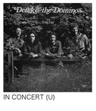
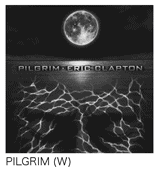

| エリック・クラプトン (光文社新書) | |
| 大友 博 | |
| 光文社 (2011) | |
目 次


All the beauty of the world and all the terror of losing it is there in Eric Clapton's rock'n'roll.
――Greil Marcus
エリック・クラプトンというロック・アーティストの存在を意識するようになったのは、１９６７年のことだ。ビートルズ来日の翌年ということになる。あのころ僕は、剣道に打ち込む坊主頭の中学二年生だった。たしか、深夜放送で耳にしたクリームの「サンシャイン・オブ・ユア・ラヴ」がきっかけだったのだと思う。
僕はビートルズやローリング・ストーンズ初期のシングルをかろうじて同時進行で買うことができた最後の世代に属している。家には鉄砲光三郎（河内音頭の音頭取り）やフランク永井のレコードが何枚かある程度だったが、小学生のころの「ヘルプ」や「ルビー・チューズデイ」との出会いをきっかけに、ポップスやロックンロールに興味を持つようになっていった。しかし、当時の普通の中学生にとってアルバムを買うことはほとんど不可能に近かった。極端に言えばトランジスタ・ラジオがクリームのようなタイプの音楽に触れる唯一の手段であり、「サンシャイン・オブ・ユア・ラヴ」や、さらに少ししてからは「ホワイト・ルーム」などが紹介されるたび、まだよく訳もわからぬ状態ではあったものの、興奮し、それまで耳にしたことがなかったようなサウンドや、なんだかとてつもなく素晴らしいクラプトンのギター・テクニックに深く感動したものだ。
初来日コンサートで
その最初の出会いから数えると７年後の１９７４年の秋、エリック・クラプトンがはじめて日本にやって来た。この時、彼は29歳。レッド・ツェッペリンやシカゴなど英米の大物ロック・アーティストが相次いで来日するようになったのは70年から71年にかけてのことだったから、やや遅れての日本上陸実現ということになる。長期の隠遁生活など諸事情があってのことだったとはいえ、このやや遅れての日本初上陸は、結果的に、「いよいよ真打ち登場」という印象を与えることにもなったのではないかと思う。
僕は21歳の大学三年生。すでに闘争の時代は終わりを告げていた。ノンポリを決め込んだ僕は、長髪やジーンズでも許される定期アルバイトを見つけてほぼ自活し、少しばかりの余った金はすべて音楽につぎ込むという毎日を送っていた。『ニューミュージック・マガジン』を愛読し、お茶の水のユニオンで新譜やカットアウト盤を買い、渋谷百軒店のブラック・ホークでコーヒーを飲み、気が向くと、ほとんど弾けないのだけれど、ヤマハのフォーク・ギターかグレコのエレクトリック・ギターに手を伸ばす。夜はサントリー・ホワイトを片手にレコードを聴きつづける。いつの間にか、音楽を聴くことが生活の中心になっていた。
あのころ、しかしながら、僕はエリック・クラプトンの歩みを熱心に追いかけていたわけではなかった。僕のヒーローはニール・ヤングであり、彼を中心に広がるサークルのようなものを意識しながらレコードを聴き、クラプトンはその外にいる人という位置づけで聴いていたのだ。とはいうものの、少なくとも僕はクラプトンの音楽を「ギターの神様」などという馬鹿げた概念でとらえることはなかった。ギターだけで彼の音楽を語る行為がいかに意味のないことかは、とくに意識しなくても理解していたような気がする。
だからもちろん、エリック・クラプトンの初来日公演にも足を運んだ。記憶が正しければ鳩居堂かどこかでチケットを買い、アルバイト先で知りあったひとつ上の女性を誘って、というか、なんとかお願いして一緒に武道館に向かったのだった。
武道館の周囲も、館内も、人であふれていた。すごい熱気だ。ようやく指定された２階南西後方のエリアにたどり着くと、僕らが座るべきシートにアメリカ兵と思われる体格のいい外国人が二人座っていた。そういうことが不思議ではない時代でもあったのだ。しかし、ここで怯んでは彼女に馬鹿にされると思い、ブロークン・イングリッシュを駆使して、なんとか彼らに退散してもらった。今となっては、いい思い出だ。
そして館内の照明が落ちると、アコースティック・ギターを抱えたクラプトンがステージに登場し、スーパー・ギタリストのスーパー・プレイを期待してきたファンに軽い衝撃を与えたのだった。
あの記念すべき初来日公演から数えると、エリック・クラプトンはすでに計18回の来日公演を行なっている。今年（２０１１年）の暮れにはスティーヴ・ウィンウッドとの共演という形で日本にやって来ることになっているから、つまり37年間で19回ということになる。とんでもない数字だ。
しかもこの間、いわゆる集金ツアーやどさ回り的なイメージを感じさせることはなかった。規模に関しても、ピーク時から減衰するというのではなく、20年前に人気が再燃して以降は、東京・大阪を中心にアリーナ・クラスの会場を10回以上満員にするというペースを守りつづけている。
ベンチャーズのような特殊な例を除くと、大物海外アーティストでこれだけの実績を残してきた人はほかに思いあたらない。ポール・マッカートニーやミック・ジャガーでも、今やそこまでの集客力はないだろう。ある種の奇跡のような気もしてしまうほどだ。いったいなにがクラプトンにその力を与え、そして、日本人はなぜそこまで彼の音楽を愛するようになったのだろう。幅広い層のファンで埋まったコンサート会場で、しばしば、そんなふうに考えることがあった。もちろん、正しい答などあるはずはないのだけれど。
日本との浅からぬつながり
すでによく知られている話だと思うが、エリック・クラプトンは、19回目を数えようとしているいわゆる公式来日とは別に、何度か日本にやって来ているようだ。裏原宿と呼ばれるエリアで買物をしているところや、あるいは格闘技を観戦する姿を見かけたという方もいらっしゃるだろう。まったくの私用で来日し、サンタナのステージに飛び入りしたこともある。
もちろん、コンサート来日の際にも裏原宿などには向かう。何年も前から酒も煙草も断ってはいるが、食欲はかなり旺盛のようで、某とんかつ屋など行きつけの店もいくつかあるらしい。ＤＪ・音楽プロデューサーの藤原ヒロシ氏との交流や、『新世紀エヴァンゲリオン』のキャラクターデザインなどで知られる貞本義行氏にアルバム『ピルグリム』のジャケット制作を依頼したことなど、興味深いエピソードも少なくない。
97年の初夏、ロンドンのオリンピック・スタジオでその『ピルグリム』を録音していたクラプトンにインタビューすることができたのだが、そこで彼は日本との関係に触れてこんなことを話していた。
――日本にたくさんの熱心なファンがいてくれることはよく理解しているし、僕自身も日本には特別な感情を持っている。国民気質ということかもしれないけれど、日本人とイギリス人の性格には似たところがあると思うよ。実際、文化そのものにしても、映画も、音楽も、デザインも、日本で体験できることがどれも、僕はとても好きなんだ。未来の世界に足を踏み入れたような気分になることもある。それから、日本の人は、好きになったことや、こうだと決めたことをずっと守りつづける。変えようとしない。そのあたりも、イギリス人と似ていると思うんだ。
やや褒めすぎのような気もするが、いずれにしても、74年の初来日をきっかけに日本と日本人、日本のカルチャーに特別な感情を持つようになったクラプトンは、以来、ほぼ２年に一回のペースで来日公演を重ねてきた。ずっと彼の招聘や興行を手がけてきたウドー音楽事務所との信頼関係も大きく働いたはずだが、そんな彼を日本のファンは、低迷期もサポートしてきた。約20年前の人気再沸騰の際には、どの国のファンよりも熱く反応したような気がする。しかし、クラプトンが語る「（日本人は）好きになったことや、こうだと決めたことをずっと守りつづける」という言葉だけでその理由を説明することはできないだろう。
ロックの転換期に現れたスター
一般の日本人がエレクトリック・ギターを手にし、普通の若者たちがエレクトリック・ギターを核にしたバンドを組んだりするようになったのは、60年代半ばのことだ。ベンチャーズ初の本格的な来日公演と、テレビ番組『勝ち抜きエレキ合戦』の放送開始が65年だから、あの年が大きなターニング・ポイントだったと言っていい。翌年にはビートルズが武道館でコンサートを行なって社会問題的な反響を巻き起こし、しばらくすると、芸能界発の動きとしてＧＳ（グループ・サウンズ）ブームが燃え上がっている。
しかし、この時点のエレクトリック・ギターとはあくまでも「エレキ」であり、キーワードは「モズライト」と「テケテケ」だった。クリームのデビュー・アルバムがリリースされたのは、ビートルズ来日と同じ66年のことだが、日本の音楽ファンの想いはまだフェンダーやギブソンのギターにまでは到達していなかった。いちおうＧＳにカテゴライズされていたゴールデン・カップスが、クリームのデビュー作にも収められていた「アイム・ソー・グラッド」を取り上げたりはしていたものの、それは例外中の例外だったと思う。
しかし、69年前後から日本でもいわゆるニュー・ロックの波がそれなりにきちんと紹介されるようになり、前述のとおり、70年から71年にかけて、大物ロック・アーティストが日本にもやって来るようになった。時を同じくして、高嶺の花だったギブソンやフェンダーのギターも、とりあえず日本製のコピー・モデルという形ではあるものの、数万円で入手することができるようになっていた（もちろん現在の数万円とは価値がまったく違うけれど）。ここで「エレキ」はようやくエレクトリック・ギターと呼ばれるようになり、キーワードは「モズライト」と「テケテケ」から、「レスポール／ストラトキャスター」と「キュイーン」へと変化を遂げたのだ。
アルバム『いとしのレイラ』が英米でリリースされたのは70年の11月。翌71年には日本のラジオでもシングルの「レイラ」がよくかかるようになっていたと思う。あの時代に少年時代を送った人なら、ギターが弾けるかどうかは関係なく、Ｔ定規やラケットを持って「レイラ」のイントロを弾く真似をしたことがあるはずだ。あの曲は、それだけの、なにか特別な魅力を持っていた。
ロック・ミュージックの概念や聴き方、エレクトリック・ギターとのつき合い方が劇的に変わろうとしていたそのターニング・ポイントに、新しいタイプのスターとしての地位を確立し、さらにはあの端正な顔立ちと抜群のファッション・センスで、日本人の心をつかんだエリック・クラプトン。彼こそは、ベンチャーズやビートルズ、あるいはＧＳ系のグループとはまったく違う形でギタリストへの憧れを抱かせた最初で最大のスターと言えるだろう。
起伏の多いドラマ性豊かな人生という要素も見逃せない。日本では、双眼鏡で指の動きを追うような人から、たまたまラジオで「ティアーズ・イン・ヘヴン」を耳にして関心を持ったというような人まで、多くのファンが、そういった背景にも強い関心を抱きながら、彼の音楽を愛し、その活動を支えてきたのだ。
エリック・クラプトンの側からみても、国民性や文化の共通性などとは少し異なる次元で、日本のロック・ファンというか、日本でステージに立つことを愛する理由があった。それは、日本のオーディエンスがステージでの演奏をきちんと聴くということだ。予定調和的な反応が少なくないような気がするものの、ともかく日本人の音楽ファンは、演奏中はじっと静かに聴き、演奏が終わると揃って熱い拍手と歓声をステージ上に贈る。
何度かアメリカやイギリスでクラプトンのステージを観ているが、いつも驚かされるのは、あるいは呆れてしまうのは、演奏中でも大きな声で話している人が多いということだ。みんながそうだというわけではない。だが、雑踏のなかでライヴを聴いているような、そんな印象を受けることすらある。クラプトン自身、ライヴ・アルバム『24ナイツ』を生んだロイヤル・アルバート・ホール連続公演に関して、「音楽そっちのけで会話に熱中している人がいる」という苦情のようなことを語っていたし、アコースティック楽器中心のライヴでは「この曲では手拍子をしないでください」と訴えようとしたこともあったという。
ステージに立ってギターを弾き、歌うことが、自分にとってどれほど大切なことであるかをクラプトンは何度か語っている。そこで得たインスピレイションやヴァイブレイションをその後の活動に生かしていく。ある意味では、数十年にわたって彼はそれを繰り返してきたと言えるだろう。そのためにクラプトンは、多少のリスクは背負っても、可能なかぎり理想的なラインナップのバンドとライヴを行なう。自分に刺激を与えてくれないミュージシャンとセッションを重ねても意味がないからだ。
そのような意識とスタンスでライヴ・パフォーマンスに臨み、そこで得るものに力を与えられてきたエリック・クラプトンにとって、日本と日本の音楽ファンは欠かすことのできない、重要な存在だった。そんなふうに言えるのではないだろうか。
この世の喜びと、それを失う恐怖
「ティアーズ・イン・ヘヴン」と『アンプラグド』による人気再沸騰の少し前ということになるが、１９８９年発表のアルバム『ジャーニーマン』を聴いて僕は、エリック・クラプトンというアーティストの凄さをあらためて感じとった。心ならずも翻弄された80年代の呪縛からようやく解き放たれたのだとも感じた。翌年春のアメリカ旅行中、たまたまニューオリンズ大学のアリーナで彼のライヴを観て、『ジャーニーマン』を聴いた時に感じたなにかがより明確なものになった。うまく理由は説明できないのだが、ステージ後方のチケットしか入手できず、ギターを抱えてマイクに向かうクラプトンの背中を観つづけていたことが幸いして、より深く彼の内面に入りこむことができたのかもしれない。
帰国後しばらくすると、国内盤のライナーノーツや雑誌記事などクラプトンに関する原稿を書くことを依頼されるようになった。音楽評論家や音楽ライターと呼ばれる人たちの世界で縦にも横にもつながりを持たず、また緻密に情報をチェックする性格ではなく、いわゆるコレクター的指向がまったくない僕にとって、あれは人生の転機のようなものだったのかもしれない。さらにはコンサートやフェスティバル、インタビューなど何度か貴重な取材の機会も得た。あまり大げさなことを言いたくはないが、そうした仕事や旅を通じて、なにか不思議な縁のようなものを感じてしまうこともいくつか体験している。
本書では、90年春のニューオリンズ以来、約20年間にわたって実際に観たり聴いたりしてきたことを中心に置きながら、これまでに書いた原稿のエッセンスも生かす形で、あらためてエリック・クラプトンという芸術家が歩んできた道をたどり、そこで残された作品などを僕なりの視点で紹介していきたいと思う。
この序章の扉ページで紹介したのは、敬愛するグリール・マーカスが75年に発表した『ミステリー・トレイン』からの一節。ロバート・ジョンソンに関する章のなかで、彼から影響を受けたアーティストのひとりとして、エリック・クラプトンの音楽を評したものだ。あえて翻訳するなら「クラプトンのロックは、この世のすべての喜びと、それを失う恐怖のすべてを歌っている」といったところだろうか。ある意味では、この一節に、それこそすべてが集約されている。日本人のファンも、その多くは、どこかでそういったことを理解しつつ、彼の音楽を愛してきたのではないだろうか。
その域に少しでも近づければと思うのだが、ともかく、クラプトン歴ほぼ半世紀の人も、「ティアーズ・イン・ヘヴン」をきっかけに聴きはじめたという人も、父親に連れて行かれたコンサートで興味を持ったという若い人も、どなたもがなにかを感じていただけるような本に仕上げられればと願いつつ、筆を進めていこう。
サリー州リプリー
２００５年の５月初旬、僕は、クリームのリユニオン公演を観る目的でロンドンを訪ねている。５日の昼ごろヒースロー空港に降り立ち、アールズコートの安ホテルでひと休みしたあと、歩いて、36年半前に解散公演が行なわれた場所でもあるロイヤル・アルバート・ホールに向かい、還暦を過ぎた３人の男たちが長い空白を埋めていく意義深いイベントの３日目を観たのだった。
最終日６日のチケットも手に入れていた。ゆっくり眠って万全の体調で臨もうと思ったのだが、時差ボケのせいもあってか、早朝に目が覚めてしまった。多少の興奮もあったのだろう。とはいうものの、開演の８時まではこれといってすることもない。大好きなナショナル・ギャラリーやピカデリー界隈は翌日に回る予定をたてていた。時間もたっぷりあるし、「それならば」と思い、ロンドンの南西部に位置するサリー州リプリーを訪ねてみることにした。そう、エリック・クラプトンが幼少年期を過ごした街である。
まったく下準備をしていなかったので、ホテル近くのインターネット・カフェでだいたいのルートを調べてから、アールズコートで地下鉄に乗り、ウォータールー駅へと向かった。そこでナショナル・レールに乗り換え、ワーキングという駅を目指す。快速や急行は避け、あえて各駅停車に乗ると、50分前後もかかった。
そこからリプリーまではバスだ。たまたまリプリーに停まるバスがターミナルで待っていたからよかったものの、あとで調べるとほぼ一時間に一本というスケジュールだった。土曜日は夕方まで、日祝日は運休。ほかにもルートがあるのだとは思うが、ロンドンからのアクセスはあまりよくない。
ワーキングは、けっこう賑やかな街。ロンドン通勤圏のベッドタウンといったところだろう。大きな店もたくさんあるようだが、しかし、街を出て５分ばかり走っただけで、窓の外の景色は一変する。田園地帯的なイメージがどんどん増していくのだ。そしてほぼ30分で、バスは「リプリー郵便局前」に到着した。
バス停の周辺に、食料品店やベーカリー、パブ、雑貨店、理髪店などが数えるほど。高い建物はほとんどなく、91年に亡くなった息子コナーの葬儀が行なわれた場所だという美しい教会の十字架が静かにその存在感を示していた。クリケットが盛んな土地だと聞いていたが、たしかにメイン・ストリートの北側にはいくつかコートらしきものがあった。南側には豊かな緑が広がっていて、中心部から外れると、道には牛や馬の糞が落ちていたりもする。そんな街だ。
その日はいい天気で、すっきりとした青空が広がっていたが、いつもそういうわけではないだろう。冬はひたすら寒く、どんよりとした曇りの日がつづくはずのこの小さな街で、エリックはどんなことを考えながら暮らしていたのだろう。そして、いったいどのようにして、遠く離れたアメリカ深南部でミステリアスな人生を生きたブルースマンたちに自分を重ね合わせていたのだろうか。厚いコートの襟を立て、重いギター・ケースを提げたまま、なかなかやって来ないバスを待つ少年の姿を想像してみた。
２００１年春に発表されたオリジナル・アルバム『レプタイル』は、そのサリー州リプリーで過ごした少年時代がメイン・テーマとなっている。オマージュという言葉を使ってもいいだろう。９歳ごろの自分の写真を大胆にフィーチュアするなどジャケット関係のコンセプトも自ら固めたものだというその作品にクラプトンは、彼の少年時代を知る手がかりとなる短い文章をライナーノーツとして寄せていた。大意はこのようなものである。
――ここで聴くことができる音楽は、00年春に亡くなった叔父、エイドリアンに捧げたものだ。いろいろな才能に恵まれ、創造力にあふれていたその叔父を、少年時代の私は実の兄だと信じ込まされていた。その結果、彼は私のものの見方に多大な影響を与えることとなった。今にして思えば、私の趣味や嗜好はこの時期に形成されたものであり、その多くをエイドリアンとの想い出深い関係に負っているようだ......。
幼少期の疎外感
エリック・パトリック・クラプトンは１９４５年３月30日、リプリーで生まれている。45年といえば第二次世界大戦が終結した年だが、念のためにあげておくと、同じ年に生を享けたロック・アーティストには、ニール・ヤング、スティーヴン・スティルス、ピート・タウンゼント、ブライアン・フェリー、ヴァン・モリスン、ジョン・フォガティ、ロッド・スチュワート、デボラ・ハリーらがいる。のちにクラプトンの音楽人生にとって大きな意味を持つこととなるボブ・マーリィもそうだ。
ちなみに、なにかと比較されることが多いジェフ・ベックとジミー・ペイジは44年生まれ。加入の噂が流れたこともあるローリング・ストーンズのミック・ジャガーとキース・リチャーズは43年生まれ。生涯の友となったジョージ・ハリスンも43年生まれ。髪型を真似るほど意識したジミ・ヘンドリックスは42年生まれだ。
07年に出版された自伝によると、エリックは、リプリーの小さくて質素な家で幼少年期を過ごしている。もともとは救貧施設として建てられた二階建て集合住宅の一角で、下階に居間とキッチン、上階に寝室がふたつというつくり。トイレは家の外、バスタブはなく、電気も通っていなかったそうだ。
その家はまた、彼が誕生した場所でもあった。病院や産院で生まれたのではなかった、ということだ。
エリックを出産した時、母親のパトリシアはまだ十代半ばの若さだった。父親はリプリー周辺に駐留していたカナダ軍兵士、エドワード・フライヤー。二人は地元で開催されたダンス・パーティで知りあった。ピアノを弾いていたエドワードにパトリシアが惹かれて、ということだったらしい。
やがて彼女は妊娠。しかし、エドワードは既婚者であり、いずれはカナダに帰国することになっていた。パトリシアは両親に助けられながら誰にも妊娠したことを知られないように行動し、45年春、リプリーの小さな家の寝室で男の子を出産したのだった。そして、しばらくすると、彼女は十代の少女として新しい生活をスタートさせるため、リプリーを去ってしまう。
結局、エリックはパトリシアの母ローズと、彼女の再婚相手だったジャック・クラップに育てられることとなった。養育するだけではなく、二人は彼の両親として振る舞うことも決断する。言うまでもなく、まだまだ若いパトリシアの人生を守るために、そして幼いエリックに辛い想いをさせないために、だ。その決断の結果として、叔父のエイドリアンは「歳の離れた兄」となったわけである。
エリックの祖母ローズ・ミッチェルは、20年代の半ば、レジナルド・セシル・クラプトンという男性と出会い、27年に結婚している。軍幹部の息子でオックスフォードに学んだレジナルドと、田園地帯リプリー出身のローズとの結婚にはいろいろと障壁もあったようだが、二人はそれを乗り越えてワーキングに家を構え、幸せに暮らした。しかし、エイドリアンにつづいてパトリシアが生まれるとすぐ、レジナルドが病死。失意のうちにリプリーに戻った彼女は、10年後の42年、優秀な左官工だったジャックと再婚し、４部屋の小さな家で新しい暮らしをはじめた。そしてその３年後にエリックが生まれたのだ。
少し脱線するが、僕が好んで聴くロック・アーティストたちは、ほぼ例外なく、幼いころに両親の離婚や、父母どちらかとの離別を体験している。たとえば、祖母と過ごす時間が多かったというジミ・ヘンドリックスや、叔母に育てられたジョン・レノンは、かなりエリックと状況が似ている。ニール・ヤングやロビー・ロバートソンもそうだ。デュエインとグレッグのオールマン兄弟は父親をヒッチハイカーに殺されている。ぐっと遡ればロバート・ジョンソンも、あの時代のミシシッピではあまり珍しいことではなかったのかもしれないが、相当に複雑な幼少年期を送っている（第２章参照）。
いずれにしても、自分の意志とは無関係な事情のもと、実の親と離れて、あるいは実の親の顔を知らずに成長していったという事実は、おそらくその結果として経済的な問題も抱え込むことになっただろうし、彼らの創造する音楽に少なからず影響を与えているはず。エリックももちろん例外ではなく、そういった事実や背景は、彼がブルース音楽に対峙する際のひとつの大きな基準のようなものになっているのかもしれない。
ローズには姉妹がたくさんいて、彼女たちが家を訪れるたび、なんとなく声を潜めるようにして「そういえば、あの子はどうしているの？」などと話すのを、エリックは不思議に思うようになった。やがてそれは違和感や疎外感へとつながっていく。６歳か７歳のころからだったというが、彼は家の空気から本能的になにかを嗅ぎとったのだろう。
そして54年の夏、決定的な事件が起こる。９歳になっていたエリックは、すでに別のカナダ人兵士と結婚していたパトリシアが二人の子供（異父弟と異父妹）を連れて帰省した時、かなりストレートな形でその疑問をぶつけた。「ママって呼んでもいい？」と訊いたというのだ。事実を認めながらも、彼女の反応は冷たいもので、「これからもローズとジャックを両親だと思って大切にしなさい」といった意味のことを言われたらしい。
９歳。日本でいえば、小学校三年生。少年と呼ぶにはまだ早い年齢で辛い体験をしたエリックは深く傷つき、内向的な性格を強めていった。女性、女性的なものへの潜在的な恐怖感のようなものも、この事件をきっかけに彼のなかで芽生えていったようだ。
アメリカ音楽との出会い
しかしながら、エリックはけっして「友達が誰もいない」というタイプの少年ではなかったらしい。リプリーでの体験や暮らしがテーマになったアルバムのタイトルに使われたレプタイルという言葉は爬虫類、転じて卑劣感を意味するが、友達や仲間のあいだでは友情や称賛の気持ちを込めて誰かを呼ぶ時の言葉だったという。エリックも「レプタイル」と呼ばれていたそうだから、クラスメートからはそれなりに一目置かれていたのだろう。自伝には泥だらけになって遊んだ日々や、街のあちこちでいろいろと、かなり大胆に羽目を外した思い出などもいきいきと描かれている。
とはいうものの、エリックがひとりで遊ぶのを好む子供だったことは事実のようだ。とりわけ、コミックを読むことや、絵を描くことには熱中した。ＳＦ的なストーリーを組み立て、空想のなかで遊ぶことも多かった。ローズとジャックはどうしてもエリックに甘くなってしまい、経済的に余裕があったわけではないのに、彼が欲しいというものは可能なかぎり買ってやった。手先が器用なジャックはエリックのために玩具をつくってやることもあった。ひとりで遊ぶのが好きなエリックの性格を直そうとはしなかったということだ。
叔父のエイドリアンは、エイドリアンなりのスタンスで、たとえば自分の好きな音楽を聞かせたり、映画館に連れて行ったりして、エリックを楽しませようとした。車に乗せて遠くへ出かけたりもしただろうし、粋な服の着こなしを教えたりもしたに違いない。アルバム『レプタイル』に寄せたクラプトンの短いライナーノーツからは、そんな少年時代が浮かび上がってくる。そして、そういった環境のなかで、彼は音楽の魅力を知ったのだった。
『レプタイル』発表後にスタートした２００１年のワールド・ツアーのために制作された公式プログラムのなかでクラプトンは、「エイドリアンはベニー・グッドマンに代表されるような40年代から50年代にかけてのジャズやダンス・バンドの大ファンだった」と語っている。78回転のレコードをけっこう持っていて、ダンスもうまかったらしい。その彼とともに時間を過ごすうち、エリックはごく自然に、遠く離れたアメリカの音楽と親しむようになっていく。20歳近く離れていた「兄」は彼にとって、音楽の先生でもあったわけだ。
音楽好きの兄／叔父は、当然のことながらロックンロールにも興味を持ったことだろう。ちなみに、ビル・ヘイリーの「ロック・アラウンド・ザ・クロック」が全米１位を獲得し、エルヴィス・プレスリーがブレイクした１９５５年が「ロックンロール誕生の年」とされているのだが、この時、エリックはちょうど10歳になっていた。
もちろん、ある時点で彼は、エイドリアンからは独立した形で音楽探究を開始したはず。のちにクラプトンは「ラジオの存在がきわめて大きく、あのころ聴いた曲がメンタル・ジュークボックスのようなものとして今も自分のなかに残っている」といった意味のことを語っているが、そういった毎日を送るうち、やがて、彼の心ははるか遠いアメリカ深南部へと飛んでいったのだ。
94年に初のフル・ブルース・アルバム『フロム・ザ・クレイドル』を発表したばかりのころ、クラプトンは「まずボ・ディドリーやチャック・ベリーを知り、そこからマディ・ウォーターズ、ロバート・ジョンソンと遡り、最後はレイバー・ソングにまでたどり着いた」といった意味のことを語っている。しかも、ブルース音楽がエリック少年を魅了したその核心にあったのは、あくまでも精神的なものだったのだという。
ほかにその当時刺激を受けた人たちとしてクラプトンは、リトル・リチャード、ジーン・ヴィンセント、バディ・ホリー、エルヴィス・プレスリーらの名前をあげている。最初に自分で買ったアルバムはバディ・ホリーのものであり、自叙伝には「ケネディが死んだ日のことはよく憶えていないけれど、バディが死んだ日のことは鮮明に記憶している」といったことも書かれている。59年に22歳の若さで他界したロックンロール・スターは十代半ばのクラプトンにとってきわめて大きな存在だったようだ。その理由は、「バディが本物のギタリスト」だったことと、眼鏡をかけていたことだという。彼はすでにその時点で自分にとって意味のある音楽のポイントをつかんでいたのだろう。
初めてのギター
リプリーでの音楽体験とその後の創作活動のつながりについてはまた詳しく触れることになるが、ここでエリック・クラプトンと楽器との出会いについて書いておきたいと思う。
幼くして独特の性格を形成してしまっていたエリックは、学校で目立つことや褒められること、称賛されることを無意識のうちに避けていたという。実の祖父はオックスフォード出身だったわけであり、潜在的な能力は高かったはずだが、勉強でトップを目指すこともなかった。ところがある時、彼は、はじめて習った楽器だというリコーダーで吹いた「グリーンスリーヴス」で一等賞をもらってしまう。
その音楽的な才能をクラプトンは、ローズの家系から受け継いだと考えているようだ。実際、家にはハーモニウム（リード・オルガン）があり、彼女はそれを弾きながらよく歌っていたという。また彼女の父は、ヴァイオリンやアコーディオンを弾きこなし、酔っぱらっては仲間たちと演奏を楽しむ、ちょっとしたローカル・ヒーローだったらしい。少年時代、エリックはエイドリアンに連れられて何度か彼の演奏を聴きにいったことがあるそうだ。
そのようにしてさまざまな形で音楽の魅力に触れ、アーティストたちに対して憧れの気持ちを抱くようになっていくうち、彼の興味は自然にギターへと向かっていった。
最初に手にしたのは、58年、13歳の時に祖父母にねだって買ってもらった中古のアコースティック・ギターだという。クラシック・ギターのボディにスティール弦が張られたタイプのモデルで、メーカーはドイツのホイヤー。高音部にいくほど弦高が高くなり、指が痛くてしかたがなかったというそのギターの次は、アメリカ製ウォッシュバーンの、やはり中古アコースティック。このギターはボディが小さいわりにネックが太く、運指の習得に大きく貢献したようだ。ちなみに、２本目のギターの購入資金に関しては、最初の時と同じく祖父母にねだったか、あるいは、財布から「拝借した」か、そのどちらかだったという。
自伝によれば、当時のエリックは、やや意外なことに、ファッションも含めてビートニク的な生き方に憧れ（深い部分は理解していなかったはずだが）、吟遊詩人的な方向性を目指していた。ストラップらしきものを自分でつくって弾き語りができるようにし、地元のコーヒーハウスなどで、人前で歌うことにも挑戦しようとしたらしい。
日本でいえば中学校を卒業した年齢で、エリックはロンドンのキングストン・スクール・オブ・アートに入学し、商業デザインやステンドグラスの制作を学ぶことになるのだが、この転機の前後から彼はますます深くブルースに入り込むようになり、２本目のギターで低音弦を使った基本的なブギーのパターンもマスターした。お手本にしたのは、ジミー・リード。ロバート・ジョンソンの存在も知り、自然と学業はおろそかになっていった。
結局、中退と退学の中間のような形で学校を辞めたエリックはジャックの仕事を手伝いながら、こつこつとギターの練習やコピーを重ねていった。当然のことながら、エレクトリック・ギターを手に入れたいという気持ちが次第に強くなっていく。そして、たまたま遊びに来ていた弟（前述の異父弟）が２本目のギターの上に座ってネックを折ってしまうという、ある意味では幸運な事件が起き、ついに彼は、最初のエレクトリック・ギターを手に入れることとなったのだった。
それはアメリカのケイというメーカーがギブソンのセミ・アコースティックを意識してつくった安価モデルで、ヘッドに特徴的なＫのロゴが入っていた。もちろんこの時も、資金は祖父母に援助してもらったはずであり、アンプまでは買えなかったわけだが、ともかくこれは、大きな一歩だった。レコードにあわせて演奏し、それをオープンリールのテープ・レコーダーで録音してチェックするといった自己流の練習を繰り返し、少し自信がつくと、17歳のエリックはロンドンのイーリングやマーキーといったヒップなクラブにも顔を出すようになっていく。
「クラプトン・イズ・ゴッド」の落書き
63年１月に友人たちとザ・ルースターズというバンドを結成し、経験を重ねていったエリック・クラプトンは、その後、ケイシー・ジョーンズ＆ジ・エンジニアズというバンドをへてザ・ヤードバーズに参加し、若きギター・ヒーローへと成長していくわけだが、すべてがそんなに格好よくすんなりと進んだわけではない。
たとえば、スタンリー・ブースの著書『キース』では、こんな興味深い逸話が紹介されている。
エレクトリック・ギターを弾きはじめ、ロンドン周辺のクラブにも顔を出すようになったころ、エリックは、ローリング・ストーンズを結成する以前のミック・ジャガーやキース・リチャーズ、ブライアン・ジョーンズと知りあっている。熱心にリズム＆ブルースやブルースと向かい合う彼らに、なにか自分と共通するものを感じたのだろう。
ミックが喉を痛めたときは代わりに歌うこともあったそうだが、キースやブライアンは彼を「おばあちゃんにギターを買ってもらったけど、ぜんぜん弾けない奴」と茶化していたらしい。実際、エリックは「弦はどんなものを買ったらいいの」など、彼らにあれこれと質問していたのだという。そして、いかにもありそうなことだが、その日暮らしのような毎日を送っていたキースとブライアンは自分たちのギターの調子がおかしくなると「ちょっと貸してね」などと言って彼のギターを好き勝手に弾いていたそうなのだ。キースたちが演奏をはじめると、エリックは歌詞を知っている唯一の曲だった「ロール・オーヴァー・ベートーベン」を、俯いて、ズック靴の先を見つめたままで、一緒に口ずさんでいた......。
ずいぶんと脚色された話なのかもしれないが、しかし、そのわずか数年後にはもうエリックがギター・ヒーローと呼ばれていて、さらにしばらくすると「クラプトン・イズ・ゴッド」という落書きがロンドンの街で散見されたという事実を考えると、なんとなく、あのロバート・ジョンソンがわずかな時間で超人的なテクニックを身につけたというミステリアスな十字路伝説（第２章参照）とどこかでつながるようで面白いではないか。それとも、これはブラック・ユーモア好きの彼らがグルになって練り上げた、60年代版十字路伝説なのだろうか。
こういった青春時代をへて、１９６３年10月、18歳と７か月になっていたクラプトンはザ・ヤードバーズにリード・ギタリストとして迎えられ、プロ・ミュージシャンとしての本格的な第一歩を踏み出すことになる。リード・シンガーのキース・レルフに誘われて、ということだったようだが、本格的なバンドへの参加はリプリーとの別離も意味していた。ここで彼は、ミュージシャンとしてだけではなく、ひとりの男としても新たな一歩を踏み出したのだ。
ヤードバーズでの第一歩
ザ・ヤードバーズはリズム＆ブルースやブルースなどアメリカの黒人音楽を追求する、つまりローリング・ストーンズと同じ方向性を持ったグループで、ちょうどこの時期、結成当時のストーンズのホームグラウンドとして知られるクラブ、クロウダディのレギュラー・バンドに迎えられたところだった。
将来性豊かなバンドに参加したわけだが、しかし、もちろんこの時点で、もうすでにクラプトンがスーパー・ギタリストだったというわけではない。それは、参加直後の12月に録音され、のちにアルバム化されたサニー・ボーイ・ウィリアムソンII（ライス・ミラー）とのライヴを聴いてもよくわかることだ。じつは、結果的に記念すべき初録音作品となったこのライヴに関しては、見過ごすことのできない、面白い逸話がある。
ザ・バンドのメンバーがまだザ・ホークスと名乗ってアメリカ南部を中心に旅の日々をつづけていたころ、彼らはアーカンソー州ヘレナでサニー・ボーイと出会い、白人は誰も近づかないようなローカル・クラブでサニーと一緒に演奏することになった。しばらくセッションを重ねたあと、これはロバート・パーマー（シンガーとは別人）の『ディープ・ブルース』やグリール・マーカスの『ミステリー・トレイン』などにも書かれている話だが、大男のサニー・ボーイが周囲を威圧するような例の太い声でこう言ったというのだ。
――ロンドンで俺のバックに雇われた連中（つまりクラプトンやヤードバーズ）はブルースが大好きみたいだったけど、演奏はひどいもんだった。お前たちは、まだ若くて白いのに、うまいなあ。いつかは一緒に旅に出よう。
もっとも、そのセッションの直後、65年５月25日にサニー・ボーイが亡くなってしまったため、残念ながら、彼らが組んだツアーも正式な共演盤も実現はしなかったのだが。
この逸話に関しては、クラプトンも自伝でちらりと触れている。どこかの時点で知ったのだろう。そして、苦笑いしたに違いない。あとでまた詳しく書くが、ザ・バンドこそは、自分の音楽がギターだけで語られてしまうことに疑問を抱くようになった、その大きなきっかけを与えてくれたグループだったのだから。
「スローハンド」
話をふたたび63年暮れのロンドンに戻すと、もちろん、クラプトンだけがサニー・ボーイに酷評されていたわけではない。バンド全体としてまだまだヤードバーズはブルース・バンドと呼べる段階には達していなかった、ということなのだろう。ところが、他のメンバーはともかくとして、それから本当にわずかな時間でクラプトンは、それこそ、深夜の十字路で悪魔に魂を売ったのではないかと思わせるような、長足の進歩を遂げることになる。
『ファイヴ・ライヴ』以降の作品をあらためて聴けば、それはもう歴然。演奏スタイルという点にかぎれば、64年の暮れごろまでに、クラプトンは現在につながる彼自身のスタイルをほぼ確立していたと言っていいと思う。ライトゲージを入手するルートを確保し、ベンディング（日本ではなぜかチョーキングと呼ばれているテクニック）とヴィブラートを多用した、ブルージィで、より表情豊かなプレイをしっかり自分のものとして聞かせるようになっていたということだ。
ちなみに、のちにアルバム・タイトルにもなるスローハンドというニックネームはこの時期に定着したものだったらしい。
ベンディングを多用すると、弦が切れることになる。それはステージ上でも容赦なく起きることだが、スペアのギターなどなく、まだローディ（楽器類のケアを担当するスタッフ）などいなかったはずであり、クラプトンは自らその場で弦を張り替えていた。当然のことながら、演奏は数分間中断される。すると、オーディエンスは若干の嫌みをこめて、ゆっくりとしたテンポの手拍子を彼に送る。スロー・ハンドクラップ。いかにも英国的な意思表示だが、つまり、これが彼のニックネームの語源だったというわけだ。
振り返ってみれば、こうしてクラプトンと他のメンバーの力量に大きな差が出はじめたことも引き金となったのかもしれないが、結局、翌65年の春、「バンドのポップ化を嫌って」という理由で彼はザ・ヤードバーズを去っていく。二十歳での決断だ。そのポップ路線の第一弾シングルであり、ヤードバーズでのクラプトン最後の録音作品のひとつとなった「フォー・ユア・ラヴ」は結果的に全英チャートで３位まで上昇しているのだから、彼は経済的な成功と名声を得る機会をみすみす逃したという見方ができるかもしれない。
もちろん、クラプトンは後悔などしなかったはずだが、いずれにしても、二十歳になるかならないかでそこまでの決断をしてしまったのだから、まったくとんでもない人である。それがどれほど重い意味を持つものか、試しに、皆さんも自分が二十歳だったころのことを思い出してみるといい。比較しても詮ないことだが、僕などはそのころ、これといった目標もなく、恥ずかしくなるくらいどうしようもなくいい加減な生き方をしていたものだ。
ヤードバーズ在籍時にクラプトンが体験したこととして注目しておきたいのは、ジョージ・ハリスンとの出会いだろう。純粋にブルースを追求していたクラプトンはビートルズにはほとんど興味を感じていなかったが、64年暮れに開催されたクリスマス・ショーでヤードバーズが彼らの前座を務めたことをきっかけに、ジョージとは親しく話すようになった。ジョージは自慢のグレッチを見せ、クラプトンはライトゲージについて教え、そこからふたりの友情がスタートした。
自叙伝にも書かれていることだが、当時のクラプトンはブルースを追求する一方で、空いた時間があるとジャック・ケルアックやアレン・ギンズバーグを読み、フランス映画や日本映画（黒澤明「七人の侍」など）を観ていたという。ホークス時代、ロビー・ロバートソンがブニュエルに傾倒し、他のメンバーに隠れて台本や映画論も読んでいたという逸話と重なるようで興味深い。
ブルースブレイカーズへの参加
ヤードバーズを脱退したクラプトンは（おそらく演奏印税などはほとんどもらっていなかったはず）、いったんリプリーに戻り、次の一歩を模索していた。その彼に「僕のバンドに入らないか」と声をかけてきたのが、12歳上のジョン・メイオールだった。
しばらくすると「ブリティッシュ・ブルースの父」、「もっとも有能なタレント・スカウト」、「ブルース・スクールの先生」などと称賛されるようになるメイオールは、当時、すでにブルースブレイカーズを結成してレコードをリリースしてはいたものの、まだまだ一般的な意味での評価や人気を得るには至っていない。若いクラプトンは「この人とやる意味があるだろうか」と考えたはずだ。彼のヴォーカル・スタイルもあまり評価していなかった。
しかし、メイオールにはブルース研究家としての顔があった。かなりのレコード・コレクターであり、結局、クラプトンはそういったメリットも考慮してブルースブレイカーズへの参加を決意したようだ。実際、メイオールの家に同居するようになった彼は、棚に並べられたレコードをじっくりと聴きこんでいったという。そこには、以前から興味を持っていたもののなかなか聴く機会を得られなかったブルースマンたちのレコードも、たくさん含まれていた。
また、メイオールとの関係でクラプトンの世界は大きく広がり、ロンドンに来ていたマディ・ウォーターズとオーティス・スパンの録音に参加するといった貴重な体験もしている。また、実を結ぶことはなかったが、初渡英したボブ・ディランのセッションにも参加しているのだ。ただし、この時点ではディランの音楽にはまったく興味が持てず、彼を認めるようになったのは66年発表の『ブロンド・オン・ブロンド』を聴いてからのことだったという。
ところが、なんとなく陽の当たらないところで、しかも殺人的なスケジュールでライヴを繰り返しているだけの毎日と、菜食主義者で酒も飲まないメイオールのライフ・スタイルに嫌気が差したのか、クラプトンはわずか４か月で彼らの前から姿を消してしまう。気のあった仲間とザ・グランズというバンドを組んで、大きな車に楽器を積み込み、ヨーロッパ大陸に向けて旅立ってしまったのだ。
この間、メイオールは有能なスカウトぶりを発揮してすでに目をつけていたと思われるピーター・グリーン（のちに初期フリートウッド・マックの中心メンバーとして活躍。「ブラック・マジック・ウーマン」の作者でもある）を迎えて活動を続行。一方のクラプトンは、たどり着いたギリシアで定期的な仕事を得たものの、契約の関係でかなり危険な状況に陥り、まさに決死の脱出を試みてなんとか帰国......と、いろいろあったが、ともかく65年11月にブルースブレイカーズに復帰。翌66年の春、ブルースマンとしてのクラプトンの正式なデビュー作と呼んでいいかもしれないあのアルバム『ブルースブレイカーズ・ウィズ・エリック・クラプトン』が録音されたのである。
オーティス・ラッシュの「オール・ユア・ラヴ」やフレディ・キングの「ハイダウェイ」といったブルース・クラシックで素晴らしいギターを聞かせ、ロバート・ジョンソンの「ランブリン・オン・マイ・マインド」で初のリード・ヴォーカルにも挑んだこのアルバムが発売されたころには、しかし、クラプトンはもう次のステップに向けて歩きはじめていた。すでにいくつかのバンドで活躍していた実力派ミュージシャン、ジャック・ブルース、ジンジャー・ベイカーのふたりとの、クリームの結成だ。この時、クラプトン、21歳。
クリーム結成
ロック界初のパワー・トリオ、そしてスーパー・グループ（結成時点で全メンバーが相当の知名度を持っていたグループ、といった意味）として話題を集めたクリームが結成されたのは、１９６６年の初夏。グラハム・ボンド・オーガニゼイションでの革新的なドラムスで高い評価を集めていたジンジャー・ベイカーが新しいグループを結成する意志を固め、何度か共演して強いインスピレイションを感じていたエリック・クラプトンに声をかけたことがそのきっかけだった。
ベイカーは最初からトリオ編成でいくプランを立てていたようだが、やはりグラハム・ボンド・オーガニゼイションに在籍していたことがあり、一時期ブルースブレイカーズにも参加していたジャック・ブルースをベースに迎えることを提案したのはクラプトンだったという。ジャズやクラシックにも精通した実力派ミュージシャンふたりと、21歳の若さながら「英国ロック界最高のギタリスト」としての地位を固めてしまっていたクラプトンの出会い。凄いグループになるであろうことは、誰の目にも明らかだった。
ただし、この時点での彼らは、演奏力の高さだけを前面に打ち出すようなグループを目指してはいなかったという。とりわけクラプトンは、ブルースブレイカーズでのレコーディングで感触をつかんだヴォーカリストとしての自分を試してみたかったと語っている。
トリオという最小限の編成にこだわりながら、メンバー３人の高度な演奏力を生かし、彼らはブルース音楽をベースに、ジャズ的なインプロヴィゼイションの手法、サイケデリック／ヒッピー的感性などを融合させた、まったく新しいタイプのロックを創造していく。ピート・ブラウンという詩人を専属の作詞家としてフィーチュアすることによって、知性や文学性もしっかりとアピールしていた。
それからわずかな時間でクリームは、ちょうど大きな革新の時期にあったロックの世界の、文字どおりの頂点に立つ。トリオ編成という制約もあってライヴでは３人が激しくぶつかり合うようなスタイルをとることになったが、スタジオでは緻密な音づくりに取り組み、とりわけいち早く８トラックのレコーダーを使用するようになった中期以降は、あらゆる意味でロック・シーンの潮流をリードする存在となったのだ。
「サンシャイン・オブ・ユア・ラヴ」や「ホワイト・ルーム」など大きなシングル・ヒットも生まれた。コンサートやツアーの規模も、ものすごいスピードで大きくなっていく。しかし、その栄光に包まれた活動が長くつづくことはなかった。
67年の夏ごろ、クラプトンは海賊版でボブ・ディランの『地下室テープ』を聴いたという。前述のとおり、ディランのことはすでに認めるようになっていたが、そこでバックを務めているザ・ホークスの、アンサンブルを重視した渋い演奏にも心を奪われたに違いない。「これこそが本当に自分のやりたかったこと」だと思ったかもしれない。そして、そのショックは彼らがザ・バンドの名前で翌年に発表した『ミュージック・フロム・ビッグ・ピンク』で、さらに強いものとなる。
ザ・バンドの衝撃
『ビッグ・ピンク』は１９６８年の初夏にリリースされているのだが、彼らはそれ以前の10年間、アメリカ各地でひたすらオン・ザ・ロードの暮らしをつづけながら、徹底的に腕を磨き、見聞を広めていた。ご存じのとおり、彼らはディランのあの歴史的な変革をサポートしているし、すでに書いたとおり、亡くなる直前のサニー・ボーイを唸らせたりもしている。ディランから「一緒にやりたい」という連絡があった時は、「ちゃんと弾ける奴なのか」と話し合ったというのだから、とにかく演奏には絶対の自信を持っていたのだろう。たとえばギターのロビー・ロバートソンに関していえば、65年前後に録音されたジョン・ハモンドのアルバムでのリード・ギターを聴いただけでも、彼がとんでもないミュージシャンだったことはよくわかる。
それだけの力を持った男たちが、演奏力をひけらかすのではなく、あえて歌と音楽そのものに心を注いでつくり上げた『ミュージック・フロム・ビッグ・ピンク』に、23歳のクラプトンは打ちのめされた。クリームの音楽と、ザ・バンドの音楽の「質の差」のようなものに彼は愕然としたという。実際、92年の秋にニューヨークで行なわれたボブ・ディランの30周年記念コンサートで彼は、ザ・バンドの面々を紹介する時、「彼らのアルバムはアメリカの音楽の流れを変え、そして私の人生を変えた」とまで語っているのだ。それは、お世辞でもなんでもなかった。
もし彼がその時点で、ヤードバーズとサニー・ボーイとザ・バンドをめぐる例の逸話を知っていたとしたら、『ミュージック・フロム・ビッグ・ピンク』から受けた衝撃はとんでもなく強烈なものだっただろう。さらにアメリカからは、『スーパー・セッション』によってミュージシャンの自由な交流の可能性を広げたアル・クーパーや、ニール・ヤングが在籍していたバッファロー・スプリングフィールドなど新感覚の音もつぎつぎと届き、クラプトンの耳と心を刺激していた。サンフランシスコ系のバンドにも注目していて、とりわけモビー・グレープを高く評価していたようだ。もちろん、66年暮れのロンドンに突如として出現したジミ・ヘンドリックスの存在も忘れることはできない。
いずれにせよ、ジャック・ブルース、ジンジャー・ベイカーのふたりと、トリオ編成の、しかもインプロヴィゼイションを重視したバンドをつづけているかぎり、ザ・バンドのような歌の世界を創造することは、ほとんど不可能だった。しかも、大半のファンやオーディエンスは、「まるで果たし合いのようだ」とまで形容された彼らのスリリングな演奏を、極端に言えばそれだけを求めてコンサートの会場にやって来るのだから。
23歳のクラプトンは、クリームを解散してしまうか、ザ・バンドと同じレベルを目指すしかないと、真剣に考えた。なんとか状況を打開する方法として、スティーヴ・ウィンウッドをクリームに迎えることを提案したものの、ブルースとベイカーに拒絶されたという。
結局、振り返ってみれば、ヤードバーズを去った時とほぼ似たような心理状態のなかでクラプトンはクリームを辞める決心をする。ただし、状況はヤードバーズの時とはもうまったく違っていた。クラプトンの脱退は、つまり、バンドの終結を意味するものだったからだ。こうしてクリームは、結成からわずか２年半でその活動に終止符を打つことになる。
ビートルズとの共演
当時の逸話として忘れられないものに、ビートルズのレコーディングへの参加がある。曲は、ジョージ・ハリスンが書いた「ホワイル・マイ・ギター・ジェントリー・ウィープス」。録音が行なわれたのは68年９月５日。
今年２０１１年８月にクラプトンから直接聞いた話によると、その前日、ジョージが「サプライズを用意してる。車で行ってピックアップするよ」と電話をかけてきたという。そして、彼は約束の時間にやって来て、車の中で「僕の曲でギターを弾いてくれないかな」と頼んだのだそうだ。
断る理由はない。自分の腕には絶対の自信があり、神経質になったり、心配したりということもなかった。スタジオには、ジョンとポールとリンゴ。そこではじめてどんな曲か知らされたわけだが、軽く音合わせをした段階でジョージは、さらに「僕はコードと歌に集中したいから、ソロを弾いてほしい」といってきた。まさかの展開だったが、やはり、断る理由はない。クラプトンにとっては簡単なことであり、最初か２番目のテイクでＯＫになったという。
大物アーティストがレーベルの壁を越えて共演することなどほとんどなかったあの時代にジョージは、ジョンやポールから拒否されるかもしれないことを承知のうえで、エリックを招いた。そしてクラプトンは、素晴らしい演奏でその気持ちに応えたのだ。
二人の友情はそれほど深いものであったわけだが、ここまで書いてくると、やはりこのあたりで触れておかなければいけないことがある。「運命の女性」であり、クラプトンにいくつかの名曲を書かせることとなるパティ・ボイド・ハリスンとの出会いだ。
パティ・ボイドとの出会い
１９４４年、イングランド南西部のサマセットで生まれたパティは、18歳の時、ロンドンに移り、働いていた美容室の客にスカウトされる形でモデルになっている。そして、ビートルズの映画『ア・ハード・デイズ・ナイト』に端役で出演したことがきっかけでジョージ・ハリスンと知りあっている。このビートルズの最年少メンバーと彼女が結婚したのは66年のことだった。
当時のパティは、今の言葉で言うスーパーモデルのような存在ではなかったが、個性的なルックスでそこそこの注目を集めていたようだ。たとえば、数年後に登場してミニスカート・ブームを巻き起こすことになるツイギーは、かなりパティを意識していたらしい。
クラプトンの記憶によれば、彼がパティの美しさを認識するようになったのは、サヴィル・シアターでクリームがライヴを行なった日だという。67年の夏から秋にかけてのことだろう。
「あり得ないほど美しい」と思い、会話を交わすうちにその気持ちはさらに強まり、ジョージを妬むようになった。やがてその想いは周囲の人たちを巻き込むまでになり、しばらく前から同居していたフランス人のガールフレンドはクラプトンのもとを去った。これはしばらく後の話だが、パティの代理的存在としてつきあうようになった彼女の妹ポーラも、クラプトンの本心を知り、デレク＆ザ・ドミノスのキーボード奏者ボビー・ホイットロックに乗り換えたという。
クリーム解散後、クラプトンは米国大使を務めたこともある外交官の娘で「妖精のように美しい少女」アリスと出会っている。いわゆる空白期をともに過ごすことになる女性だ。だが７歳下の彼女もまた、彼がパティに寄せる想いに苦しみつづけた。
「なぜそこまで」と思ってしまうが、クラプトンのパティへの愛もまた、ブルースやロバート・ジョンソンに対する想いと同じで、誰にも説明できないものなのかもしれない。
『オール・シングズ・マスト・パス』の録音が行なわれていたころ、偶然（あるいは偶然を装って）、街で遭遇したパティとクラプトンは、あと戻りのできないところまで進んでしまい、エリックはそれをジョージに告白したという。しかし、彼女とジョージが別れるということにはならず、彼はますますその想いを募らせていく。結局はその、誰にも説明できないような感情が、クラプトンをあの『レイラ』の創造へと向かわせていったのだ。
ブラインド・フェイス結成
ふたたび話を戻すと、68年の暮れ、ローリング・ストーンズ主催の『ロックンロール・サーカス』でジョン・レノン、キース・リチャーズ、ミッチ・ミッチェルと共演するといった話題を残したあと、クラプトンは翌年の２月、新グループ、ブラインド・フェイスの結成を公表する。メンバーはトラフィックが休業状態にあったスティーヴ・ウィンウッド、元ファミリーのリック・グレッチ、そしてクラプトンとジンジャー・ベイカーの４人。ウィンウッドはクラプトンより３歳若いが、黒人音楽への傾倒ぶりには並々ならぬものがあり、すでにスペンサー・デイヴィス・グループやトラフィックで、当時の音楽界にしっかりとした地位を確立していた。またふたりには、66年にパワーハウスというプロジェクトで共演した経験もあった。
当然のことながら、メディアは「スーパー・グループ誕生」と騒ぎたてることになる。そういった状況のもとで録音された彼らの、結果的に唯一のアルバムとなった『ブラインド・フェイス』（『スーパー・ジャイアンツ』という強烈な邦題が当時の状況を伝えてくれる）は、ソングライター＝クラプトンの本格的なデビュー作と言っていい「プレゼンス・オブ・ザ・ロード」や、ウィンウッドの「キャント・ファインド・マイ・ウェイ・ホーム」など、長く聴き継がれていくことになる名曲が収められてはいるものの、しかし、全体的にはまったくまとまりに欠けている。Ｂ面などは、もう、時間切れになってしまって、長いジャムでお茶を濁したという印象すら与えかねない雰囲気だ。
クラプトン自身、作品全体を監修するプロデューサーの不在を失敗の大きな原因としてあげているようだが、もともとブラインド・フェイスはそういう運命にあるバンドだったのかもしれない。
６月７日、ロンドンのハイド・パークに10万人を集めて行なわれたデビュー・コンサートでも、７月12日にマディソン・スクエア・ガーデンからスタートした全米ツアーでも、バンドとしての一体感を欠き、どこか焦点がずれたままの状態がつづいていく。しかも、例によってオーディエンスが求めているのは、「スーパー・ギタリスト＝クラプトン」でしかなかった。６週間にわたる全米公演が終了した時、彼は新しいバンドへの興味をすっかり失ってしまっていた。ブラインド・フェイスの解散が正式に発表されたのは70年１月のことだが、実質的には全米ツアーが終わった時点でバンドはもう分裂していたと言っていいだろう。
しかし、ブラインド・フェイスがまったく無駄な試みだったというわけではない。クラプトンはあらためていろいろなことを学んだだろうし、プロデューサーという存在の重要性も理解したはずだ。そして、ツアーのあいだには、その後の彼の音楽活動にとってきわめて重要な、言ってみれば触媒のようなものとなるデュオと出会っている。デラニー＆ボニーだ。
ソロ・アーティストとしての第一歩
デラニー・ブラムレットとボニー・リンは、60年代の半ば、ロサンゼルスの音楽シーンで出会い、すぐに結婚してデュオ活動をスタートさせている。その後、デラニーが以前から交流を持っていたレオン・ラッセルやカール・レイドル（どちらもオクラホマ出身）を中心にして、フレンズと呼ばれるコミュニティ的な性格を持ったバック・バンドがだんだんと形成されていった。そして、デラニー＆ボニー・アンド・フレンズという存在が広く知られはじめたころ、彼らはブラインド・フェイスの前座を務めることになったのだった。
すでにブラインド・フェイスから心が離れようとしていたクラプトンは、ゴスペルやカントリーなども自由にミックスさせていく、深いグルーヴ感を持ったデラニー＆ボニーの音楽に強く惹かれ、空いた時間には彼らとジャム・セッションを重ねるようになる。さらには、移動時に彼らのツアー・バスに乗り込むまでになっていったという。
全米ツアー終了後も、クラプトンはフレンズの一員としてしばしばステージに立っているのだが、サイドマンとしてのスタンスはキープしつづけたという、いかにも彼らしいエピソードも残している。それは、考えようによっては、クリームやブラインド・フェイスの時代の反動、あるいは、学習の成果でもあったのだろう。
名盤『オン・ツアー』を生んだイギリス・ツアーを終えたあと、70年１月、クラプトンはそのデラニー＆ボニーと彼らの仲間たちの協力を得て初のソロ・アルバムの録音をロサンゼルスで行なっている。プロデューサーは、デラニー・ブラムレット。曲づくりにも彼が大きく関わったこともあり、全体的にはデラニー＆ボニー／レオン・ラッセル一派的な色彩の濃い作品に仕上げられているが、ともかくこうして、クラプトンはついにソロ・アーティストとしての第一歩を踏み出したわけである。フレンズを通じて「アフター・ミッドナイト」の作者であるＪ・Ｊ・ケイルというミステリアスな魅力にあふれたアーティストの存在を知ったことも、大きな意味を持っていた。
このファースト・ソロ・アルバムを仕上げると、クラプトンはいったん彼らと別れてイギリスに戻り、故郷のリプリー近くに購入した邸宅で静かな時を過ごしていた。
そこに、メンフィスの出身で、フレンズのオルガン奏者だったボビー・ホイットロックが訪ねてくる。クラプトンより３歳下の彼は、デラニー＆ボニーのメンバーが揃ってジョー・コッカーのツアーに出ていったあと、以前からデラニーの行動や人間性に疑問を感じていたこともあり、片道航空券だけを手に入れて渡英したのだという。
そして、しばらくのあいだ、ジャムを繰り返しながらふたりで曲を書いているうち、新バンドの構想が固まっていき、やはりフレンズのメンバーだったカール・レイドル、ジム・ゴードンが迎えられたのだった。考えようによっては、デラニー＆ボニーの屋台骨を完全に崩してしまったかのような、新バンド誕生である。
デレク＆ザ・ドミノスの結成
おそらくクラプトンは、デラニー＆ボニーとのセッションを楽しみながらも、やはり、大編成のコミューン的なユニットよりも、小編成のバンドで、自分本来のギター・ワークをきっちりと生かし、打ち出しながら、しかも彼自身がフロントマンとして立つスタイルをとらずに、ザ・バンドに通じるような深い歌の世界を創造していきたいと、そう考えたのだろう。
４人揃って参加したジョージ・ハリスンの『オール・シングズ・マスト・パス』のレコーディングで感触を確かめ、フィル・スペクターのプロデュースでシングルの録音も行なったあと、当時しばしば行動をともにしていたデイヴ・メイスンを加えた編成で一緒にステージに立ったものの、最終的には４人でいこうということになったのが、70年の６月末。
デレク＆ザ・ドミノスというバンド名は、その初ライヴの時、偶然というか成り行きで決まったもので、深い意味はなかったという。匿名性を重要視していたクラプトンにとってはぴったりの名前だった。彼には「エリック＝デレク」という意識すらなかった。
親友の妻への、許されない、苦しい愛をメイン・テーマとしたアルバムの録音は、70年８月、エグゼクティヴ・プロデューサーに迎えることとなったトム・ダウドがその本拠地としていた、マイアミのクライテリア・スタジオでスタートする。作品の核となったのは、「アイ・ルックト・アウェイ」や「テル・ザ・トゥルース」などをはじめとするクラプトンとホイットロックの共作曲。ほかにクラプトンとホイットロックそれぞれのオリジナル曲、ブルース・クラシック数曲と、ジミ・ヘンドリックスの「リトル・ウィング」などが用意され、いよいよ録音開始となるわけだが、当初はなかなか「これは」という手応えが得られなかったという。その壁を超える大きなきっかけとなったのが、あのデュエイン・オールマンだった。
『いとしのレイラ』
デュエインが参加していなかったら、『レイラ』は今、僕たちが聴いているのとはまったく違ったものに仕上がっていただろう。収録曲や並びが同じだったとしても、聞こえてくる音の輪郭や輝きは大きく異なっていたに違いない。ところが、彼の起用は最初から計画されていたことではなく、いくつかの偶然の重なりのなかから生まれた、運命的な事件だったのだ。
これは90年発表のボックス・セット『レイラ・セッションズ』や、本書執筆中に入手した40周年記念７枚組コレクターズ・エディションのライナーノーツなどで、トム・ダウドの言葉として紹介されていることだが、クラプトンの新バンドの録音を手がけることが決まった時、ダウドはオールマン・ブラザーズ・バンドの２枚目のアルバムのプロデュースも引き受けていた。デュエインのことはアラバマ州マッスルショールズでのセッションなどを通じてすでに高く評価していたし、彼がクラプトンの大ファンであることも知っていた。
そこで、当然のことながら、デュエインが「ちょっとスタジオを覗いてもいいかな」ということになった。本来は、それこそサインでももらって終わるはずの話だったが、クラプトンのほうも、ウィルソン・ピケットの「ヘイ・ジュード」などでのデュエインのプレイに注目していたらしく、たまたま近くで行なわれていたオールマンズのコンサートにドミノスが全員で出向くこととなる。そして、コンサート終了後にはそれぞれのメンバー全員が参加してのジャム・セッションが延々と行なわれ、結局、デュエインが準メンバー的な立場でドミノスのレコーディングに参加することが決定したのだった。
記録によればドミノスは、約一週間という、現在の常識では考えられないほどの速さでこのアルバム（当時はアナログ２枚組）を仕上げている。全14曲中、デュエインは11曲に参加しているが、スカイ・ドッグというニックネームの所以でもある、縦横無尽に駆け回るスライド・ギターと、彼の明るく前向きなパーソナリティが、ドミノスとスタジオ内の空気に強烈なスパークを与えたのだろう。そしてもちろん、これはもう公になっていることだが、大量のマリファナやドラッグとアルコールにも支えられて、クラプトンたちはロック史に、と言うよりは音楽全体の歴史に残る、奇跡的な名作をつくり上げたのである（詳しくは第４章参照）。
その『レイラ』のテーマは、すでに書いたとおり、親友の妻への許されない、苦しい愛だった。ある意味では「勝手に苦しんでいれば」といった程度のテーマなのだが、クラプトンはその強い想いと、ブルースへの愛情と、自らのイギリス人的な感性のすべてを昇華させ、ブルース・ロックという芸術へと高めていった。そして、そのきわめて個人的なレベルから生まれた歌が、やがて揺るぎない普遍性を持つに至り、だからこそ彼自身、もう自分を離れた名曲として、ここに収めた歌を今日までずっと歌いつづけてきたわけだ。
序章でも紹介したとおり、僕が敬愛する著述家グリール・マーカスは「クラプトンのロックは、この世のすべての喜びと、それを失う恐怖のすべてを歌っている」と書いている。そのとおりだと思う。それが、芸術というものなのだ。
25歳の若さでそこまでの境地に到達してしまった彼は、しかし、そこで大きな壁に突き当たり、深い闇のなかへと沈んでいくことになる。
ドラッグの闇へ
レコーディングを終えるとすぐ、仕上げはトム・ダウドに任せて、デレク＆ザ・ドミノスはツアーに出た（もちろん、デュエインは自分のバンド、オールマンズに戻った）。記録によればこのツアーは９月20日にロンドンからスタートしたようだが、そのわずか２日前の18日に大きな事件が起こっている。ジミ・ヘンドリックスの急死だ。
クライテリアのレコーディング・セッションで「リトル・ウィング」が録音されたのは９月８日のこと。その時点でヘンドリックスが病院に入っていたなどという話はまったくなく、誰も彼の死を予想してはいなかった。だから、おそらくそれは、まだまだワイルドなギタリストというレベルで受け止められることが多かった彼の本質的な魅力を、少しでも広く世の中に伝えたい、という想いからのカヴァーだったのだと思う。オリジナルは２分少しで終わってしまう曲を、大胆なアレンジを加えて長い作品に変身させ、彼を驚かせてやろうという気持ちもあったのかもしれない。しかし、結局、ヘンドリックスはその完成ヴァージョンを耳にすることなく逝ってしまう。
年末までつづいたツアーを通じてクラプトンは「リトル・ウィング」を演奏しつづけた。ライヴ・アルバム化された10月下旬のフィルモア・イースト公演でも演奏されていて、94年発売の完全盤に収められているが、そこで聴くことができる、文字どおり爪弾くようにしてストラトキャスターを泣かせている導入部は、ヘンドリックスへの鎮魂歌だったのだろう。
ジミ・ヘンドリックスの急逝と前後して、かつて「父」として優しく接してくれたジャック・クラップがこの世を去る。また一方、『レイラ』の制作へとクラプトンを突き動かしたパティへの愛は依然として、「許されない、苦しい愛」のままだった。これだけの作品をつくれば相手の心も動くはずと密かに期待していたのだが、彼女の反応はそれこそ「歯牙にもかけない」というものだった。
アルバム『レイラ』自体も、バンドの匿名性が高かったことが災いしてか、商業的な意味では思っていたほどの評価を得ることができないでいた。しびれを切らしたレコード会社側は、クラプトンを説得し、プロモーション用に「エリック・イズ・デレク」というバッジまでつくっている（40周年エディションにはそのレプリカが付録として収められている）。
クラプトンの、ドラッグへの依存度はますます高くなっていった。純度の低いコケインしか手に入らなかった時は「オーディエンス全員が悪魔のように見えた」とまで語っているほどだから、ともかく、もうドラッグなしには生きられない状態に入っていたのだろう。
引退の危機？
翌71年の４月、イギリスでデレク＆ザ・ドミノスの２枚目のアルバムの制作が開始されたものの、録音途中でバンドはあえなく崩壊する。些細なことが原因でゴードンと激しく言い争ったあと、クラプトンがスタジオを去ったのだという。
大切なバンドを消滅させただけではない。この年をクラプトンは、いくつかのレコーディングにゲスト参加し、ジョージ・ハリスンに請われてあの『コンサート・フォー・バングラデシュ』のステージに立ち、レオン・ラッセルのコンサートにちらっと顔を出しただけで終えてしまう。
『バングラデシュ』の時は、ニューヨークで用意されていたドラッグが身体に合わなかったために寝込んでしまい、リハーサルもできないような状態だったらしい。事情をよく知る一部の関係者からは、コンサートの記録映画やライヴ・アルバムに彼の演奏が残されたのは奇跡的なこと、とまで言われたそうだ。
この年の秋、デュエイン・オールマンがオートバイ事故で亡くなったことが、クラプトンを包む闇をさらに暗いものとした。あの自由に空を駆け回るようなスライド・ギターを弾く男は、もういないのだ。
翌72年、クラプトンはステージやレコーディングどころか、まったく公式な場所に顔を出さず、ロンドン郊外の邸宅で一年を過ごす。先に触れたアリスという美しい女性と一緒に暮らしてはいたが、言ってみればもう、完全な隠遁生活である。ギターをほとんど手放してしまい、音楽界から完全に引退するつもりだ、とも伝えられた。実際にそのとおりだったのかもしれないが、僕としては、そういうこと以上に、この年、彼が27歳の男として生きつづけたことに注目したい。
すでに書いたとおり、エリック・クラプトンの誕生日は45年３月30日。つまり、72年の春、彼は27歳になっているわけだが、これは、ロバート・ジョンソンとジミ・ヘンドリックスが亡くなった年齢だ。ついでに書いておくと、ブライアン・ジョーンズもそう。ジャニス・ジョプリンとジム・モリスンもそう。ニルヴァーナのカート・コバーンもこの年齢で自死している。
誰よりも強いインスピレイションを与えられた存在であるロバート・ジョンソンは、29曲を残したあと、27歳の時、嫉妬深い男に毒殺されたと言われている。同世代のミュージシャンとして意識し、深い友情を感じていたジミ・ヘンドリックスも３枚の素晴らしいアルバムを残して、27歳で逝ってしまった。きっとクラプトンは、自分はこのまま音楽をやっていくべきなのだろうかと、一方では「許されない愛」に悶え苦しみながら、悩みつづけていたに違いない。いや、もっとはっきり言ってしまうなら、「俺も27歳で終わりたい」とまで思ったかもしれないのだ。
後年、彼は「リヴァー・オブ・ティアーズ」という曲で、この空白の数年間を歌っている。たしかに深く後悔はしたのだろうが、あの一時期は、芸術家＝エリック・クラプトンにとって必要な、そして、どうしても乗り越えなければならないものだったのかもしれない。
２００７年に出版された自叙伝のなかでクラプトンは、大きな影響を受けたアーティストのひとり、レイ・チャールズの魅力と存在の大きさに触れ、こんなことを書いている。
――レイ・チャールズは、あらゆる意味でもっとも偉大なシンガーであり、そしてまた、ブルース・シンガーでもあった。ブルースは、奴隷制度の時代、アフリカとヨーロッパの民俗文化の出会いから生まれ、ミシシッピのデルタ地帯で育まれていった音楽スタイルだ。固有の音階と、いくつかの伝統的な決まり事と、独特の言語がある。私が思うにそれは、逆境に打ち克った時の喜びを表現したものであり、ユーモアにあふれていて、両義性があり、皮肉もこめられていて、まためったにないことではあるが、聴くだけで気が滅入るような音楽であったりもする。しかしともかく、ブルースこそは、もっとも気分が高揚される音楽と言えるだろう。レイ・チャールズは、どんなスタイルの音楽を歌う時も、そういったブルースの本質をそこに注ぎこんでいった。ゴスペルでも、ジャズでも、リズム＆ブルースでも、カントリー＆ウェスタンでも、場面や形式とは関係なく、彼はブルースを歌っていたということだ。
クラプトンはまたこんなことも書いている。
――はじめてブルースを聴いた時の気持ちを説明するのは難しいけれど、ともかくブルースは、その瞬間、私のなかに入りこんでいた。まるで、前世で出会っていたなにかに再会したような気分だった。ブルースには、本質的な部分で私の心に響くなにかを持っていた。
といったように、エリック・クラプトンはさまざまな機会にブルース音楽に対する愛情や畏敬の念を充分すぎるほど表現していながらも、その具体的な理由については「よくわからない」としている。よくわからない、とはつまり、他人には説明できない、もっと極端に言えば、他人にはわかるわけがないということなのだろう。「前世で出会っていたなにかに再会したような気分」という若干ミステリアスな表現が、彼とブルースとの関係をなによりもよく物語っているのかもしれない。
「泣かないために笑う」
ブルース音楽は、南北戦争が集結した１８６５年ごろから20世紀初頭にかけて、レイバー・ソングやバラッド、教会音楽、カリブ海経由のダンス音楽などが融合される形で生み出されていった。中心となったのは、アメリカ南部ミシシッピ州のデルタ地帯。それが、多くの音楽研究家たちの見解だ。
クラプトンは「奴隷制度の時代、アフリカとヨーロッパの民俗文化の出会いから生まれ、ミシシッピ州のデルタ地帯で育まれていった音楽スタイル」と語っている。そのとおりであり、ブルースが、アフリカ大陸から連れてこられた多くの人たちの苦悩と不可分なものだったことは言うまでもない。しばしば使われる「喜びにあふれた音楽は真の苦痛から生まれる」というフレーズがブルースのなんたるかを表現しきっていると言っていいだろう。エイブラハム・リンカーンが語ったものだという「泣かないために笑う」もいい。まるでブルースのためにあるようなフレーズだ。
クラプトンが好んでしばしば取り上げてきた「フーチー・クーチー・マン」や「スプーンフル」、ストーンズのレパートリーとしても知られる「リトル・レッド・ルースター」など、多くの名曲を書いたブルース界の巨人、ウィリー・ディクソンはこんな名言を残している。
――ブルースが太い根っこであり、そこからさまざまなスタイルの音楽が果実として生み出されていった。
ルーツとフルーツで気持ちよく韻を踏んでいるディクソンの言葉が示すとおり、そのようにして生まれたブルースは、20世紀の大衆音楽の大きな幹として存在しつづけていった。50年代半ばにはロックンロールという大きな果実が実ってヨーロッパにも渡り、そこから遡る形でクラプトンやストーンズ、ヤードバーズのメンバーたちの気持ちをブルースへと向かわせたのだ。
ディクソンの残した言葉につながるものとして、ごく最近の体験ということになるが、06年５月、ロイヤル・アルバート・ホールのバックステージで、僕はクラプトンからこんな言葉を聞いている。
――60年代のはじめにブルースと出会ったころ、あの音楽について理解している人はほとんどいなかった。イギリスではジャズの一部のように思われていたのかもしれない。ロックやポップもすべてブルースのあとから生まれたのだということはよく知られていなかった。僕の場合は、ジミー・リードを聴いてギターの基礎を学び、それから、ロバート・ジョンソンがじつは何十年も前に同じことをやっていたと知った。私たちが今聴いている音楽の原点として存在した、とても美しい音楽だということを、そうやって知ったわけさ。
こうした出会いや発見をきっかけに、クラプトンはかなり厳格な意味でのブルース原理主義者となり、たとえばロバート・ジョンソンのことを知らない人とは会話もしたくなかったほどだったという。それが、バンドのポップ化に反発してヤードバーズを脱退してしまうという、あの大胆な決断と行動につながっていったわけだ。
ブルースの「発見」
ブルースという音楽が正式な形で発見されたのは、１９０３年だとされている。マーティン・スコセッシが制作総監督を務めた映像作品シリーズ『ザ・ブルース』をご覧になった方も多いだろう。ヴィム・ヴェンダース、クリント・イーストウッド、チャールズ・バーネットといった大物映像作家が参加し、さまざまな側面からブルースを描いたこの作品は、２００３年、その説を根拠にしたブルース誕生百周年にタイミングをあわせて公開されたものだ。
ブルースのようなスタイルの、いわゆる民俗音楽が生まれた年をぴったり特定できるわけなどない、と思われる方も多いはず。たしかに何年に誕生したのかはわからないはずだが、発見ということであれば話は別だ。
ブルース音楽の重要な聖地のひとつに、ミシシッピ州クラークスデイルがある。ベッシー・スミスが命を落とした土地としても知られるこの街の東側で、ハイウェイ61と49号線が交わっている。ロバート・ジョンソンが深夜、悪魔に魂を売ったと言われている伝説の十字路だが、そこから南東の方向に49号線を15マイルほど行くと、タトワイラーに着く。ヤードバーズ時代、18歳のクラプトンがバックを務めたサニー・ボーイ・ウィリアムソンIIの墓がある街だ。
かつてタトワイラーには、南北に走る鉄路と東西を結ぶ鉄路が交差する停車場があった。人々や物資の流れの要所でもあったわけだが、１９０３年のある晩、アラバマ州出身の音楽家Ｗ・Ｃ・ハンディはその停車場で汽車を待っていた時、不思議な５音階の歌を耳にしたのだった。音のする方に目をやると、若い黒人の男がギターの弦の上でナイフのようなものを走らせながら歌っている。そこで譜面に書きとめたメロディにヒントを得て、のちにハンディは「メンフィス・ブルース」や「セントルイス・ブルース」といった作品を発表し、それが結果的にブルースという音楽の認知につながっていったわけである。
ただし、このようにしてＷ・Ｃ・ハンディが書き上げ、テネシー州メンフィスなどで演奏したブルースは、極端な言い方をすると、直接的には広い意味でのジャズやビッグバンド系の音楽へと受け継がれていったものと言えるだろう。クラプトンやストーンズのメンバーたちが遠く離れたイギリスで受け止めたのは、もちろんそういった要素も含んでいたとは思うが、タトワイラーの停車場で若い男が歌っていたブルースの流れを汲むものだった。
ブルースマンの登場
南北戦争終結後、南部に暮らす黒人たちの移動に関する制限が以前に比べれば緩和されたこともあり、各地のプランテイション＝大農場を回りながら、休日のパーティやジューク・ジョイントと呼ばれた酒場などで歌うブルースマンたちが登場するようになっていった。着飾った男たちと女たちが週末のジューク・ジョイントで楽しそうに踊る姿をとらえた写真を何枚か見たことがあるが、そこで歌われるのは、まさに「泣かないために笑う」ためのブルースだったのだろう。
どんな分野でも、文化と技術の発達は密接な関係にあるはず。ブルースも例外ではなく、ちょうど20世紀が幕を開けたころ、基本的には現在のものと変わらない録音手法が確立され、ブラインド・レモン・ジェファーソン、ロニー・ジョンソン、タンパ・レッド、チャーリー・パットン、サン・ハウスといったブルースマンたちがスター的な存在としてクローズアップされるようになっていった。そして、彼らから影響を受けながら独自の世界を築き上げたロバート・ジョンソンらによって、いわゆる戦前ブルースのスタイルが確立されたのだ。
40年代に入ると、黒人たちがミシシッピから北を目指す動きがはじまり、メンフィス、セントルイス、シカゴに至る過程で、ブルースはその表現領域を拡大していった。そして、ほぼ時を同じくして世に送り出されてきた電気楽器と出合う形で、マディ・ウォーターズ、ハウリン・ウルフ、Ｂ・Ｂ・キングらによるエレクトリック・ブルースへと実を結んでいったわけだ。
60年代に活動を開始したロック・ミュージシャンたちのほとんどは50年代半ばに社会現象化したロックンロールに刺激されてギターやバンドをはじめ、そのなかの何割かがチャック・ベリーやエルヴィス・プレスリーを真似るだけでは満足できず、遡ってマディ・ウォーターズらの存在を知った。よく知られているとおり、ローリング・ストーンズというバンド名はマディの曲目からいただいたものだったのだ。そしてそのうちの何割かがさらに遡って、ロバート・ジョンソンのような存在を知るに至ったわけである。
エリック・クラプトンはその筆頭格であり、「ジョンソンのことを知らない人とは話もしたくない」と思うほどのレベルで彼の歌やギターの世界に入りこんでいったわけだが、すでに書いたとおり、その具体的な理由は説明してきていない。まさに、前世で会った誰かと再会したような気分だったのかもしれない。
ロバート・ジョンソン
それでは、ロバート・ジョンソンとはいったい何者だったのか？ ここで彼の27年間の生涯をたどってみることとしたい。あらかじめネタばらしをしてしまうようだが、第１章で紹介したクラプトンの少年時代と重なる部分が少なからずあることに気がつかれるはずだ。実際、クラプトン自身も、自らの人生と重なる部分を強く意識してジョンソンの音楽と向き合ってきたのだと思う。
ロバート・ジョンソンは、１９１１年（明治44年）５月、ミシシッピ州の州都ジャクソンの少し南に位置するヘイズルハーストという街で生まれたと言われている。母親の名はジュリア・ドッズ。父はノア・ジョンソン。ジュリアはそれより前、夫チャーリー・ドッズとのあいだに10人の子供をもうけ、ミシシッピ州の北東部に位置し、メンフィスにも近いロビンソンヴィルという街で暮らしていた。
チャーリーはかなり腕のいい家具職人だったらしい。土地も所有していたため、周囲の黒人たちと比べるとかなり豊かな暮らしを営んでいたようだが、１９０７年ごろ、個人的な利害の衝突が原因で逃げるようにして北に向かい、メンフィスへと移った。そして、トラブルを避けるため、スペンサーという姓を名乗るようになったのだった。その後、８人の子供たちがつぎつぎとメンフィスに向かっていき、残されたジュリアは生活のため、ふたりの娘を連れてミシシッピ州各地のプランテイションで働きはじめた。
ロバートはその時期にジュリアの、いわばゆきずりの恋の結果として生まれた子供だった。ノア・ジョンソンという実の父親の存在を教えられることもなく、物心つく前にメンフィスで暮らしていたスペンサー一家と合流させられた彼は、そこでロバート・スペンサーとして幼年期を過ごすことになる。これだけでもかなり複雑な状況だと思うのだが、しかしその後、ロバートの生活環境はさらに複雑なものとなっていってしまう。
18年、チャーリーは７歳になっていたロバートを、すでに自分と離婚し、ロビンソンヴィルでダスティ・ウィリスという男と新しい家庭を構えていたジュリアのもとに送り出す。感情の起伏が激しく、兄や姉たちと衝突することが多かったというロバートの将来のためにも、やはり母親のもとで暮らしたほうがいいだろうと判断したからだ。「厄介払い」という意識も、もちろんあったのだろう。
こうしてロバートはウィリス家の子供、リトル・ロバート・ダスティとして育てられることになる。しかし、のちに彼はジュリアから実の父親の存在と名前を教えられ、いつしか、初対面の人には自分を「ロバート・ジョンソン」と紹介するようになったのだという。
美しい顔立ちで少年時代から周囲の女性たちに追い回される存在だったジョンソンは、若くしてヴァージニアという少女と結婚している。このころすでに、彼はブルースやギターに対して強く興味を抱いていたようで、ウィリー・ブラウンやチャーリー・パットンなど、ロビンソンヴィルを訪れるブルースマンたちを熱心に追いかけていたそうだが、ヴァージニアとの結婚を機に、その生活は一変した。農夫として若い妻とともに幸せな家庭を築くことを目指すようになったというのだ。ところが、彼女は出産時のトラブルが原因で、あっけなくこの世を去ってしまう。まだ16歳の若さだった。ヴァージニアとともに赤ん坊も亡くなっている。
クロスロード伝説
18歳のロバートはこの悲劇的な事件をきっかけに、一気にブルースの世界へとのめり込んでいく。ウィリー・ブラウンとともにロビンソンヴィルをしばしば訪れていたブルースマン、サン・ハウスの演奏にはかならず足を運んだ。ふたりが密造酒を飲みながらひと休みしていると、勝手に彼らのギターを手にしてかき鳴らしたりもしたそうだが、ハウスによれば、その演奏はとても聞けたものではなかったらしい。「頼むから、あのガキからギターを取り上げてくれ」と、客たちに泣きつかれることも多かったというのだ。
このようにして少年期から青年期のはじめまでを過ごしたロビンソンヴィルを突然飛び出し、19歳のジョンソンはヘイズルハーストへと向かう。実の父に会おうとしたのだろうか？ 会うことができたのだろうか？ そのあたりはまったく記録に残されていないが、ともかく、大恐慌の影響をあまり受けていなかったというその街で、ジョンソンは、すでに子供もいた年上の女性の世話を受けながら、地元で活躍していたアイク・ズィナーマンというブルースマンからギターのさまざまなテクニックを教わることとなった。
またこのころからジョンソンは、リロイ・カーやロニー・ジョンソン、ココモ・アーノルド、スキップ・ジェイムスらのブルースを下敷きにしながら、自分でも曲を書きはじめたとも言われている。ズィナーマンはまったくレコードを残していないため、どんなスタイルのブルースマンだったのか判然としないが、おそらくハウスやブラウンとは明らかに異なる、とてつもなく大きなヒントをジョンソンに与えたはずだ。
ギター・ケースを抱え、ふたたびふらりとロビンソンヴィルに戻ってきたジョンソンの上達ぶりに、サン・ハウスたちは驚いたという。これが、まるで脳味噌をかき回されるような、とてつもなくひどい音でギターをかき鳴らしていたあのガキなのだろうか？ いつしか、「きっとあいつは真夜中の十字路で悪魔がやって来るのを待って、ギターの腕前と引き換えに魂を売ったに違いない」という噂が囁かれるようになり、やがて、いわゆる十字路伝説として定着する。
なにか、不思議に符合するものを感じてしまう。17歳ではじめてエレクトリック・ギターを手にしたクラプトンは、翌年にはもうヤードバーズのリード・ギタリストとしてステージに立っていた。そのヤードバーズを自分の意志で去ったあと、彼はジョン・メイオールのもとで一気に、そして密かに、ブルースに関する知識を深めていった。そういった重なりを、クラプトン自身、間違いなく意識していたはずだ。
しばらくするとロバート・ジョンソンは、主に年上の女性たちの家を宿代わりに利用しながら、ミシシッピ、アーカンソー、テネシー一帯を回る暮らしを本格的にスタートさせ、その放浪の暮らしのなかで、ロバート・ジュニア・ロックウッドやハニーボーイ・エドワーズ、ハウリン・ウルフら同世代のブルースマンたちに、それぞれに微妙に異なる強烈な印象を刻みつけていった。
そして、１９３６年と37年にテキサス州で行なわれたレコーディングにおいて、29曲の作品を残し、38年の夏、27歳の若さでこの世を去った。ジョンソンにしてみればごく当たり前のこととして関係を持った女性の夫に、毒を盛られての死だったとされている。
ミー・アンド・ザ・デヴィル・ブルース
99年の夏、ＣＳ系のある番組の企画で、僕は自らハンドルを握ってデルタ地帯をくまなく旅するという機会を得た。土地と音楽の関係など、いろいろな面で学ぶことの多い、意義深い旅となったが、その主要な目的のひとつがロバート・ジョンソンの墓を訪ねることだった。
伝説の十字路があるクラークスデイルから、ブルースが発見された土地タトワイラーに至る道についてはすでに書いたとおり。そこからさらに40マイルばかり走り、グリーンウッドという街の手前、ハイウェイ49と82が交差する十字路を右に折れる。82号線はほどなくしてイッタベナという街に入るが、そのあたりでステイト・ハイウェイ７に乗り換えて進路を南に。道路標識などほとんどない片側一車線のハイウェイは、やがてレフロア郡のクィトという集落で、日本でいえば農道といった風情のカウンティ・ハイウェイ５１２とぶつかる。店らしいものもなく、数えるほどしか家が建っていないその十字路のすぐそばに、目指す場所はあった。27歳の若さで亡くなったロバート・ジョンソンが眠っている、いや、正確に言うならば、眠っているはずだとされているペイン・バプティスト教会の墓地だ。
さまざまな形の墓が無規則に並んでいる、バスケット・コートほどの墓地の片隅にジョンソンの墓はある。しかし、地面と水平に据えられた雑誌ほどの大きさの墓石は、91年の２月、ザ・トゥームストーンズと名乗るアトランタのロック・バンドのメンバーたちが勝手に置いていったものなのだという。
ジョンソンが残した曲のひとつ「ミー・アンド・ザ・デヴィル・ブルース」に「俺が死んだら、いつでも魂がバスに飛び乗れるように、街道脇に埋めてくれ」という遺言のような歌詞がある。しかし、たしかに少し手を伸ばせばハイウェイ＝街道を走るバスやトラックに乗り込むことができそうなその場所に、ほんとうにジョンソンの亡骸が埋葬されたのかどうか、それは定かではない。
80年代の後半、スティーヴィー・レイ・ヴォーンやロバート・クレイの活躍によってブルース音楽が再注目されるという動きがあった。クラプトンも彼らに刺激されるようにして80年代の低迷期を脱することになるのだが、こういった流れのなかで、90年夏、ジョンソンが残した29曲、全41トラックを収めたボックス・セット『コンプリート・レコーディングス』がリリースされ、百万枚以上を売り上げるという、この手の作品として異例の成功を収めている。
このボックス・セットのおかげで本格的にロバート・ジョンソンの曲を聴くようになったという方も多いと思うが、それ以前には、クラプトンが16歳だった61年に初の作品集『キング・オブ・ザ・デルタ・ブルース・シンガーズ』、70年には同第２集がリリースされていた。
この第２集のジャケットに、時代を感じさせるイラストが描かれている。それは、36年11月にテキサス州サンアントニオのホテルで行なわれたジョンソン初のレコーディングを再現したもの。ギターを抱えて椅子に座ったジョンソンの前に立つマイクからコードが伸び、ドアで隔てられた隣の部屋へとつながっている。そこでは、エンジニアやディレクターが録音機器を操作している。興味深いのは、ジョンソンが彼らには背を向け、部屋の隅を見つめていることだ。
クラプトンが、60年代初頭の時点で、そういったジョンソンの録音状況を知っていたかどうかはわからないが、第１集に収められた歌を聴いて彼は、「誰のためでもなく、彼自身のためだけに歌っているもの」と受け止めたという。またその歌を、「どこかで自分の内面と響き合うもの」とも感じたという。本能的、直感的に、ジョンソンの歌の本質、自分との共通点のようなものを聴きとったのかもしれない。
真正面からブルースへ
１９６６年の春、ブルースブレイカーズ在籍時に吹き込み、初のリード・ヴォーカル・トラックともなった「ランブリング・オン・マイ・マインド」にはじまり、クリーム時代の「クロス・ロード・ブルース」、ソロになってからの「アイム・ア・ステディ・ローリン・マン」など、クラプトンは初期の段階からロバート・ジョンソンの作品に取り組んできた。
ライヴも含めればけっこうな数になるはずだが、正直な彼は、それらの曲を取り上げたのは、リフやリズムなどをロック・バンドでの演奏というフォーマットに移行しやすいものだったから、と語っている。「ヘルハウンド・オン・マイ・トレイル」や「ミー・アンド・ザ・デヴィル・ブルース」のように、畏れすら感じさせるほどの曲に立ち向かうのは難しかったということだ。
90年代の半ば、クラプトンは、収録曲の大半が古いブルースで占められていた『アンプラグド』の驚異的な成功に勇気を与えられ、はじめてブルースに真正面から取り組んだアルバムを発表している。50代突入を目前に控えての大きな決断だったが、しかし、『フロム・ザ・クレイドル』というタイトルがつけられたそのアルバムで、ロバート・ジョンソンの曲はひとつも取り上げられていなかった。まだ機が熟していない、ということだったのだろう。あるいは、ジョンソンは別格であり、一括りで扱いたくないと思ったのかもしれない。
その後、自伝的かつ内省的な内容の歌詞にこだわってつくり上げた『ピルグリム』によって、長い音楽人生にひとつの区切りをつけたクラプトンは、Ｂ・Ｂ・キングとのジョイント・アルバムと、自らの少年時代へのオマージュとして制作した『レプタイル』をへて、04年、ようやくロバート・ジョンソンの世界と本気で対峙した作品を２枚つづけて発表している。『ミー＆Mr.ジョンソン』と『セッションズ・フォー・ロバート・Ｊ』だ。『フロム・ザ・クレイドル』からちょうど10年のことだった。
最高のプレイで示す敬愛
結果的に彼がそこで選択したのは、「ヘルハウンド」や「デヴィル」も取り上げながらも、信頼するミュージシャンたちとともに、ひとりの音楽家としてのロバート・ジョンソンの位置を、ブルースの歴史のなかであらためて確認することだった。そして、そのようにしてつくられた作品ではあるが、そこで取り上げられた曲のいくつかからは、クラプトンが曲づくりや作品制作に立ち向かう際の基本姿勢を教えてくれるヒントのようなものを聴きとることができる。
たとえば曲づくりへの影響という面でとくに関心を抱いたものとして「ホエン・ユー・ガット・ア・グッド・フレンド」がある。
03年の日本公演のステージは、黒いマーティンを抱えたクラプトンがひとりだけで登場し、『ミー＆Mr.ジョンソン』のオープニングに据えられることになるこの曲で幕を開けるという構成がとられていた。それはジョンソン・プロジェクトのある種の予告でもあったのだろう。
ジョンソンはこの曲で、「フレンド」という言葉を「親友のように思える誰よりも大切な女性」といった意味で使っているのだが、クラプトンは妻や娘たちに捧げた『バック・ホーム』収録の「セイ・ホワット・ユー・ウィル」で、同じように「フレンド」をキーワードとして使っていた。当時のインタビューで「セイ・ホワット」はクラプトン版の「ホエン・ユー・ガット・ア・グッド・フレンド」と考えていいかと確認すると、そのとおりだと答えている。
しかし、フレンドを大切な異性を意味する言葉としてとらえるのは日本語的な感性では難しいことなのかもしれない。たとえば、こんな笑えない話がある。「セイ・ホワット」は愛知万博との絡みで日本の大物アイドル・グループによって日本語詞カヴァーされているのだが、それはまったくの友情の歌に姿を変えられてしまっていた。
やはり、『ミー＆Mr.ジョンソン』の発表に先がけて03年ジャパン・ツアーで取り上げられた曲に「カインド・ハーティド・ウーマン」がある。心根の優しい女というのは、「ホエン・ユー・ガット・ア・グッド・フレンド」で歌われている「大切な異性」と同じように得難い存在であり、ジョンソンは、現実の世界では手に入れることができないものの象徴として描いているようだ。ものすごく深読みすると、こういった視点がクラプトンに、あの皮肉な「ワンダフル・トゥナイト」を書かせたのかもしれない。
また、ロバート・ジョンソンはラグタイムやカントリーも歌いこなす幅広い才能に恵まれた音楽家であった。ジューク・ジョイントなどでは、客の求めに応じてどんなタイプの曲も弾きこなしたという。そういった事実をあらためて示すことも、『ミー＆Mr.ジョンソン』や『セッションズ・フォー・ロバート・Ｊ』の目的のひとつであったようだ。
たとえば、ラグタイム色の強い「ゼイ・アー・レッド・ホット」。ビリー・プレストンをはじめとするトップ・クラスのミュージシャンたちがつぎつぎと気持ちのいいソロを披露するクラプトン・ヴァージョンは、完全な弾き語りによる録音しか残さなかったジョンソンが、もしもバンドをバックに安酒場で演奏していたら......、などと聴く者の想像を豊かにふくらませてくれる。
ローリング・ストーンズがカヴァーしたことによって広く知られるようになった「ラヴ・イン・ヴェイン」は、愛の喪失を歌った、物悲しい曲。メロディは美しく、これもまた、ジョンソンの許容力の広さを示すものと言えるだろう。キース・リチャーズは、この高いハードルの曲にどうアプローチしたらいいのか悩んだ末、グラム・パースンズの助言を受けてカントリー的な味付けを加えてみたと語っている。ストーンズのメンバーと親しく交流してきたクラプトンは、そういった経緯を踏まえたうえで、彼らとはまったく異なる角度からこの名曲に取り組んでいる。
美しい曲といえば、「カモン・イン・マイ・キッチン」に触れないわけにはいかない。ジョンソンと行動をともにすることが多かったブルースマン、ジョニー・シャインズが、こんな思い出を語っている。あるジューク・ジョイントでのこと。いつもよりぐっとテンポを落とした演奏でジョンソンがこの曲を歌い終えると、客は皆、女も男も涙を流していた......。人生の美とそれを失うことの恐怖。クラプトンが求める音楽の本質が、この曲に集約されているようだ。
「ミー・アンド・ザ・デヴィル・ブルース」は、あの『ファウスト』の世界ともつながるような、ロバート・ジョンソンの傑作。すでに書いたとおり「俺が死んだら」という衝撃的なラインも収められているこの曲や、裏切りや諦念を歌った「ラスト・フェア・ディール・ゴーン・ダウン」、なにかに追われつづける恐怖を描いた「ヘルハウンド・オン・マイ・トレイル」などに関しては、クラプトンは、近寄りがたいものであることを認めつつ、最高の演奏を捧げることでジョンソンへの敬愛の念を示している。
こういった、ちょっと距離を置いた感じのアプローチやスタンスは、ブルースに限らず、クラプトンが他人の曲を取り上げる際に守ってきたものと言えるだろう。
ブルースへの微妙な距離感
レッド・ツェッペリンがしばしばライヴで取り上げていたロバート・ジョンソンの曲「トラヴェリング・リヴァーサイド・ブルース」には、ヴィックスバーグやローズデイルなど、ミシシッピ河沿いの地名が登場する。コーエン兄弟の監督作品『オー・ブラザー』で描かれていた30年代のアメリカ南部が鮮やかに浮かび上がってくるような曲だ。
前述のとおり、僕がミシシッピを旅したのは、20世紀が終わろうとしていたころのこと。ジョンソンの時代とは70年以上の隔たりがあるが、それでもまだ、あの土地にはなんとも説明しがたいミステリアスな空気が流れていた。
クラークスデイル、タトワイラー、ロビンソンヴィル、メンフィス、ヴィックスバーグ、ローズデイルなどを巡るその旅の途中、レッド・ツェッペリンのロバート・プラントが、楽しそうな表情で地元の人たちと並んで立つ写真を何度か目にした。94年ごろに撮られたものだったようだ。どうやら、ツアーの合間にひとりで聖地巡礼をしていたらしい。
プラントも、イギリス生まれの若者としてブルースに強く惹かれ、その想いを自身の芸術へと高めていったアーティストのひとり。彼はフィールドワーカー的なスタンスを大切にしているようで、また、神話から抜け出してきたようなあの風貌が、ひとりで未知の土地を旅するイメージに合っている。
ミシシッピでそのプラントの写真を目にした時、なぜか、エリック・クラプトンにはそういう傾向があまりないのではないかと、あらためて思った。極端に言うなら、肉体でブルースに立ち向かうのではなく、頭で受け止めるようなイメージ。イギリス人としてブルースを追い求めながら、彼はどこかで、その本質的な部分とは微妙に距離を置いている。そんなふうに思ってしまったのだ。
それから数年後に発表されたロバート・ジョンソン作品集『ミー＆Mr.ジョンソン』と『セッションズ・フォー・ロバート・Ｊ』から伝わってきたのは、クラプトンが生まれる７年前にこの世を去ったブルースマンに対するきわめて深い想いと、どう頑張ってもこの人には近づけないという、畏怖の念である。それが、僕の感じる微妙な距離感につながっているのかもしれない。そしてその絶妙なバランスのようなものがクラプトンに、いつまでもギターを弾き、歌いつづける力と意欲を与えているのではないだろうか。
ドラッグとの決別
１９７２年がそろそろ終わろうとしていた。クラプトンは間もなく28歳になる。ロバート・ジョンソンやジミ・ヘンドリックスのように「素晴らしい作品を残して27歳でこの世を去る」ことはほぼ不可能になっていた。そこまで彼が意識したかどうか、想像の域を出ないが、ちょうどそのころ、ザ・フーのピート・タウンゼントから電話が入る。「俺たちとステージに立たないか？」
エリック・クラプトンを深い闇から引っ張り出すことを目的としたスペシャル・コンサートがロンドンのレインボウ・シアターで行なわれたのは、73年１月13日。そこには、ブラインド・フェイスをめぐる一連のごたごたで深く傷ついたはずのスティーヴ・ウィンウッドもいた。
クリームからドミノスにかけての名曲群がつぎつぎと演奏されていったこのステージで、クラプトンは白いスーツを着てギターを抱えている。いかにも病み上がりといった表情だが、ライヴ盤に収められたギターやヴォーカルからは、少なくとも「友人たちの顔を立ててしかたなく」という印象は受けない。隠遁生活のなかでもそれなりに指を動かしたり、声を出したりはしていたのだろう。
とはいうものの、そのまますぐに復帰に向かって歩み出すということにはならなかった。ドラッグへの依存もさらに深まっていったようだ。主にヘロインのために、当時の金で毎月１０００ポンドほど費やしていたというのだから、まさに半端じゃない。
しかし、一緒に暮らしていた女性アリスの父親からの深い思いやりを感じさせる説得に応じて、クラプトンはようやく本格的なリハビリに取り組むこととなる。当時の最新技術を駆使した集中的治療が行なわれ、なんとか危機を脱した彼は、彼女とも別れてしばらく豊かな自然のなかで暮らし、緩やかなペースで新しいアルバムのための曲づくりにも取り組んでいったという。
と書いてくると、いろいろなことがすっきりと解決したように思われるかもしれないが、そうではない。世話になった医師にコカイン吸引時に使う純金製のスプーンを贈ったそうだから、たしかにドラッグと手を切ることはできたようだ。だが、そのあとに彼を待っていたのは、もうひとつのやっかいな中毒性物質だった。しかもそれは、ドラッグとは違い、金さえ払えばどこでも容易に入手できるもの。そう、アルコールだ。
後年、私費を投じてドラッグ＆アルコール更正施設クロスロード・センターを設立した直後のインタビューでクラプトンは、「ドラッグとアルコールとでは、断ち切るのが難しかったのはどちらか」と訊かれ、「アルコールはどこでも買えるから、やめるのが難しかった」という意味のことを語っている。体験者にしかわからない、壮絶な言葉だ。
この時期から約10年間、つまり二十代後半から三十代後半にかけて、クラプトンとアルコールの親密な関係がつづいていく。自叙伝では「ラウンド・ザ・クロック」という表現が使われているが、とにかくひたすら、休むことなく飲みつづけた。一日にブランデーが３本などということも珍しくはなかった。要するに、素面の時間はほとんどなかったということだ。
奇跡の復活
アリスと別れたことが引き金となり、あらためてパティへの想いが深まっていくという事情を抱えてはいたものの、しかし74年を迎えたころ、クラプトンはようやく音楽への意欲を取り戻している。彼のほうからマネージメントを手がけるロバート・スティッグウッドに連絡をとり、「新作に向けたレコーディングをはじめたい」という意志を伝えたのだ。
スティッグウッドはすでに、クラプトンが全幅の信頼を寄せるプロデューサー、トム・ダウドと、『レイラ』で使ったクライテリア・スタジオのスケジュールを押さえてあった。デレク＆ザ・ドミノスのベース奏者だったカール・レイドルは、同じオクラホマ出身のジェイミー・オルデイカー（ドラムス）、ディック・シムズ（キーボード）と新しいリズム・セクションを組んでリハーサルを重ね、待機していた。誰もがクラプトンの帰りを待っていたのだ。
さらにこの新バンドに、マイアミを中心にスタジオ系ギタリストとして活躍していたジョージ・テリーと、舞台と映画両方の『ジーザス・クライスト・スーパースター』に出演した経験を持つイヴォンヌ・エリマンがスティッグウッドからの推薦で加わる。そして74年４月、いよいよ復帰に向けたレコーディングがスタートしたのだった。
とりあえず健康な状態に戻り、創作意欲も回復してはいたものの、この時点でクラプトンの手もとに用意されていたオリジナル曲は２曲しかなかったため、残りはブルースのカヴァーなどで埋めていった。さらに、テリーが「メインライン・フロリダ」を提供し、クラプトンとエリマンが「ゲット・レディ」を共作。英米ではまだその存在がほとんど知られていなかったジャマイカ人アーティスト、ボブ・マーリィの「アイ・ショット・ザ・シェリフ」を推薦したのはテリーだった。
のちに『サタデイ・ナイト・フィーヴァー』のサウンドトラックから「イフ・アイ・キャント・ハヴ・ユー」を全米１位に送り込むことになるイヴォンヌはハワイ出身で、アイリッシュ／チャイニーズ／ジャパニーズの（クラプトンの言葉を借りるなら）エキゾチックな美人。当時、彼女はすでにスティッグウッドのスタッフと結婚していたはずだが、マイアミで会った直後からクラプトンと彼女は激しく愛しあうようになったという。もちろん、彼の心からパティが消えていたわけではない。
こうして完成したアルバムにクラプトンは、録音中に滞在していた家の住所をそのままもらって『４６１オーシャン・ブールヴァード』というタイトルをつける。海岸通り４６１番地といったところだ。ファースト・シングルは、本人は消極的だったものの、「アイ・ショット・ザ・シェリフ」に決まる。
と、ここまで進んだところで、クラプトンは新しい仲間たちとまず北欧でウォーミング・アップ・ギグを行なってから全米ツアーを開始する。この間にアルバムは４週連続ナンバー・ワンを記録し、シングルの「アイ・ショット・ザ・シェリフ」も９月14日に全米チャートの１位まで上昇した。その結果として、レゲエという音楽の存在や魅力を欧米の音楽ファンに知らしめることともなったのだ。
深い闇のなかで過ごした空白の３年間から文字どおり奇跡的な復活を遂げたクラプトン。20代最後の年に新たな確信を得たわけだが、またこの時期に彼は、重要な意味を持つ変化をふたつ体験している。
まず、スティッグウッドにかわってロジャー・フォレスターがマネージャーとなったこと。彼はこれから20年以上にわたって公私両面でクラプトンをサポートしていくことになる。
もうひとつは、そのロジャーからの情報で知ったジョージとパティの別居。クラプトンは大きな決断をして彼女にメッセージを送り、その結果、ついにパティが彼のもとにやってくることになったのだ。
ザ・バンドとの共演
「奇跡の復活」を受けて実現したエリック・クラプトン＆ヒズ・バンドの初来日公演は、74年10月31日に日本武道館からスタートしている。初日を含めて武道館が３回と大阪厚生年金会館が２回。計５回の公演だった。
印象に残っているのは、クラプトンがいきなりマーティンのアコースティック・ギターを抱えて登場してきたことだ。エレクトリック・ギターのソロをほとんどジョージ・テリーに任せ、イヴォンヌ・エリマンとマーシー・レヴィ（全米ツアーからバンドに合流した）を侍らせるような感じで、ソファに座ってそのプレイを眺めている姿に不満に感じたファンも多かったはず。あるいは、ひょっとすると、力を抜いたあの感じが、当時の流行語「レイド・バック」なのだと勘違いする人もいたかもしれない。
冷静に振り返ってみると、クラプトンには、自分はまだ回復期にあるという意識が少なからずあったようだ。このツアーのごく初期の段階でも、比較的小さな会場ではリラックスしてたっぷりソロを弾くということが、けっこうあったらしい。
翌75年春には、ジャマイカ録音とマイアミ録音がミックスされた『安息の地を求めて～THERE'S ONE IN EVERY CROWD』が発売される。『４６１オーシャン・ブールヴァード』で打ち出した独特の、ゆったりとしたグルーヴ感や、ヴォーカルを中心に置いた曲づくりなど、復帰後のクラプトンの方向性をあらためて確認した作品と言っていいだろう。レゲエのノリもさまになっているし、その一方で彼は「ベター・メイク・イット・スルー・トゥデイ」など、美しいメロディ・ラインの自作曲もここに残している。
ギターに関しては、まだまだ古くからのファンには物足りなさを感じさせていたと思うのだが、「ハヴ・ユー・エヴァー・ラヴド・ア・ウーマン」や「ファーザー・オン・アップ・ザ・ロード」などのブルース・ナンバーでたっぷりとリード・ギターを弾きまくっているライヴ・アルバム『エリック・クラプトン・ライヴ～E. C. WAS HERE』を、この年の秋に発表。うまくバランスをとったあと、２度目の来日公演で75年を締めくくっている。そして翌年、クラプトンはその音楽的方向性を少しシフト・チェンジさせるのだった。
１９７６年の夏、復活後第３弾のアルバムとしてリリースされた『ノー・リーズン・トゥ・クライ』を、エリック・クラプトンはいくつかの場所で「個人的にもっとも好きなアルバム」だと語っている。ひとつには、『４６１オーシャン・ブールヴァード』と『安息の地を求めて』によってたしかな手応えを得た結果として、自信を持って録音に臨めたということがあったのかもしれない。
レコーディングが行なわれたのは、当時ザ・バンドがマリブに所有していたシャングリラ・スタジオ。ロビー・ロバートソンをはじめとするザ・バンドのメンバーも参加していて、リック・ダンコとリチャード・マニュエルは作曲面でも協力している。なにしろ、「人生を変えられた」とまで思っていたザ・バンドの連中とついに本格的な共演を果たしたわけだから、この作品が彼にとってどれほど重い意味を持つものだったか、容易に想像できようというものだ。
マリブに住んでいたボブ・ディランも参加していて、彼はこのセッションのために「サイン・ラングウィッジ」と「セヴン・デイズ」を用意してきた。クラプトンは前者を選び、やはりゲスト参加していたロン・ウッドがちゃっかりと後者をいただいたという、微笑ましいエピソードも残されている。
この年の秋、彼はザ・バンドの解散コンサート『ラスト・ワルツ』にも出演し、「ファーザー・オン・アップ・ザ・ロード」でロビー・ロバートソンと素晴らしいギターのかけあいを聞かせ、リック・ダンコの書いた「オール・アワ・パスト・タイム」も歌っている。ロビーとクラプトンはその後もさまざまな形で関わっていくことになるのだが、それは第６章であらためて詳しく触れることとしたい。
『ノー・リーズン・トゥ・クライ』に収められている渋くて深い味わいの音はアルコールの力に助けられて生まれたもの、と言えるかもしれない。アルバムのジャケット写真を見ると、クラプトンの前にはほとんど空になったボトルや、ビールの空き缶などがずらりと並んでいる。自虐的なユーモアだったとしても、アルコール依存の問題は間違いなく深刻化していたようだ。
カール・レイドルとの別れ
77年には、「ワンダフル・トゥナイト」や「レイ・ダウン・サリー」などのヒットを生んだアルバム『スローハンド』が発表され、全米チャートの２位まで上昇するという成功を収めている。ここではまた、目標に近い存在としてつねに意識していたアーティストＪ・Ｊ・ケイルの「コカイン」も取り上げられていた。
全米16位を記録した「ワンダフル・トゥナイト」は、今でもコンサート終盤で演奏される定番曲で、また多くの女性たちを魅了してきた名曲だ。結婚披露宴などのＢＧＭに使われることも多いだろう。しかし、じつはこれは、出かけなければいけない時間が迫っているというのになかなか支度を終えようとしないパティを、いらいらしながら待っている時に書いたものだった。「時間をかけて服を選び、長い髪を梳かし」というロマンチックな歌詞は、そのいらいらの逆説的表現であったわけだ。
翌78年にはふたたびボブ・ディランらの協力を得て、渋い仕上がりのアルバム『バックレス』を発表しているが、その前後から、クラプトンの周囲が少しずつ変化しはじめる。まずイヴォンヌ・エリマンがソロ活動に専念するためにバンドを去り、つづいてジョージ・テリーとマーシー・レヴィもバンドから離れていく。
この年の11月にスタートしたツアーはレイドル、オルデイカー、シムズを従えただけの、つまりデレク＆ザ・ドミノスと同じ編成でのステージとなったわけだが、96年発表のアンソロジー・セット『クロスロード２』に収められている当時のライヴを聴くと、４人編成の緊張感にあふれた演奏はなかなか素晴らしい。クラプトンもたしかな手応えを感じたはずだ。
ところが、このあと彼はレイドルたちを解雇してしまう。最終的な引き金となったのは、ジョークの感覚の違いを認識したことだったとか。イギリスのコメディ番組『モンティ・パイソン』のブラックな笑いがオクラホマ出身の彼らには理解できなかった、と、自伝にはそう書かれている。のちにクラプトンは「アルコールのせいでたくさんの人たちを傷つけた」と語っているのだが、そういった要素も手伝っての決断だったのかもしれない。
新しいバンドのメンバーは、カントリー・ピッキングにも精通したアルバート・リー、ジョー・コッカーの重要なパートナーだったキーボード奏者クリス・ステイントンをはじめとする４人。全員、『モンティ・パイソン』の笑いが理解できるイギリス人だ。プロコル・ハルムの中心人物だったゲイリー・ブルッカーが経営するパブで楽しい時間を過ごすうちに、彼らとやることを決めたそうだから、いろいろな面でアルコールはクラプトンの方向性を左右していたと言えるだろう。
このラインナップでのツアーは年末の日本公演までつづき、武道館でのステージからライヴ・アルバムが残されている。愛器ブラッキーを左足の脇に立てて持つクラプトンの姿をとらえたジャケット写真が印象的な『ジャスト・ワン・ナイト』だ。70年代の代表曲がずらりと並ぶベスト・セレクション的な内容で、クラプトンも力の入ったギター・ソロを聞かせているが、レイドルたちとやったほうがよかったのではないかという印象は免れない。実際、クラプトンは自伝で、レイドルの不在を寂しく感じ、彼に背を向けたことを深く悔いたとも書いている。
デラニー＆ボニー・アンド・フレンズ時代の出会いからはじまり、初ソロ作品、デレク＆ザ・ドミノス、復活後のソロ活動と、ずっと、まるで大番頭のようにクラプトンを支え、もちろんドラッグやアルコールにもきっちりと付きあってきたカール・ディーン・レイドルは、80年５月30日、腎感染症でこの世を去った。その直前に発売された『ジャスト・ワン・ナイト』を彼が聴いていたかどうかはわからないが、なんとなく釈然としない想いを抱いたままでの死ではなかったろうか。
ちなみに、ドミノスのドラムスで「レイラ」後半の作曲者でもあるジム・ゴードンは83年に母親を殺害。統合失調症が原因だったと言われているが、有罪判決を受け、西海岸の刑務所に服役した。デュエインはとっくの昔にこの世を去っている。ボビー・ホイットロックはなんとか地道な活動をつづけていたようだが、デレク＆ザ・ドミノスとは、クラプトンにとって、そういった重い意味を持つバンドでもあったのだ。
断ち切れないアルコール依存
１９８０年代が幕を開けた。ヤードバーズへの参加から17年。35歳のエリック・クラプトンは富と名声を手にし、ロック・ギターのパイオニアとしてまさに別格の地位を築き上げていた。後進のギタリストは誰もが、もっとも強い影響を受けて存在としてクラプトンの名をあげる。そして、彼のそばにはいつもパティがいた。
ビートルズやローリング・ストーンズとは別の形で、たくさんの人たちをロックの世界に引き込み、成功したロック・スターの姿を体現していた彼は、しかし、重度のアルコール依存という深い闇を内に抱えていた。音楽の世界そのものも、大きな転換期を迎えようとしていた。パティとの毎日も、実際にはワンダフルなものではなかった。
総じて、80年代はクラプトンにとって辛い時代だったが、やはりこれもまた偶然に導かれるようにしてマイナスをプラスに転じ、ディケイドの終わりに「やっぱりクラプトンは凄い」と思わせる作品を世に送り出している。その10年間を振り返っていこう。
80年夏、クラプトンは『ジャスト・ワン・ナイト』を録音したメンバーにゲイリー・ブルッカーを加えたラインナップでツアーを開始している。そして、そのままこのバンドとスタジオ入りし、80年代初のオリジナル・アルバムとして『アナザー・チケット』を81年２月に発表しているのだが、このころにはもう、クラプトンの身体はアルコールでぼろぼろになっていたようだ。
『アナザー・チケット』をサポートするための全米ツアーは開始直後、クラプトンの緊急入院でキャンセルされる。血腫がいくつか見つかったため、そのままアメリカの病院で治療を受けることになったのだ。退院時には酒量をぐっと減らさなければいけないと言われ、とりあえず約束はしたものの、本気で受けとめることはなかった。
年末にはブルッカーも加わったイギリス人バンドと来日をはたしているのだが、この時は、遠くの席からでもクラプトンの体調の悪さがわかり、観ているのが辛いほどだった。自伝でも紹介されているこの来日時のエピソードが凄まじい。ホテルの部屋にギフトとして置かれていた金箔入りの日本酒を一気に飲みほすと、全身に湿疹が出た。激しい痛みもあったが、それでもステージにはしっかりと立った。彼は自分がアルコール依存症だと認めることを頑なに拒んでいたようだ。
しかし、クラプトンは、そのまま消え去ってしまうのではなく、ギターを弾きつづけ、ブルースを歌いつづける道を選んだ。夭逝願望、破滅願望のようなものはもうまったく消滅していた。82年を迎えると、彼はミネソタ州のアルコール中毒患者更正施設に入り、徹底的な治療を受けた。もちろんそれだけできれいな身体になったわけではないが、６月には短いツアーも行なっている。そして、その前年、長く在籍したロバート・スティッグウッドのレコード会社を離れて、自らダック・レコードを設立していた彼は、記念すべき第１弾作品となる新譜の制作に向けて動きはじめる。
新たな節目ということで、クラプトンはここでまた、すでに超大物的存在になっていたトム・ダウドにプロデュースを依頼。イギリス人バンドを引き連れてバハマのコンパスポイント・スタジオに向かうのだが、このプロジェクトはなかなか歯車が嚙み合わなかったらしい。結局、ダウドの厳しく的確な指摘を受け入れ、アルバート・リーだけを残してミュージシャン総入れ替えということになる。
やはりトム・ダウドのアイディアとアドバイスで決まった新たなバック陣は、マッスルショールズ・リズム・セクションのロジャー・ホウキンス、ブッカー・Ｔ＆ザＭＧｓのドナルド・ダック・ダン、スライド・ギターの名手ライ・クーダーが中心となるもの。アメリカン・ミュージックの良心とでも呼ぶべき、そうそうたる面々だ。
クラプトン、リー、クーダーという３人の、それぞれに個性の違う素晴らしいギタリストが顔を揃えたアルバム『マネー・アンド・シガレッツ』は、83年２月に発表されている。味わい深い作品で、バラッドの「プリティ・ガール」から泥臭いブルース「クロスカット・ソー」まで、聴き応えのある曲が詰まっているが、商業的には期待していたほどの成果を残せなかった。ダック・レコードの発売元ワーナー・ブラザーズの狙いは外れてしまったわけで、急激な時代の変化も手伝い、結果的に、雑音が増えることとなった。
80年代の呪縛
『アナザー・チケット』と『マネー・アンド・シガレッツ』の間隔は、リハビリなどがあったとはいえ、わずか２年。ところが、この間にポピュラー音楽の世界は劇的な変化を体験している。とりわけ大きかったのは、81年の夏にアメリカでＭＴＶの放送が開始されたこと。本来、音楽とはそれ自体が聴く人それぞれの心に映像を喚起するものであったはずだが、プロモーション・ビデオはアーティストや音楽作品のイメージを限定することとなり、極端に言えば、その出来が売上や人気を左右しかねない傾向が次第に強まっていった。
また82年には世界初のＣＤが発売されている。定着までにはまだ数年かかるのだが、ＣＤが音楽ソフトに対するファンの意識を徐々に変化させていったことは無視できない。そして、新世代デジタル・シンセサイザーの代名詞とも呼べるＤＸ７の一般発売が83年。レコーディング機器も含めて制作現場のデジタル化が一気に進み、巷にはいわゆる「80年代の音」があふれていった。
ダックからの第２弾アルバムでは、ジェネシスの中心メンバー、ソロ・アーティスト、プロデューサーとして大きな成功を収め、充分に「80年代的」でもあるフィル・コリンズにプロデュースを依頼し、録音が進められた。ところが、それでも発売元のワーナー側は満足しなかった。完成したテープを送ると、「これでは売れない。数曲を差し替えたい」という反応が返ってきたのだ。はじめての屈辱。しばらく悩んだ末、周囲からのアドバイスもあって、クラプトンは状況をそのまま受け止めることにした。
この時、ワーナー側が送ってきたのが、ジェリー・リン・ウィリアムスというソングライターが書いた３曲のデモ・テープだった。セッションにはスティーヴ・ルカサーやジェフ・ポーカロなどトップ・クラスのスタジオ・ミュージシャンが起用され、３曲のうちのひとつ「フォーエヴァー・マン」に関してはゴドリー＆クリームの演出でプロモーション・ビデオも制作されることになった。長いコートを着てブラッキーを弾く、あのビデオだ。
ゴドリー＆クリームは「アイム・ノット・イン・ラヴ」などのヒットで知られる10ccのメンバーとして、独特の、重層的な音づくりを支えた人たち。じつは、クラプトンがヤードバーズを去るきっかけとなった「フォー・ユア・ラヴ」の作者グラハム・グールドマンがその後に結成したバンドが10ccだった。なんとなく皮肉な運命の巡りあわせと言えるかもしれない。
プロモーション・ビデオの撮影もふくめて、なにもかもがはじめての経験であり、そういった成り行きをクラプトン本人は、少し距離を置いたところから苦々しく眺めていたはず。しかし彼は、ウィリアムスの才能だけは認めざるを得なかった。
実際、クラプトンはウィリアムス自身のデモ・テープ制作にも協力したそうだし、４年後の89年には、ふたたび彼が書いた「ラニング・オン・フェイス」などを『ジャーニーマン』で取り上げ、結果的にその作品によって80年代の呪縛を解いている。純粋というか、転んでもただでは起きないというか、やはり凄い人である。
アルバム『ビハインド・ザ・サン』をなんとか完成させるための追加セッションで、クラプトンはまた、80年代半ば以降の彼の活動を支えることになるミュージシャンとも出会っている。ベース奏者で、「寧山東」と表記された名刺を持っているほどの親日家、ネイザン・イーストだ。
フォープレイの一員として来日した際、僕は彼にインタビューをしているのだが、ロサンゼルスをベースに幅広い分野で活躍していた彼は、もともとロック少年だったという。はじめてベースでコピーしたのは「サンシャイン・オブ・ユア・ラヴ」だったとも語っていた。ふたりの出会いは運命的なものだったのかもしれない。
パティとの別離と原点への回帰
私生活に目を移すと、85年にはコンパスポイント・スタジオで働いていた女性とのあいだに女の子、翌年にはイタリア人女性とのあいだに男の子が生まれている。パティとの結婚生活は危機的状況を迎えていたようだ。
しかし創作活動には意欲的に取り組み、『ビハインド・ザ・サン』からあまり時間をおかず、86年の秋には『オーガスト』を発表している。プロデューサーは、やはりフィル・コリンズ。トム・ダウドの協力も得て完成させたアルバムは、全体的にきわめてコンテンポラリーな色彩が強く、80年代的イメージを色濃く漂わせている。
録音終了後、クラプトンはコリンズ、イースト、グレッグ・フィリンゲインズの４人編成でステージに立ち、翌年夏まで、何度かのインターバルをはさみながら、この豪華なラインナップでのツアーをつづけていく。そして、コリンズの推薦で、ドラムスが元アヴェレイジ・ホワイト・バンドのスティーヴ・フェローニに代わり、それが90年代初頭の９ピース・バンドへとつながっていくことになるのだ。
80年代のクラプトンに関しては、ほかにも指摘しておかなくてはいけないことが、いくつかある。83年には、多発性硬化症という難病に冒されたロニー・レーンのために組織されたＡＲＭＳコンサートで、ジェフ・ベック、ジミー・ペイジとの共演を実現させている。84年には、ロジャー・ウォーターズのツアーに参加。85年のライヴ・エイドにはドナルド・ダック・ダンを含むバンドと出演した。また、マーク・ノップラーやエルトン・ジョンらをゲストに迎えて東京ドームなどで行なわれた88年の25周年記念コンサートも忘れられない。また、チャールズ皇太子が提唱したチャリティ・イベント、プリンス・トラストには毎年のように参加し、87年にはそこでジョージ・ハリスンとも共演している。ローリング・ストーンズとはしばしば一緒にステージに立った。
そしてパティとの別離があり、80年代最後の年の暮れ、エリック・クラプトンはアルバム『ジャーニーマン』を発表している。『ビハインド・ザ・サン』、『オーガスト』とコンテンポラリーな路線を走ってきた彼が、ある程度その流れを残しながら、あらためてルーツへの強いこだわりを感じさせた作品だ。
ふたつの悲劇
イギリス人著述家レイ・コールマンが80年代に、『サヴァイヴァー』というタイトルでクラプトンのバイオグラフィを発表している。その表題から伝わってくるのは、破滅の淵まで行きながらぎりぎりのところで持ちこたえ、屍を乗り越えて創作をつづける芸術家というイメージだ。辛辣な表現だが、伝記本としてオーソライズされたものなので、クラプトン自身も、ある程度はそう思っているということなのだろう。
90年代の前半、その「クラプトン＝サヴァイヴァー」というイメージがあらためて増幅された。高く評価していた年下のミュージシャンと幼い息子がわずか半年のあいだに相次いで事故死しているのだが、彼はその悲劇を乗り越える過程で名曲を手にし、一気に支持層を広げてしまうのだ。
さらには、その結果として状況が好転すると、いくつかの懸案事項にケリをつけ、マイペースで音楽そのものを楽しむ方向に進んでいく。そして、そのディケイドの終わりに運命の女性との出会いをはたしている。
最初の悲劇は90年サマー・ツアーの最中に起きた。ウィスコンシン州アルパイン・ヴァリーでのステージにゲスト出演したスティーヴィー・レイ・ヴォーンが、終演後、ヘリコプター墜落事故で亡くなってしまったのだ。この時、彼は35歳。
テキサス州出身のホワイト・ブルースマン、スティーヴィー・レイ・ヴォーンは、兄のジミーとともに早くからギターを弾きはじめ、南部を中心にライヴで腕を磨いていった。デイヴィッド・ボウイやジャクソン・ブラウンのバックアップを受けてメジャー・デビューを果たした彼のプレイは、ジミ・ヘンドリックスからの強い影響を感じさせるものだった。
クラプトンも間違いなく、ヴォーンの肩越しに、かつての友の影を感じていたに違いない。生涯最後のライヴとなったアルパイン・ヴァリーでのステージは、それこそ息を殺して観ていたそうだ。おそらく彼はふたりが組むようなプロジェクトも頭のなかで描いていたはず。デュエイン・オールマンと出会った時に生じたスパークが、また別の形でクラプトンの創作活動に刺激を与える可能性もあったのだろう。
日本でのコンサートで90年を締めくくったクラプトンは、翌91年の２月５日から、前年につづいてロイヤル・アルバート・ホールでの長期連続公演を開始する。この年は、じつに24回。４ピース・バンド、９ピース・バンド、ブルースマンたちとの共演（スティーヴィー・レイ・ヴォーン追悼の意味も持っていた）、マイケル・ケイメンが指揮する66人編成のオーケストラとの共演と、４つの異なったフォーマットで、アルマーニやヴェルサーチに身を包んだクラプトンが代表曲の数々を歌う姿は、当時さまざまなメディアによって日本にも伝えられた。その自信にあふれた表情はなんとも印象的だった。
また、そのロイヤル・アルバート・ホール公演の最中に彼は、個人としては初となるグラミーを獲得している。対象になったのはシングルの「バッド・ラヴ」。授与されたのはロック部門最優秀男性アーティスト賞。すでに『コンサート・フォー・バングラデシュ』の出演者のひとりとして72年度のグラミーで賞を授与されてはいたが、彼個人の活動はそれまでほとんど無視されていた。
そんな時期に、ふたつ目の悲劇が起きる。91年３月20日、イタリア人女性とのあいだに生まれていた息子、コナーがニューヨークの高層アパートから転落死したのだ。この時、彼は４歳半。
あのエリック・クラプトンがふたたび深い闇のなかに戻ってしまうのではないか、と、多くの人がそう危惧したはずだ。しかし、彼は葬儀や事務的な手続きを済ませると、しばらく周囲からの連絡を絶ったものの、なにかに依存することもなく、ガット弦の古いギターを抱えて、静かにそれを弾きつづけていたらしい。ただただ心を休めることが目的だったのかもしれないが、そのなかから「ティアーズ・イン・ヘヴン」や「ロンリー・ストレンジャー」、「サーカス」といった名曲が自然に生まれていく。
あとでわかることだが、友人や関係者、多くのファンの心配をよそに、半年足らずの空白期間をおいただけで、クラプトンはクリエイティヴな活動を再開していた。その第一歩が、デュエイン・オールマンの弟、グレッグがドラッグ・ディーラー役で出演した映画『ラッシュ』のサウンドトラックを、全面的に手がけたこと。麻薬捜査官が主役の暗い作品だが、彼は仕上がった映像を観てから、協力することを決断したという。そして、年末には日本を訪れるプランをしっかりと練り上げていた。
「ティアーズ・イン・ヘヴン」
ジョージ・ハリスンとのジョイント公演という形で、クラプトンが通算10回目の来日公演を行なったのは、この年の暮れ。12月１日から17日にかけて、彼らは横浜、大阪、名古屋、福岡、東京で12回ステージに立っている。東京での３公演の会場はすべて東京ドームだった。
ライヴ・アルバム化もされたこの日本公演には「ジョージ・ハリスン・ウィズ・エリック・クラプトン・アンド・ヒズ・バンド」というタイトルがつけられていたが、言うまでもなくこれは、実質的にはクラプトン本人が企画し、提案し、実現させたものだった。
ジョージは、パティと別れた直後に発表したアルバムと同時期のツアーが酷評されたことに深く傷つき、17年もツアーから遠ざかっていた。冷静な見方をすれば、繊細なジョージを本格的なライヴに復帰させるというプロジェクトを通じて、クラプトンは彼自身の活動をあらためて軌道に乗せようとしたと言えるだろう。
米ローリングストーン誌91年10月19日号に掲載されたロング・インタビューでクラプトンは、「日本でなら、酷評されてジョージが傷つくこともないと思った」というじつにクールな発言も残している。
映画『ラッシュ』のアメリカでの公開は91年12月。翌92年１月にはクラプトンがほぼ全面的に担当したオリジナル・サウンドトラック・アルバムがアメリカで発売され、同時に、いわゆる挿入歌として書かれた「ティアーズ・イン・ヘヴン」が世に出た。すでに40代半ばに達していたクラプトンの創作環境を大きく変えることになる、あの曲である。
ジョージ・ハリスンとのコンサートが終わり、年が変わると、クラプトンをめぐる状況は大きく変化していく。「ティアーズ・イン・ヘヴン」と、アコースティック・ギターを中心に録音されたスタジオ・ライヴ・アルバム『アンプラグド』の驚異的なヒット、グラミー賞主要部門の独占といった話題がつづき、彼はそのファン層を一気に、飛躍的に拡大させてしまったのだ。
グラミー制覇後初の来日となった93年のジャパン・ツアーの会場では、和服の女性が「エリックってギターもうまいのね」と話す声を耳にした。冗談ではない。飛躍的な拡大とは、つまり、そういう一面を持ったものでもあるのだ。
グラミー制覇の直前ということになる93年１月12日、ロサンゼルスで開催されたロックンロール・ホール・オブ・フェイムの授賞式に、その日、新たに殿堂に迎えられることとなったクリームのメンバー全員が顔を揃えている。
80年代半ばにスタートしたロックンロール・ホール・オブ・フェイムは、生死を問わず、デビューから25年以上たっていることを条件に、毎年10組前後のアーティストを顕彰してきた。クラプトンは前年にヤードバーズの一員としても殿堂入りをはたしている。
その祝宴に僕は、当時よく仕事をしていたラジオ制作会社の計らいもあって潜入することができた。会場にはザ・ドアーズやクリーデンス・クリアウォーター・リヴァイヴァル、スライ＆ザ・ファミリー・ストーン、ボニー・レイットらの顔が。じつは僕は、時差ボケと興奮とワインの酔いでふらふらになっていたのだが、最後の最後にジャック・ブルースとジンジャー・ベイカーとエリック・クラプトンがステージに上がるのを見て、目が覚めた。まさかと思っていたクリーム、25年ぶりのリユニオン・ライヴだ。
オリジナルよりもぐっとテンポを落とした演奏で彼らは、「クロスロード」、「サンシャイン・オブ・ユア・ラヴ」、「ボーン・アンダー・ア・バッド・サイン」の３曲を聞かせてくれた。ボブ・ディランが舞台の袖で楽しそうに微笑みながら彼らを見つめていた。ジョン・フォガティからブルース・スプリングスティーンまで並みいるスターたちが立ち上がり、割れんばかりの拍手を送る。
ブルースへの回帰
世界的規模で驚異的なセールスを記録した『アンプラグド』は、収録された14曲のうち８曲が古いブルースだった。それでもヒットしたという事実に勇気を与えられ、クラプトンは94年の秋、はじめて真正面からブルースに取り組んだアルバム『フロム・ザ・クレイドル』を世に問う。そして同様のコンセプトの、つまり「レイラ」も「ワンダフル・トゥナイト」もやらず、ブルースだけを演奏するワールド・ツアーまで敢行してしまう。
翌年に実現した日本公演も、「ティアーズ・イン・ヘヴン」を聴きたいと思っていた人が多かったはずなのに、やはりブルース一辺倒で通した。それでも東京では武道館と代々木計８回が満員になっている。正直な話、この年、コンサート会場の空気から僕は、なにか異様なものを感じた。過剰なイメージの先行と言うべきか。あるいは、アーティストが目指すものとファンが求めるものの乖離、とでも言ったらいいだろうか。その思いは、じつは今もつづいている。
『ジャーニーマン』以来、まったくオリジナル・アルバムを出すことなしに大きな商業的成功を収めるとともに、ファン層を大きく広げてしまったクラプトンは、このあと、80年代に活躍したポップ・デュオ、クライミー・フィッシャーのサイモン・クライミーと覆面プロジェクトＴＤＦ（トータル・ディスファンクショナル・ファミリー）で実験を重ねたあと、ようやく本格的なアルバム制作に着手する。その成果が、自ら歌詞を書くことにこだわった作品で、自伝的要素の強い『ピルグリム』だ。クライミーの協力を得てつくり上げた先鋭的なサウンドも話題を集めた。
97年６月、このアルバムに取り組んでいたクラプトンに、短い時間ではあったが、インタビューすることができた。歌詞もサウンドも納得できるまで最高のものを追求する。クラプトンはその方針を貫いた。当然のことながら、時間も金も、それ以前の作品とは比較にならないほどかかることとなってしまい、マネージャーのロジャー・フォレスターは快く思っていなかったという。そして結局、これが引き金となってふたりは袂を分かつことになるのだ。
緊張感あふれる状況が進行していたわけであり、たしかに僕もインタビューに際してロジャーからいろいろときついことを言われた記憶がある。しかし、そういうことを別にすれば、貴重で意義深い経験となった。作品そのものについては第４章で詳しく紹介するが、雑談する時間もあり、なかなか面白い話も聞けた。
とくに印象に残っているのは、なんとなくスポーツの話になった時、「群れるのが苦手なので、釣りが好き」と語っていたこと。また、テトリスが好きだという話をどこかで読んでいたので確認すると、そのとおりで、彼はロシア人が考案したあのゲームを、ある種のヒーリング・アイテムとしてとらえていた。また、少し前にある女性と別れたばかりだったらしく、「今は静かに暮らしているよ」といった時の表情も忘れられない。
『フロム・ザ・クレイドル』では真正面からブルースに取り組み、自伝的な作品『ピルグリム』も満足のいく内容で仕上げることができた。言ってみれば長年の懸案事項にケリをつけてしまったクラプトンは、その後、余裕を持って音楽を楽しむ方向に進んでいく。
尊敬するＢ・Ｂ・キングとの双頭アルバムで２０００年に発表された『ライディング・ウィズ・ザ・キング』がその第１弾。翌年発表のアルバムで、結果的に「少年時代へのオマージュ」という意味を持つことになった『レプタイル』も、当初はインプレッションズを迎えてキングとの作品と同じ雰囲気で仕上げようと思っていたものだという。
この間にクラプトンは、私費を投じてカリブ海のアンティグアに、先にも触れた更生施設クロスロード・センターを設立。99年にはマディソン・スクエア・ガーデンで大規模なチャリティ・コンサートを開催し、運営資金確保のためという理由でギター・オークションも行なっている。
また、やはりこの時期、彼はオハイオ州出身の女性メリア・マケナリーと出会い、01年に女の子が誕生したあと、結婚を決意している。翌年、リプリーの教会で子供が洗礼を受けたあと、その場で彼女と結婚の誓いを交わした。メリアからは、それまでに彼の人生に関わってきた数多の女性とはまったく違う、まさに運命的なものを感じたのだそうだ。
クラプトンはまたディケイドの節目に、というか、世紀と千年紀の変わり目で重要な出来事を体験した。そして、そこで新たな力を得て、まったく衰えを感じさせることのない活動を展開していくこととなる。
ジョージ・ハリスンの死
21世紀最初の年２００１年はまた、旅先にあったクラプトンが衝撃的なニュースを受けとった年でもあった。11月から12月にかけてジャパン・ツアーを行なっていた彼は、その途中、ジョージ・ハリスンが亡くなったことを知ったのだ。残された彼の妻オリヴィア・ハリスンや共通の友人だったブライアン・ロイランス（ロック関係の大型豪華本を数多く送り出した発行人）とも協力して、トリビュート・コンサートをオーガナイズすることを決めた彼は、音楽監督も引き受けた。ポール・マッカートニー、トム・ペティ、ジェフ・リンらが参加したコンサートは、一周忌の02年11月29日にロイヤル・アルバート・ホールで行なわれ、ライヴ・アルバムやＤＶＤも残されている。
03年にふたり目の女の子が生まれたころ、クラプトンは『ライディング・ウィズ・ザ・キング』や『レプタイル』とは異なる方向性のアルバムをつくろうと決意する。それはある意味では、自分が生きてきた道を徹底的に見つめ直した『ピルグリム』と対を成すものだった。ようやく家族を持った喜びを素直に表現したうえで、これからは帰りを待つ人たちがいる者として音楽をつづけていく。そういった想いを描くアルバムと言ったらいいだろうか。
テーマがテーマだけに、『ピルグリム』同様、自分で歌詞を書くことにこだわったが、なかなか思うように書けない。スタジオには、強烈な顔ぶれのミュージシャンたちが顔を揃えている。時間を持て余すわけにはいかないので、だったらと、いわば気分転換のようなものとしてはじめたのが、敬愛するロバート・ジョンソンの作品を、彼らの演奏力を最大限に引き出しながらカヴァーするというプロジェクトだった。
「彼自身にとってもっとも重要な意味を持つ存在と、いよいよ真正面から向きあうこととなったのか」などと、発表当時は過剰に受け止めてしまったが、じつはそういうことだったのだ。これもまた、いかにもクラプトンらしいエピソードと言えるかもしれない。そしてこのプロジェクトが翌04年、第２章で取り上げた『ミー＆Mr.ジョンソン』『セッションズ・フォー・ロバート・Ｊ』の２作品となって発表されたというわけである。
同年夏には、ロバート・ジョンソンが録音を残した土地でもあるテキサス州ダラスにサンタナやジェフ・ベック、Ｂ・Ｂ・キングなど40組以上のアーティストを招いてクロスロード・ギター・フェスティバルを開催。同時にゲストたちの協力を得て大規模なギター・オークションを行ない、ここでは、73年から弾きつづけてきたブラッキーを手放している。
家族を持つ喜び
翌05年５月にロンドンのロイヤル・アルバート・ホールで行なわれたクリームの再結成コンサートも含めて、ひょっとするとこの時期の一連の動きはすべて気分転換プロジェクトだったのかもしれないが、ともかく、「家族を持った喜びと、帰りを待つ人たちがいる者として音楽をつづけていく想い」を描いたアルバムをなんとか満足できる形で完成させ、『バック・ホーム』というタイトルでリリースした彼は、あらためて、余裕を持って音楽を楽しむ方向に進んでいく。あるいは、無理はせずにやり残したことに取り組む方向、と言っていいかもしれない。
『バック・ホーム』完成後、05年７月のインタビューでは、まだ極秘事項と釘を刺したうえで、次のツアーにはデレク・トラックスを迎えたいと話していた。もうこの時点で、ドイル・ブラムホールII、デレクとともにトリプル・ギター編成で長期のツアーに臨むヴィジョンを描いていたということである。自分自身が心から楽しむことができ、ポジティヴなインスピレイションを得ることができるライヴという理想を実現させるため、優れたミュージシャンたちと組む。その方針がより徹底したものとなっていく。
また、この年の８月からクラプトンはＪ・Ｊ・ケイルとのレコーディングをスタートさせている。こちらは「やり残したこと」のひとつと言えるだろう。
トライアルも兼ねてデレク・トラックスをこのセッションに招き、手応えを確認し、いい形で夢のプロジェクトを仕上げたあと、クラプトンは大規模なツアーをスタートさせる。アルバート・キングやジミ・ヘンドリックスの流れを汲むドイル、デュエイン・オールマンの再来とも呼ばれる（単なるクローンではないが）デレク・トラックス。若い彼らと並んでギターを弾くことは、ある意味で究極の「やり残したこと」だったと言えるかもしれない。
しかもバックを固めるのは、ダニー・ハサウェイとの共演で一躍注目の存在となり、幅広い分野で数多くの名作に参加してきたベテラン・ベース奏者ウィリー・ウィークスと、『サタデイ・ナイト・ライヴ』やキース・リチャーズとの共演などで知られるドラマー、スティーヴ・ジョーダン。クリス・ステイントンも参加した。
お互いに刺激を与えあうことのできる優れたミュージシャンたちとステージに立ち、パフォーマンス自体を楽しむのは当然のこととして、そこから次のステップに向けたポジティヴなインスピレイションを得る。それはライヴに関してクラプトンがずっとこだわってきたスタンスだが、この時はとくにそういう気持ちが強かったと思う。
全米ツアーの終盤、そのトリプル・ギター編成のライヴをボストンで観ることができた。そこで感じた驚きは年末の日本公演でさらに大きなものとなっていくのだが、それはさておき、当時、クラプトンは何人もスタッフを率いて強いこだわりのあるツアーに取り組みつつも、バックステージでは愛用のマックで家族とチャットを楽しんでいた。それは『バック・ホーム』で描かれていた男の姿そのものだった。
「私に恥ずべき過去はない」
07年は、第２回クロスロード・ギター・フェスティバルの開催、自叙伝『クラプトン』の発表、２枚組コンプリート・ベストのリリースといった話題がつづく。
シカゴ郊外のトヨタ・パークで開催されたフェスティバルは、前回同様、更生施設クロスロード・センターの資金確保を目的としたイベントだが、ここではスティーヴ・ウィンウッドやロビー・ロバートソンとの共演もはたした。これもまた「やり残したこと」への取り組みととらえることができるだろう。
74年の初来日以来ずっと彼の招聘を手がけてきたウドー音楽事務所の協力もあり、このフェスティバルはリハーサルから観ることができた。３日間にわたって行なわれた第１回フェスと異なり、１日のみと規模こそ縮小されたが、かえって焦点のはっきりした内容になっていたと思う。クラプトンの前向きな取り組み方も半端ではなかった。
それを象徴するのが、地元出身の俳優、ビル・マーレイによる冒頭ＭＣ。彼が素人丸出しの雰囲気でギターをかき鳴らしながら「グロリア」を歌っていると、クラプトンがさっと登場してきてサポートしたのだ。そのままステージに残ってサニー・ランドレスを紹介し、途中、さっそく彼とジョイントする。その後もずっと舞台の袖にいて、さまざまなタイプのアーティストがつぎつぎと披露するライヴを楽しそうに見つめているクラプトンの表情が印象的だった。
主な出演者はＢ・Ｂ・キング、バディ・ガイ、シェリル・クロウ、ジョニー・ウインター、ウイリー・ネルソン、ジェフ・ベック、ジョン・メイヤー、デレク・トラックス、ドイル・ブラムホールII、といったところ。ヴィンス・ギルやアリスン・クラウスなどカントリー勢の参加も嬉しかった。
クラプトン本人は、前述のとおり、自身のステージにロビー・ロバートソンとスティーヴ・ウィンウッドを迎えて『ラスト・ワルツ』とブラインド・フェイスを再現させたり、シェリルと「タルサ・タイム」を歌ったり、トリを務めたバディ・ガイのステージにも参加したりと、最後まで主催者として、驚くほど精力的に動き回っていた。
自叙伝『クラプトン』が発表されたのも、07年のこと。語り起こしの形で制作が進められたもので、具体的な文章化を任されたのはクリストファー・サイモン・サイクスという著述家だが、その筆致は、何度か接してきたクラプトンの語り口そのものという印象を受けた。記憶をたどりながらたっぷりと時間をかけて語られた膨大な言葉を、サイクスが丁寧に、イメージを損なうことのない文章に仕上げていったということだろう。苦悩も挫折もすべてさらけ出し、最後にクラプトンは、「もはや私に恥ずべき過去はない」とまで語っている。
08年の２月には、Ｊ・Ｊ・ケイルとの共演作『ザ・ロード・トゥ・エスコンディード』がグラミー賞の最優秀コンテンポラリー・ブルース・アルバムに選ばれ、クラプトンは通算グラミー賞獲得数を17に伸ばした。またスティーヴ・ウィンウッドとのジョイント・ライヴをニューヨークのマディソン・スクエア・ガーデンで行ない、翌年夏にはツアーも実現させている。
09年が明けるとすぐ通算18回目のコンサート来日をはたし、同時期にジャパン・ツアーを行なっていたジェフ・ベックとのジョイント・ライヴも実現させた。３月には、ニューヨークのビーコン・シアターで行なわれたオールマン・ブラザーズ・バンドの40周年記念公演にゲスト出演。デレク・トラックス、ウォーレン・ヘインズと並んで立ち、「ドリームス」、「イン・メモリー・オブ・エリザベス・リード」、「リトル・ウィング」、「レイラ」などを演奏している。とりわけ「エリザベス・リード」でのプレイは強烈だったようで、終演後クラプトンはデレクに「こんな感じで弾いたのは、67年以来だよ」と語ったそうだ。
10年６月には、通算３回目となるクロスロード・ギター・フェスティバルをシカゴで開催。ＺＺトップ、ジェフ・ベック、Ｂ・Ｂ・キング、ジョン・メイヤー、デレク・トラックスらが参加した。04年、07年につづいての開催で、彼はこれからも、体力と気力がつづくかぎり、３年おきにこの意義深いフェスティバルに取り組んでいくのだろう。
そして９月には、オリジナル・ソロ作品としては『バック・ホーム』以来５年ぶりの作品となる『クラプトン』を発表。初ソロ作以来ちょうど40年ぶりのセルフ・タイトル作ということになる。ドイルにプロデュースを任せたこのアルバムには「枯葉」の渋いカヴァーも収められていた（第４章参照）。
プレイ・ザ・ブルース
２０１１年３月30日。エリック・クラプトンは66回目の誕生日を迎えている。僕が本書の執筆に本格的に取り組みはじめたのは、その少し前のことだ。
常識的に考えれば、これ以降はもう書くことがほとんどなかったはず。なんといっても、すでに60代後半に突入しているアーティストなのだから。「70になっても、80になっても、尊敬するブルースマンたちのように音楽をつづけていると思う」という言葉を直接クラプトンの口から聞いてはいたけれど、それはまあ、なんというか「余裕で楽しむ」といった程度のことだと思っていた。
ところが、66歳になったクラプトンからは、その後もつぎつぎと新しいニュースが伝わってきた。ロビー・ロバートソンのレコーディングに協力しているという噂は以前からあったが、ようやく届けられたそのアルバムは、二人の共演盤と呼んでもいいものだった。４月上旬には、ウィントン・マルサリスとジャズ・アット・リンカーン・センターのステージに立っている。恒例行事化したロイヤル・アルバート・ホールでの連続公演の後半は、スティーヴ・ウィンウッドとの共演にあてられていた。
そして、そのウィンウッドととともに通算19回目の来日公演を行なうことが発表された。来日を前に、秋には単独で南米各国を回る。一方、マルサリスとのニューヨークでのライヴは驚くほどのスピードで作品化され『プレイ・ザ・ブルース』というタイトルがつけられた。
そういった流れのなかで僕は、今年２０１１年５月27日と８月９日（暴動騒ぎの最中だった）にロンドンでクラプトンにインタビューする機会を得た。どちらも来日公演のプロモーションを目的としたものだったが、本書で書いたいくつかの重要なエピソードについてあらためて確認することもできた。いずれにせよ、わずか数か月のあいだにこんなにたくさんのことが起きるなんて、まったく予想外の展開だった。
しかし、ロンドンで会ったクラプトンからは、無理をして走りつづけているという印象はまったく受けなかった。自分の気持ちに正直に、心から楽しいと思える音に取り組み、ポジティヴなインスピレイションを与えてくれる人たちとだけ行動をともにする。そして、いくつものプロジェクトが重なって忙しくなったとしても、それが意義深いことであれば、家族を大切にしながら、自然体でこなしてしまう。
とてつもなく長い時間がかかった。いくつもの悲劇を体験した。しかし、なにかに導かれるようにして、そこまでの境地に到達することができた芸術家として、エリック・クラプトンは、なんとも穏やかな表情で微笑んでいた。
「敬意」と「解釈」
当たり前の話なのかもしれないが、エリック・クラプトンはギタリストとして紹介されることが圧倒的に多い。たとえばスポーツ新聞が「ロック・ギタリスト、エリック・クラプトン来日」などと書くあの感じや、「ギターの神様」という陳腐なフレーズが象徴的だ。たしかにクラプトンは、奏法やサウンドに関していえば、あらゆる意味でロック・ギターのパイオニアである。直接的であれ、間接的であれ、ロック系のギタリストで彼から影響を受けなかったという人はほとんどいないだろう。実際、音楽雑誌などのギタリスト人気投票的な企画では、つねにトップ・クラスにランクされてきた。
だが、僕はそういった扱われ方に、あるいはそういうふうにしか扱われないことに、ずっと違和感を抱いてきた。ささやかにではあるが、抵抗もつづけてきたつもりだ。書き上げた原稿の見出しに文中にはない「ギターの神様」を使われてしまい、我慢できずに抗議したこともある。
エリック・クラプトンは、アメリカ深南部で生まれたブルース音楽を、イギリス人の視点や感性で追求しつづけ、その人生と不可分なものとしてギターを弾きつづけてきた。妥協を嫌う性格、強い自尊心、祖父から叩き込まれたものだという「はじめたことは最後までやり遂げる」生き方などによって、たしかに彼はロック系ギタリストとして頂点をきわめたが、しかし、ギターをうまく弾くことだけを目指してきたわけではない。ギターを弾くことで、ギターを弾きながら歌うことで、目標とするブルースマンたちに近づき、自分らしくなにかを表現することを一貫して追い求めてきたのだ。
一方で、やはり指摘しておかなければならないのは、クラプトンにはソングライター的なイメージが希薄だという事実である。かなり大雑把な計算だが、彼がオリジナル・アルバムに残してきた曲のなかで自作曲が占める割合は３割程度だろう。曲も詞もすべてひとりで書いたものに限定すると、その割合はさらに下がる。たとえば、大ヒットした「ティアーズ・イン・ヘヴン」は事故死した幼い息子に捧げた曲だが、この、きわめて重要な意味を持つ曲でさえ、彼はプロフェッショナル・ライターに作詞を依頼しているのだ。
――すでにある曲を取り上げて、そのなかで自分の感情を表現するというやり方が好きだ。直接ではなく、間接的にということだね。すべて古いブルースのカヴァーでまとめた『フロム・ザ・クレイドル』がいい例だ。どの曲も、とても重要な意味を持つものとして僕のなかで生きつづけてきたものだった。
自叙伝発表後のインタビューで語られていた言葉だが、これがクラプトンの基本的な姿勢なのだろう。スタジオ録音作品としては本書執筆時点での最近作ということになる『クラプトン』完成直後のオフィシャル・インタビューでも、こんなことを話している。
――僕はあまり優秀なソングライターじゃないっていう意識があって、自分の曲よりも誰かの曲を演奏しているほうが楽しめる。作家というよりは、解釈者なんだろう。いろいろと曲は書いてきたけれど、あまり心に残っているものはない。というよりも、美しく書き上げられた曲に敬意を払いたい。そういう曲を自分なりに解釈して演奏したいんだ。
敬意と解釈。いい言葉だ。伝承芸術的な側面が強いロックやブルースではそれがなによりも大切なことなのだろう。問題はどこまで深く敬意を払い、どこまで自分らしく解釈するかということだ。振り返ってみれば、ロバート・ジョンソンの「ランブリン・オン・マイ・マインド」や「クロス・ロード・ブルース」にしても、フレディ・キングの「ハヴ・ユー・エヴァー・ラヴド・ア・ウーマン」にしても、ボ・ディドリーの「ビフォア・ユー・アキューズ・ミー」にしても、クラプトンは一貫してそういう姿勢で歌と向かいあってきた。
そしてもちろん、そういうタイプのアーティストとして、クラプトンは素晴らしい曲をいくつも書いてきた。ただし、この分野でも彼は「敬意と解釈」を重んじ、デリバティヴ（派生的もしくは模倣的）であることを恥じず、大きなつながりを感じさせるスタイルにこだわっているようだ。
本章では、スーパー・ギタリストとしてのエリック・クラプトンだけではなく、解釈者／ソングライター／クリエイターとしてのクラプトンに焦点を当てながら、彼がとりわけ強く表現者としての自分を強く打ち出した作品をピックアップして、紹介していきたいと思う。
LAYLA AND OTHER ASSORTED LOVE SONGS
（いとしのレイラ／１９７０年）
１９７０年の秋にリリースされたアルバム『いとしのレイラ』をクラプトンの最高傑作とする人は多いだろう。クラプトンとデュエイン・オールマンのギター・コンビネーション、バンド全体のサウンド、トム・ダウドのプロデュース・ワークなど、どの側面をとっても、『レイラ』は70年代という新しい時代の幕開けを飾るにふさわしい内容を持つアルバムだった。『レイラ』はまた、友人の妻への愛をテーマに、クラプトンがこれ以上はないと思えるほどストレートに自分の内面をさらけ出した作品でもあった。
デラニー＆ボニーとの出会いをへてクラプトンがようやくヴォーカリストとしての自分に自信を持てるようになったことも大きかった。親友ジョージ・ハリスンの妻パティへの想い、言ってみれば許されない愛を描き、その想いを伝えるというきわめて個人的なレベルでつくられた作品でありながら、時間の経過のなかで絶対的な普遍性を持つに至った背景には、間違いなくこの、ヴォーカリストとしてのクラプトンの飛躍的成長という要素があったはずだ。
その制作は第１章でも詳しく触れたとおり、アメリカからクラプトンの邸宅を訪ねてきたボビー・ホイットロックとのソングライティング・セッションからスタートする。はっきりとした目標があったわけではなかったものの、ふたりで書いた「テル・ザ・トゥルース」や「エニイデイ」にしても、クラプトンがひとりで書き上げた「ベル・ボトム・ブルース」や「レイラ」にしても、そこから生まれてくる歌には、当然の成り行きとして、パティへの想いがきわめて強く反映されていた。
また、とりわけタイトル・トラックの「レイラ」に顕著なことだが、直接的にブルースのフォーマットを採用することなく、歌詞の面など深い部分でロバート・ジョンソンとのつながりを感じさせる曲を書くことにも成功している。本書の冒頭で紹介した称賛の言葉をグリール・マーカスに書かせたのも、そのようにして、ブルースの伝統とイギリス人的感性を昇華させていく彼の力やセンスなのだ。
フレディ・キングのヴァージョンで知られる「愛の経験～ハヴ・ユー・エヴァー・ラヴド・ア・ウーマン」やジミ・ヘンドリックスの叙情的なバラッド「リトル・ウィング」などカヴァー曲のチョイスも、充分に練り上げられた形で行なわれている。「親友の彼女を愛してしまったら」という歌詞が登場する「愛の経験」はあまりもダイレクトすぎるかもしれないが、既存の曲をきちんと解釈して自分のものとして歌うというスタイルも、ここで完全に確立されたようだ。
とはいうものの、才能や感性、努力だけが傑作を生み出すわけではない。まるでなにかに引き寄せられたかのようにデュエイン・オールマンが参加することになったエピソードなど、奇跡としか思えないような要素もやはり見逃せない。クラプトン自身もそれがわかっていて、だからこそ、パティの愛を獲得したあとも、彼女と破局したあとも、個人的な想いとは離れたところにある永遠性を持った作品として『レイラ』を愛してきたのかもしれない。
ちなみに、アルバムの原題の意味は『レイラと、その他、愛の歌詰めあわせ』といったところ。ホイットロックのアイディアで、チョコレートやクッキーの詰めあわせなどで使われるアソートという言葉をいただいたものだという。クラプトンが抱えていた苦悩とは対極をなすような、どこかで遊び心を感じさせる面白いタイトルではないか。
461 OCEAN BOULEVARD
（４６１オーシャン・ブールヴァード／１９７４年）
１９７０年代初頭の数年間を暗い闇のなかで過ごしたクラプトンは、『レインボウ・コンサート』のあと、なんとか薬物依存も克服し、74年の春、マイアミのクライテリア・スタジオに向かった。70年の夏に『レイラ』を録音したスタジオである。そこではプロデューサーのトム・ダウドとベース奏者カール・レイドルが待っていた。
このレコーディング・セッションに向けて、クラプトンはイギリスで２曲を書き上げていた。転調を効果的に使ってドラマチックに展開する「レット・イット・グロウ」と、Ｊ・Ｊ・ケイル流のミニマリズムを意識したものだという「ギヴ・ミー・ストレングス」。どちらの歌詞も、パティとの関係が好転しそうになっていたことをうかがわせるポジティヴな内容だ。「レット・イット・グロウ」では歌詞の面で「十字路に立って」という「クロスロード」のエッセンスもさらりと取り込んでいた。
ダウドとレイドルは、そのデモ・テープを聴いてクラプトンが立ち直ったことを実感したはずだ。結果的に、「レット・イット・グロウ」は復活後のライヴでも重要なレパートリーとなっていく。しかし、いずれにしても、彼は復活を期す大切な新作のためにわずか２曲しか用意していなかった。その程度の準備で録音に臨むあたりが、クラプトンらしいと言えるのかもしれない。振り返ってみると、実際のところ、これまでにクラプトンが残してきたアルバムのなかには、なんとなく成り行きで仕上げてしまったという印象の作品が少なくないのだ。
結局、健在ぶりを示すことを目指したアルバムではあったものの、大部分を既存の曲に頼ることとなった。トラディショナルの「マザーレス・チルドレン」、ロバート・ジョンソンの「ステディ・ローリン・マン」、エルモア・ジェイムスの「アイ・キャント・ホールド・アウト」、カウボーイの「プリーズ・ビー・ウィズ・ミー」などがピックアップされ、当時はレイド・バックという言葉で紹介されることが多かった、どちらかといえばゆったりとした印象のサウンドで演奏されていった。
参考までに書いておくと、カウボーイというグループが残した「プリーズ・ビー・ウィズ・ミー」のオリジナルでは、亡くなる直前のデュエイン・オールマンが美しいスライド・ギターを提供している。彼に捧げたいという気持ちも強かったのだろう。
そういったカヴァー曲も、おそらくは、スタジオでジャム・セッションをつづけるうちに「あれをやろうか」という雰囲気で決まっていたものだと思われる。極端に言えば、マイアミでのレコーディングには、クラプトンの現役復帰とリハビリ以外、これといったテーマはなかったということだ。
ジャマイカ人のカリスマ的アーティスト、ボブ・マーリィの「アイ・ショット・ザ・シェリフ」を取り上げることになったのは、ギタリストとして参加していたジョージ・テリーに勧められてのことだったという。クラプトン自身はマーリィに関しても、レゲエに関してもほとんど知識がなかったそうで、「面白いリズムだから、ちょっとトライしてみようか」という程度のことだったらしい。この時点でのクラプトンとレゲエの関係はあまり深読みしないほうがいいだろう。
ただし、この偶然の出会いをきっかけにしてクラプトンはレゲエやマーリィに興味を持つようになったようだ。50代を迎えようとしていたころ、彼はロサンゼルスのタワーレコードで自分の人生にとってほんとうに意味のあるアルバムを８枚まとめて買ったそうだが、そのなかにはマーリィの『ナッティ・ドレッド』も含まれていた。また後年、アルバム『ピルグリム』に収めた「マイ・ファーザーズ・アイズ」という重要な意味を持つ曲にレゲエのリズムを導入したりもしている。
解釈という観点から言うと、クラプトンは「アイ・ショット・ザ・シェリフ」がなにを歌っているのかよくわからなかったらしい。だから、シングル化はおろか、アルバムに収めることにも消極的だったそうなのだが、全米ナンバー・ワンを獲得するなど、この曲が大ヒットしたことが彼をめぐる状況を大きく変えてしまうのだった。
JOURNEYMAN
（ジャーニーマン／１９８９年）
第３章でも書いたとおり、80年代にはエリック・クラプトンでさえも、あの時代特有のサウンドに取り込まれそうになった。完成した作品に関して発売元の大手レコード会社から修正を求められるという屈辱も経験している。アルコールとの決別や息子の誕生などポジティヴな話題もあったが、総じて80年代はクラプトンにとって辛い時代だったと言えるだろう。
89年に発表された『ジャーニーマン』でのクラプトンは、ソングライターの側面が希薄ではあったものの、私生活の面も含めて、さまざまな80年代的束縛から脱却しようとする気持ちをかなり強く打ち出している。サウンド面では若干80年代的イメージを残しつつも、強い影響を受けたシンガーのひとりだと語るレイ・チャールズの「ハード・タイムズ」や、ギターをはじめたころ熱心にコピーしたアーティストのひとり、ボ・ディドリーの「ビフォア・ユー・アキューズ・ミー」なども取り上げるなど、あらためて自らのルーツを見つめ直した作品と言えるだろう。
注目したいのは、『ビハインド・ザ・サン』で出会ったシンガー・ソングライター、ジェリー・ウィリアムスの作品を、「ラニング・オン・フェイス」や「プリテンディング」など４曲も取り上げていること。「ラニング」はしばらくライヴの定番曲となり、のちに世界的な規模で大ヒットした『アンプラグド』にも収められている。なにか自分と共通するものを感じて、ウィリアムスの音楽性や作品をよほど高く評価していたのだろう。
その結果と言うべきなのか、オリジナルは、フォリナーのミック・ジョーンズと共作した「バッド・ラヴ」、ロバート・クレイと書いたマイナー・ブルース「オールド・ラヴ」の２曲しかないが、『ビハインド・ザ・サン』や『オーガスト』のころとは比較にならないほど、クラプトンらしさがにじみ出ている。「バッド・ラヴ」の曲調や展開は少なからず「レイラ」を意識してのものだろう。
ちなみに、そのオリジナルの２曲は、やはりパティとの複雑な関係が背景にあって生まれたものだ。さまざまな苦難を乗り越えてようやく結婚までたどり着いたはずだったのに、『ジャーニーマン』の発表を前にして二人は正式に離婚している。少なくともこの時期までは、パティ・ボイドこそ、誰よりも強く、さまざまな形でソングライターとしてのクラプトンを刺激した存在だったのかもしれない。
PILGRIM
（ピルグリム／１９９８年）
はじめてすべての曲をブルースの名曲で固めたアルバム『フロム・ザ・クレイドル』を94年に発表し、長年の懸案事項にケリをつけたクラプトンは、同じコンセプトのワールド・ツアーも行なったあと、じっくりと自分の人生を見つめる作品の制作に取りかかった。曲づくりなどの準備段階を入れるとほぼ一年をかけたその仕事の成果が、98年春に発表されたアルバム『ピルグリム』だ。
その前の年の夏、サイモン・クライミーをクリエイティヴ・パートナーに迎え、コンピュータを駆使する手法で密度の濃いレコーディングに取り組んでいたクラプトンに、インタビューすることができた。取材のテーマは年末に予定されていた来日公演であり、制作中のアルバムに関しては、残念ながらなんのインフォメーションも与えられていなかった。もちろん音を聞かせてもらえるということもなかったのだが、彼は『ピルグリム』と名づけられることになる作品について、そこに込めた想いなどを、時間をかけて語ってくれた。その時の真剣な表情は今も記憶に残っている。
そこでクラプトンが強調していたのは、まず、録音中の作品が彼にとってきわめて重要な意味を持つものだということ。これは何度も繰り返していた。そして、歌詞も含めてソングライティングはほぼすべて自ら行ない、サウンドの細部にまでこだわり、かなりの時間と労力を費やしているということ。手もとにある曲を核にして、短期間でさらりと仕上げることが普通だったそれまでのレコーディングとはまったく違うということだ。
クラプトン本人にとってとりわけ重要な意味を持つ曲だったと思われるのは、「マイ・ファーザーズ・アイズ」、「リヴァー・オブ・ティアーズ」、そして「サーカス」の３曲。いずれも、起伏に富んだ彼の人生を象徴的な言葉で描いたものだった。
実の父親を知らずに育ったクラプトンは、自分に息子が生まれた時、父親という存在とその意義について、あらためて想いをめぐらせたに違いない。抑え気味に弾かれていくスライド・ギターが印象的な「マイ・ファーザーズ・アイズ」は、そのようにして自分自身を深く見つめ直した過程で生まれたものだろう。
「リヴァー・オブ・ティアーズ」は、70年初頭の、深い闇のなかで過ごした時期をテーマにしたものだという。もうすぐこの街から姿を消し、誰も僕のことを知らない街に落ち着くだろう、という歌詞が強烈だ。暗くて重たいバラッドで、どこかに宗教的な祈りが潜んでいるような印象も受ける。このあとの数年間、クラプトンはステージに立つたびに「リヴァー・オブ・ティアーズ」を、異様な気迫で演奏したものだ。
そして「サーカス」。これは、「ティアーズ・イン・ヘヴン」や、『アンプラグド』に収められた「ロンリー・ストレンジャー」とともに、幼い息子の死から立ち直る過程で書かれた曲だという。組曲的な作品と言っていいだろう。もともとは「サーカス・レフト・タウン」というタイトルだった。
サーカスは、観る側にとっては賑やかで楽しいものだが、本質的な部分でどこかにもの哀しさをたたえている。また、与えられた楽しさが大きければ大きいほど、それが去ったあとの寂しさも大きなものとなってしまう。こういったメタファーの生かし方からは、ロバート・ジョンソンの影響も感じられる。
BACK HOME
（バック・ホーム／２００５年）
『ピルグリム』同様、作詞も含めた曲づくりやサウンド・コンセプトには充分に満足できるまで時間をかけ、徹底したこだわりをもって取り組んだ作品である。03年には制作に取りかかっているのだが、なかなか思うような結果が出せず、ロバート・ジョンソンの作品集などに取り組むことによって気分転換を図りながら作業を進め、ようやくクリーム再結成コンサート（05年５月）のころに完成をみた。
当時の状況を少し振り返っておくと、クラプトンは05年３月31日、60回目の誕生日を祝っている。昔風に言うならもう立派な老人ということになるわけだが、しかし彼には、娘ほども歳の離れた美しい妻と、彼女とのあいだに生まれた３人の幼い娘たち（それぞれ01年、03年、05年に誕生）がいた。かつてジャーニーマンやピルグリムといった言葉で自らを表した音楽家は、普通の男性なら余生に思いをめぐらせてもおかしくない段階で新しい家庭を持ち、日々、子供たちの世話に忙しく追われていたのだ。
『バック・ホーム』のテーマは、タイトルが明確に示すとおり、その家族への想い。なによりも家族を大切にする生き方を貫き、そのうえで、これからは家で待つ人たちがいる者として音楽に取り組んでいきたいという明確な意志を示したものである。
完成直後、チェルシー地区のオフィスを訪ね、少し話を聞くことができたのだが、そこでクラプトンは「出来上がった曲を、スタジオからの帰り、運転しながら聴いていると、ここの歌詞をちょっと直したいとか、あそこにこんな音を加えたいとか、そういう思いがつぎつぎと湧いてきた」と語っていた。これでいいという気分にはなかなかなれず、少しでも余地のようなものがあれば、それを埋めていったということだろう。
年齢を重ねてからようやく幸せな家庭を持つことができた彼には、幼い娘たちが成長してから聴いた時、恥ずかしい想いをしないように、あるいは父親を誇らしく感じてくれるようにという想いがとにかく強かったようだ。
正直なところ、聴いているこちらのほうが照れてしまうような曲も少なくないのだが、それはともかく、いくつかとりわけクラプトンが時間をかけて取り組んだと思われる曲を紹介しておこう。
オープニングを飾る「ソー・タイアード」は、幼い子供たちのペースにあわせて暮らす日々を記した日記のようなもの。夜も眠れない、ゆっくりとものを考える時間もない。そんな、どこにでもいる父親の姿がストレートに描かれているのだ。終盤には、驚くほどキーをあわせた雰囲気で娘の泣き声までフィーチュアされている。
第２章で、言葉の使い方に関してロバート・ジョンソンとのつながりが感じられる作品として取り上げた「セイ・ホワット・ユー・ウィル」もここに収められている。その曲と対をなすものと思われるのが、力強いレゲエ・チューンに仕上げられた「レヴォリューション」。クラプトンは、彼自身に向けて、大きくライフ・スタイルを変える覚悟が本当にあるのかと歌っている。ある種の決意表明のような曲と言っていいだろう。
妻に向けたラヴ・ソング「ワン・トラック・マインド」は、三人姉妹のいちばん上のお嬢さんとメロディをやり取りしながら書き上げたものだという。その様子を想像してみてほしい。そこからは、それまでのクラプトンとは明らかに違う男の姿が浮かび上がってくるはずだ。また、終盤に収められた「ラン・ホーム・トゥ・ミー」は「花嫁の父」的なイメージすら漂わせる曲。そこまでやりますか、という印象であり、繰り返しになるが、このアルバムには聴いているこちらのほうが照れてしまう部分が少なくない。
もちろんクラプトン自身もそういうことは感じていたはずだ。長い時間とたいへんな労力を費やした。若干の回り道もあった。だからこそ、それでもこれは、どうしてもやり遂げなければいけなかった仕事であり、なんとか満足できるものに仕上げられたという達成感も得られたのではないか。そしてそれが、すべてをさらけ出すかたちでの自叙伝の発表につながっていったのだと思う。
そして彼は、なによりも家族を大切にしながら、待つ人たちがいる者として音楽に取り組んでいくというメッセージそのままに、これ以降も、驚くほど意欲的な活動を展開しているのだ。
CLAPTON
（クラプトン／２０１０年）
スタジオ録音ものとしては本書執筆時点での最近作となるアルバム。古いブルースやジャズ系スタンダードのカヴァー、シェリル・クロウとのデュエット、そしてあの「枯葉」などを収めた、ある意味では無節操とも思えるほどわがままに65歳の音楽家を打ち出した作品である。『クラプトン』というシンプルなタイトルと、じっとレンズを見つめたジャケット写真からは「これが私のやりたいことです。いけませんか」といったような気持ちが伝わってくる。
その制作は、当初、Ｊ・Ｊ・ケイルとの共演盤『ザ・ロード・トゥ・エスコンディード』の第二弾を目指してスタートしたものだという。クラプトンは昔のケイルの作品同様チープなリズムマシーンを使って録音することにこだわり、ケイルはクラプトンが曲を書くことを受け入れ条件として提示した。しかし、思うよう書けなかったため、ケイルが歌うことを前提に彼自身の「メンタル・ジュークボックス」のなかから何曲か選び出していった。実際に旧式のリズムマシーンを使った録音に取り組んだものの、うまく機能せず、たまたま隣のスタジオにいたベテラン・ドラマー、ジム・ケルトナーに声をかけ、あらためて録音をスタートさせた。
その後、ケイルが体調悪化などの諸事情で離脱。クラプトンも胆石の手術を受けることになり、アラン・トゥーサンらが参加したニューオリンズ・セッションはプロデュースを担当したドイル・ブラムホールIIが仕切ったという。一方、信頼するアーティストとして助言をあおいだライ・クーダーからは選曲方針など酷評され、かえって自信を深めたという。考えてみれば、なんとも不思議な成り立ちの作品である。
完成後に届いたオフィシャル・インタビューでは、クラプトンが音楽に向かう基本姿勢のようなものを知ることができる言葉が、いくつか残されていた。
アルバム『クラプトン』で取り上げた曲は、ほとんどが少年時代にラジオで聴いたものだという。ラジオ以外にはスピーカーを通して音楽を聴く方法がなかった状況だったこともあり、彼は流れてくる曲を、それこそ全身を耳のようにして聴いていた。
当時から彼にはどこかでフィルターをかけるような意識があり、好き嫌いを聴き分けていたという。もう一度聴きたいと思う曲は記憶のなかでマークしておいたのだそうだ。またかかることを心待ちにし、一度しか聴けなかった曲でも、レコードを買えるようになってから、あらためてじっくりと聴いた。
そのようにして、人生の旅を通して耳にしてきた音の断片のようなものをクラプトンは、メンタル・ジュークボックスという言葉で表現している。今もそれを抱えて生きていて、そのなかに収められている曲を少しずつ自分なりの形で歌い、演奏することが、少なくともレコーディング作品に関しては、今後の活動の中心になっていくようだ。
『バック・ホーム』を完成させた直後のインタビューでクラプトンは、「このアルバムはひとつの大きな環の完結をみた作品なのだ」と語っていた。しかしそれは、終着駅にたどり着いたという意味の言葉ではない。実際、彼は「次は、新たな環の完結を目指す」とまで明言してくれた。すでにかなりはっきりとした形で60代以降の創作活動の方向性も見定めていたのだろう。
振り返ってみると、あの「レイラ」にしても、「ワンダフル・トゥナイト」にしても、彼が残してきた過去の名曲は、自らの壮絶な体験や複雑な心理状態をベースにしたものでありながらも、少し距離を置いて歌全体を客観視しているような風情をどこかに漂わせていた。また、たとえば息子に捧げた「ティアーズ・イン・ヘヴン」やアルバム『アンプラグド』など、いわば偶然に導かれるようにして大きな成功を収めた曲も少なくない。
結局クラプトンは、ソングライターや歌い手としての自分は、メンタル・ジュークボックスに残された曲のつくり手たちの域には達していないという想いを抱きながら生きてきたのかもしれない。『ピルグリム』や『バック・ホーム』のような作品には前例がないほどの時間をかけたというエピソードが、逆説的にそれを裏付けている。
「ひとつの大きな環の完結」とは、そうようにして積み重ねてきたキャリアに、ひとつの区切りをつけたということを意味しているのだろう。そして、『クラプトン』もまた偶然に導かれるようにして仕上げられたのだ。
なお、本書執筆時点で最新のライヴ作品『マルサリス・アンド・クラプトン／プレイ・ザ・ブルース』はニューオリンズ系のブルースやジャズに取り組んだものであり、繰り返すが、「解釈」に重点を置くクラプトンの姿勢はますます強まっていくものと思われる。
「ギターを抱えた姿」の魅力
ロンドンのロイヤル・アルバート・ホール。ハイド・パーク（正確には、ケンジントン・ガーデンズ）に面して建つ優雅な佇まいの円形劇場で、エリック・クラプトンは数多くの名演奏を残してきた。
たとえば、１９６８年11月26日に行なわれたクリームの解散公演。赤いカントリー・シャツを着てチェリーレッドのギブソンＥＳ－３３５を弾く印象的な映像も残されたあのコンサートは、当時すでに百年近い歴史を誇っていたアルバート・ホールに、新たに「ロックの聖地」という呼称を与えることとなったターニング・ポイント的イベントと言えるだろう。90年前後からは10回前後の連続公演を行なうことが年中行事化しているし、前述した05年５月のクリーム再結成公演もここで開催された。
今年２０１１年も、彼は５月17日から６月１日にかけて11回もの連続公演をロイヤル・アルバート・ホールで行ない、後半の５回を十代のころからの友、スティーヴ・ウィンウッドとの共演にあてている。その２日目と３日目を観ることができたのだが、そこでクラプトンは、ダンガリー・シャツにルーズフィットのジーンズ、ワークブーツという近年定番となっている出で立ちで、ダフネ・ブルーと呼ばれる、透明感にあふれた美しい水色のストラトキャスターを弾いていた。腰を下ろしてのアコースティック・セットはマーティンの０００タイプ。すでに60代後半を迎えているというのに、クリーム解散公演のころとまったく変わらず、ギターを抱えたその姿が、じつになんとも、呆れてしまうほどさまになる音楽家である。
個性的なファッション・センスも含めて、エリック・クラプトンはギターを抱えてマイク・スタンドの前に立つ様子や風情によって、多くの人たちを惹きつけてきた。本書では、しばしば「ギターの神様」的受け止め方に難癖をつけてきたが、とはいうものの、彼のそういう魅力や見られ方のようなものはまったく否定しない。それに、おそらくこういった側面は、幅広い層からの人気の大きな理由のひとつなのだと思う。
少しでもギターをかじった人なら、たとえば「レイラ」のイントロや、「サンシャイン・オブ・ユア・ラヴ」のリフに挑戦したことがあるはず。挑戦しようとして諦めたという方も少なくないだろう。あるいは、若いころ、楽器店に並ぶストラトキャスターやマーティンを毎日、羨望の想いで見つめていた、などといったことも。ギターを弾いたことがないのに、「レイラ」のイントロが聞こえてくると、最近の言葉で言うならエア・ギターで両手の指を動かしてしまうという方も。
僕自身にも、彼がギターを弾く姿に強く衝き動かされた思い出がある。93年の夏、クラプトンがＢ・Ｂ・キング、バディ・ガイ、アルバート・コリンズ、ジェフ・ベックと共演するという豪華なステージをニューヨークのアポロ・シアターで観た翌日、48丁目の楽器屋街に向かい、おそらく彼やジミ・ヘンドリックスも足を運んだはずの名店で、40歳にして人生初のストラトキャスターを衝動買いしてしまったのだ。まだ初期段階にあったカスタム・ショップ・ラインの57年型モデル。60本限定生産の30本目。フリーランスの身にとってはけっこうな値段で、それこそ清水の舞台から飛び降りるような気分だった。しかし、サンバーストのボディや、きれいにトラ目の出たメイプル・ネック、ヴィンテージ仕様のツイード・ケースとの出会いは、結果的に、クラプトンの音楽をより深く理解するための重要なヒントを与えてくれたような気がしている。
ロイヤル・アルバート・ホールのステージに立つ彼の姿を観て、あらためてそんなことを考えたり、思い出したりした。しかし、プロからアマチュアまで数えきれない人たちに刺激を与えてきたクラプトン自身も、もちろん、憧憬の念や周囲からの刺激などに衝き動かされるようにしてさまざまなギターを手に入れ、そして弾きつづけてきたわけである。それはそれで、ひとつの物語として楽しむこともできるだろう。この章では、そういったクラプトンのギター遍歴、あるいはギター・オデッセイとでもいったものを、あまりコアな内容にならないように、たどっていきたい。
チェリーレッドのギブソンＥＳ－３３５
第１章でも書いたとおり、クラプトンのギター遍歴の初期段階は、ドイツ製のアコースティック・ギターからスタートした。つづいて、アメリカ製のアコースティックをへて、ヘッドに大きくＫの文字があしらわれたケイのセミ・アコースティック・ギターに至っている。これが、17歳までの流れ。
いずれも祖父母の全面的援助を受けて入手したギターであり、選ぶ過程で憧憬の念をストレートに打ち出すことは不可能だった。しかし、当時は主に量販店で売られていたケイのセミアコは、ＥＳ－３３５を意識した安価のコピー・モデルであり、その購入にあたっては、ギター奏法に関して具体的に大きな影響を受けたブルースマン、フレディ・キングへの想いが強く働いていたことは間違いないだろう。
ルースターズやケイシー・ジョーンズ＆ジ・エンジニアズといったバンドで、そのセミ・アコースティック・ギターを弾いていたクラプトンは、ザ・ヤードバーズに迎えられたころ、フェンダー社のテレキャスターを手に入れている。初期のヤードバーズが残したモノクロの映像でも明らかに赤系のフィニッシュだとわかるあのギターだ。当時はイギリスでも、アメリカ製の高価な楽器を思ったとおりに手に入れることはまだまだ難しかったようだが、ともかくテレキャスターに落ち着いた背景には、このギターを好んで弾いたブルース界の巨人、マディ・ウォーターズへの意識があったのかもしれない。
テレキャスターに関して付け加えておくと、クリームからブラインド・フェイスにかけての時代、クラプトンはネックをストラトキャスターのものに交換したテレキャスター・カスタムを弾いている。ハイド・パークで収録されたライヴ映像などで目にすることができるあのギターだ。また74年の復活直後にはオーバーオールのジーンズを着てナチュラル・フィニッシュのテレキャスターを弾く姿も目撃されている。ちなみに、このギター、ブラック・ピックガードの52年製テレキャスターは70年代の彼の活動に大きく貢献したベース奏者カール・レイドルからのプレゼントだったという。
自叙伝ではザ・ヤードバーズ時代の愛器テレキャスターにはまったく触れられていない。あまり思い入れがなかったようだ。そのかわりと言ってはなんだが、64年に買ったギターに関しては大きなスペースを割き、シリアスなギターとの付き合いの第一歩だったと書いている。それが、チェリーレッドのギブソンＥＳ－３３５だった。
おそらく、あの「スローハンド」というニックネームがつけられたころのことだろう。19歳のクラプトンは、まだまだ金銭的に恵まれた状況になってはいなかったが、なんとか憧れのギターを買えるだけの金を貯えた。そして、毎晩のようにデンマーク・ストリートやチャリング・クロス周辺のギター・ショップに通い、ウィンドウに飾られた美しく輝くギターを何時間も、あくことなく眺めつづけたという。いい話ではないか。
ロイヤル・アルバート・ホールでクラプトンとウィンウッドのライヴを観た翌日、デンマーク・ストリートを訪ねてみた。通りには、それぞれに特色のあるギター・ショップが今も10軒ほど並んでいる。東京でいうなら、お茶の水か渋谷駅南口界隈の雰囲気だ。そこに立ち、夢のアイテムを見つめながら、大きな目標に向かって胸を躍らせていた若き日のクラプトン。それは、ギター・ケースを提げてお茶の水や渋谷を歩く現在の若者たちとも重なるものなのだ。
クリームの解散コンサートで強烈な存在感を示したこのＥＳ－３３５は、アルバム『ブラインド・フェイス』のレコーディング、94年から95年にかけて行なわれた『フロム・ザ・クレイドル』ブルース・ツアー、96年のプリンス・トラスト・コンサートなどで使われ、04年６月24日のクロスロード・ベネフィット・オークションにおいて約75万ドルで競り落とされている。
レスポール＆マーシャル・アンプ
65年春、ヤードバーズのポップ路線転換に反発してバンドを去ったクラプトンは、学究派的な姿勢でブルースに取り組んでいたジョン・メイオールのブルースブレイカーズに参加し、そのころからギブソン社のレスポールを弾きはじめている。ここでまた新たな一歩を踏み出したわけだが、じつは、この選択にあたってもやはりフレディ・キングの存在が大きな影を落としていた。名曲「ハイダウェイ」を収めたアルバムのジャケットで、彼が54年製ゴールドトップのレスポールを抱えていたことに刺激されたようなのだ。
しかし、その名器を手に入れることはやはり難しかったらしく、61年製のチェリーサンバースト・モデルで妥協したということだった。翌年春に録音された『ウィズ・エリック・クラプトン』のジャケット裏面で、もみあげを長く伸ばし、袖口のボタンを無造作に外した彼が真剣な表情で調弦しているのがそのレスポールだ。
弦と弦の間に挟まれた煙草が伝説の始まりを感じさせる写真なのだが、それはまた、壁際に見えるマーシャル・アンプとのコンビネーションでつくり上げる音によってロック・ギターの新しい時代を牽引していくことになる時期の、その幕開けを記したものでもあるということを指摘しておこう。ブリッジ側のピックアップを使い、ヴォリュームはギターもアンプもフル10、トーンはベースをフル。そのうえで、アンプとマイクの距離にまでこだわって自分だけの音をつくり上げていった様子が自叙伝では克明に描かれている。
レスポールに関して言うと、これはビートルズの「ホワイル・マイ・ギター・ジェントリー・ウィープス」に参加した時に弾かれたものだと言われていて、73年のレインボウ・コンサートでも使われたチェリーレッドのモデルも印象に残っている。デラニー＆ボニーのツアーなどで使われた黒いレスポール・カスタムも意外なほど似合っていた。70年以降、エレクトリック・ギターはほぼフェンダーのみというイメージを貫いてきたクラプトンではあるが、レスポールもまた、間違いなく彼にとって大きな意味を持つギターであったわけだ。
僕の記憶が正しければ、06年の大阪公演でクラプトンは、サンバーストのレスポールを弾いている。おそらく再生産モデルだと思うのだが、その時、レスポールを抱えた彼の姿を目にした関西のコアなファンから、一斉に、野太い歓声というか、感嘆の声が上がった。強く印象に残っているエピソードのひとつだ。日本には、そういう部分にまで注意を払ってクラプトンの音楽を追いかけている人がたくさんいるということなのである。
サイケデリック期を経てストラトキャスターへ
レスポールとマーシャル・アンプのコンビネーションをさらにレベルアップさせた音でクリームの船出に大きく貢献した彼は、つづいて、64年製のギブソンＳＧを弾きはじめた。オランダ人アーティスト集団ザ・フールにペイントを依頼して、まったくのオリジナル・モデルに仕上げた、あのギターだ。ちなみに、ザ・フールは、ビートルズとの仕事でも知られる人たち。ジョン・レノンのロールスロイスのサイケデリック・ペイントも彼らが手がけたものだ。
サイケデリック時代を象徴するようなギブソンＳＧを手に入れたころ、クラプトンは、どこからともなくロンドンに出現したという印象だったに違いないジミ・ヘンドリックスと出会い、強烈な衝撃を受けている。アフロと呼んでもいいほど強くパーマをかけたヘアスタイルでそのＳＧを弾く写真や映像が残されているが、それもまた、少なからずヘンドリックスからの影響に左右されてのことだったのだろう。
サイケデリック・ペイントの64年製ギブソンＳＧは、レコーディングにも使われてクラプトンの神格化を一気に早めたギターでもあるわけだが、翌68年、ザ・バンドの『ミュージック・フロム・ビッグ・ピンク』から嫉妬にも似た強い衝撃を受けた彼は、そのＳＧを置いて髪をストレートに戻し、渋めの服でワン・マイクのギブソン・ファイアーバードを弾いたりしている。そしてそれが、赤いカントリー・シャツを着てギブソンＥＳ－３３５を弾きつづけた、クリーム解散コンサートでのあの映像へとつながっていくわけなのだ。
その後、歌に重点を置いた方向性をより強く打ち出すことを目指してスティーヴ・ウィンウッドらとブラインド・フェイスを結成した彼は、アルバム発表後のツアーでＥＳ－３３５や前述のテレキャスターなどを弾いている。もちろんそこにサイケデリック期の面影はない。
本気でクリーム時代のイメージからの脱却を目指したようだが、そういった想いや狙いがオーディエンスから正しく理解されることはなく、彼はツアーに前座として参加した南部出身のデュオ、デラニー＆ボニーと行動をともにするようになる。当然のことながら、ブラインド・フェイスは頓挫。ほかのメンバーや関係者にとってはショッキングで迷惑な出来事だったはずだが、「スーパー・ギタリストとして生きるのではなく、自分が気持ちいいと思える音だけを出していきたい」という彼の気持ちは、もう誰も制御できなかったのかもしれない。そして、そういった流れのなかで、音質的な要求や、抱えた時のイメージなど、さまざまな理由から、クラプトンとフェンダー・ストラトキャスターとの本格的な共生がスタートしたのである。
ブラウニーとブラッキー
クラプトンは、スティーヴ・ウィンウッドがスペンサー・デイヴィス・グループ時代にステージで弾く姿を見て、ストラトキャスターを意識するようになったという。その後は、ジミ・ヘンドリックスの愛器としてさらに強く意識するようになったはずなのだが、クリーム在籍中はバンドが要求する音との関係もあってギブソン系のギターを弾きつづけた。
ところが、やはりと言うべきか、クラプトンはクリームが絶頂期を迎えようとしていた67年に最初のストラトキャスターを手に入れていた。ブラウニーの愛称で知られるタバコサンバーストの56年製ストラトキャスターだ。デラニー＆ボニーとの一連のセッションや、彼らの協力のもとにつくり上げたファースト・ソロ、その発展型とも呼べるデレク＆ザ・ドミノス名義の『レイラ』などに貢献した名器である。
ザ・バンドやデラニー＆ボニーとの出会いをへて本格的に歌そのものを核にした新しい方向性を追求しはじめたクラプトンにとって、シングル・コイル・ピックアップのストラトキャスターが生み出す音は欠かせないものとなったようだ。『レイラ』はクラプトンの最高傑作であると同時に、ストラトキャスターの音がつくり上げたロック界最高のギター・アルバムと呼んでいいだろう。
その『レイラ』の裏ジャケで、ドミノの駒などに囲まれて横たわっていたブラウニーは他に、ハウリン・ウルフとの『ザ・ロンドン・セッションズ』、70年秋にフィルモア・イーストで録音されたドミノスのライヴ・アルバム、71年夏にニューヨークのマディソン・スクエア・ガーデンで開催された『コンサート・フォー・バングラデシュ』などで使われた。その後、後述するブラッキーのサブ的ギターとなったブラウニーは99年のクロスロード・ギター・オークションでクラプトンの手を離れ（落札価格は45万ドル）、現在はシアトルのミュージアムでヘンドリックスの遺品などとともに展示されているという。
70年秋、デレク＆ザ・ドミノスが「ジョニー・キャッシュＴＶショー」に出演した時のことだと思うのだが、収録が行なわれたテネシー州ナッシュビルのギター・ショップで、クラプトンは、いずれも数百ドル前後だったというストラトキャスターを６本買い、帰国後、そのうちの３本をスティーヴ・ウィンウッドとジョージ・ハリスン、ピート・タウンゼントにプレゼントしている。
そして、残った３本（56年製と57年製）を分解してベストなパートを組みあわせる形で、ブラック・ボディ＋メイプル１ピース・ネックのギターをつくり上げた。フェンダー社の製品は基本的に、ボディからネックを取り外せる構造になっているため、こういうことができるわけだが、結果的にそれが、音楽史上もっとも有名なストラトキャスターと呼んでも過言ではないあのギター、ブラッキーになったのだった。
しかし、すでに何度か書いたとおり、このあとすぐドミノスは分裂し、ヘンドリックスや祖父の他界、実を結ぶことのないパティへの想いなどが重なり、クラプトンは暗い闇のなかへと入り込んでいくことになる。同時期、かなり無理をして参加したものだというコンサート・フォー・バングラデシュはその低迷ぶりを物語るものだったが、そこで彼はジャズ系というイメージが強いギブソンのバードランドも弾いていた。それもまた、なにかのメッセージだったのだろうか（ちなみに、バードランドは01年のアルバム『レプタイル』をテーマにしたツアーでも使われた）。
そういった事情もあり、ブラッキーがはじめて公の場に登場したのは、73年１月のことだった。ピート・タウンゼントやスティーヴ・ウィンウッドらが呼びかけ人となってクラプトンを闇の淵から引っ張り出し、レインボウ・シアターのステージに立たせた、あのコンサートでのことである。振り返ってみると、企画の中心人物はクラプトンがナッシュビルで買ったストラトキャスターをプレゼントされたアーティストでもあったわけだ。
このコンサートでクラプトンは、白いスーツを着てステージに立ち、前述のレスポールとともに、ブラッキーを弾いたのだった。そして『４６１オーシャン・ブールヴァード』のレコーディングでもブラッキーは活躍し、以来、85年夏に開催されたライヴ・エイドあたりまで、文字どおりのメイン・ギターとして弾きまくられることとなった。『スローハンド』や『ジャスト・ワン・ナイト』などアルバムのジャケットにも登場している。
この「音楽史上もっとも有名なストラトキャスター」は、86年に第一線を退いたあとも何度か登場し、最終的には04年のクロスロード・ギター・オークションでクラプトンのもとを離れた（落札価格は96万ドル。当時のレートでは約１億２０００万円）。競り落とした米大手ギター販売チェーンの全面的協力を得て、フェンダー社が、塗装のはげ落ちた外観はもちろん、細かい修理のあと、ヘッドに残る煙草の焦げあと、愛用のツアー・ケースまでをほぼ完璧に再現させたのが、ブラッキー・トリビュート。06年に世界限定２７５本で発売されたこの究極のコピー・モデルは、２５０万円前後と高価だったにもかかわらず、瞬時に市場から姿を消したそうだ。
マーティン０００
フェンダー・ストラトキャスターと並んで、エリック・クラプトンが弾いたことによって多くの人たちの関心を集めることとなったギターに、マーティンのアコースティック・ギター０００モデルがある。１９７４年の秋、ブラッキーとともに初来日を果たしたクラプトンは、いきなり０００のマーティンを抱えてステージに登場し、スーパー・ギタリストの来日を待ちこがれていたファンに衝撃を与えたのだが、時は流れ、『アンプラグド』の大ヒットをきっかけにファンになったという方のなかには、０００のマーティンを彼のメイン・ギターだと思っている人が少なくないかもしれない。
マーティンは、１８３３年、ペンシルバニア州ナザレスで創業されたギター・メーカー。スティール弦のアコースティック・ギターに関しては世界でもっとも有名なブランドだと言っていいだろう。
僕自身は、70年前後、ニール・ヤングがＤ－28やＤ－45を弾く写真を見てマーティンに興味を持つようになった。Ｄはイギリスの大型戦艦「ドレッドノート」の略で、どちらかといえばカントリーやフォーク系音楽のコード・カッティングに適したモデルだ。クラプトンもデラニー＆ボニーの時代にＤ－45を弾いていたようだが、その後は、Ｄよりも小ぶりなボディでメロディやソロを弾くのに適した０００を中心にプレイしてきた。
初来日の時期に弾いていたのは、66年製の０００－28。のちに45タイプ同様の華麗なインレイが施されたもので、改造者の名前をとって、ロングワースと呼ばれていたそうだ。また、92年の『アンプラグド』セッションでメイン・ギターとして使われたのは30年代後期製造の０００－42。美しく、しかも芯のあるその音と、それを弾くクラプトンの姿や表情がマーティン熱のようなものを再燃させた。95年には最初のシグネチャー・モデルが届けられ、これまでにさまざまなタイプのクラプトン・モデルがつくられている。
終着点としてのストラトキャスター
ストラトキャスターに話を戻すと、80年代半ば、フェンダー社が従来のものよりも大きな出力を持つレースセンサー・ピックアップを搭載したシグネチャー・モデルを完成させ、以来、クラプトンはこのタイプのギターを弾きつづけている。外観やボディ・カラー、抱えた時の感触、ネックの形状やピックアップの出力など、自分の理想に近づけるためにいくつものアイディアをさまざまな面で提供し、意見やリクエストを出し、クラプトンはそのシグネチャー・モデル・ストラトキャスターとの関係をさらに深めてきたわけだ。
クラプトンと現行のストラトキャスターの関係で印象に残っているのは、05年の５月、ロイヤル・アルバート・ホールで観たクリームの再結成コンサートだ。４夜にわたって行なわれたその意義深いイベントでのクラプトンは、ライヴＤＶＤでご覧になった方も多いと思うが、一貫して、照明の当たり具合で黒くも、濃紺にも見えるストラトキャスター・シグネチャー・モデルしか弾かなかった。
すでにオークションなどで手を離れていたとはいえ、クリーム時代の彼を語る際には欠かすことのできないギブソンＳＧやＥＳ－３３５といったギターを、復刻モデルなどで弾こうとはしなかったということである。「ノスタルジーに浸るだけのイベントにはしたくなかった」という想いが強くあったからかもしれないが、ともかく21世紀版ブラッキーと呼んでいいのかもしれないそのギターを弾きつづけるクラプトンの姿は、潔さのようなものすら漂わせていた。
最終日、アンコールのどさくさに紛れてステージのすぐ近くまで行き、その位置から見たかぎりでは、当時のギター・テック、リー・ディクソンの持ち場には同モデルが複数本並べられていた。個人的にはどうしても好きになれなかったグラフィティ・モデル（派手な幾何学的ペイントが施されたストラトキャスター）は嬉しいことに姿を消していた。そういった態勢をとってクラプトンは、スライド・プレイを披露した「ローリン・アンド・タンブリン」の時に少し弦高を上げたと思われるモデルに持ち替えただけで、ほぼ２時間に及ぶステージを、その21世紀版ブラッキー群のうちの一本で弾き通した。
06年と09年の来日公演も、07年７月の第二回クロスロード・ギター・フェスティバルも、観終えたばかりのスティーヴ・ウィンウッドとのジョイントも同様。エレクトリック・ギターに関してはどうやらこのモデルを終着点と定めたようである。しっかりと指先から楽器に感情を伝え、その音を自分の耳できちんと聴き分けることによって自分だけの音をつくり上げ、ヴィンテージ云々にこだわるのではなく、理想的な弾き心地を追求してきた、エリック・クラプトンらしい締めくくり方と言えないだろうか。
嫉妬と称賛
ブルース・コンプレックス。１９７０年代の初頭、エリック・クラプトンが抱え込んでしまった深い苦悩を説明する表現として、日本の音楽雑誌でよくこういうフレーズを目にした記憶がある。要するに、ブルースが好きでたまらないのに、アメリカ南部生まれの、本物のブルースマンのようにはギターが弾けないことからくる苦悩や負い目、といったことを意味していたのだと思う。
当時、すでに日本でも、ロック・ミュージックをポップ音楽の一ジャンルとして紹介するのではなく、新しい文化として論ずる人たちが、さまざまな視点から情報や意見を発信しはじめていた。69年春に創刊された『ニューミュージック・マガジン』がその代表的な存在。僕も、まだわけのわからぬ状態ではあったものの、背伸びして定期購読し、いろいろなことを勉強させてもらったものだ。
とはいうものの、今とは比較にならないほど情報量が限られていたこともあり、アーティストを語る論調は一面的なものが多かった。本物のブルースマンのようにギターが弾けないためにクラプトンが深く苦悩していたというフレーズは、そういった状況を象徴的に物語るものと言えるだろう。
しかしクラプトン自身は、ロンドン南部の静かな田園地帯に生まれた自分が、ミシシッピ・デルタで生まれた人たちや、シカゴで暮らす人たちのようにギターを弾いたり歌ったりするのが難しいということを、かなり初期の段階で理解していたはず。ミシシッピ・デルタに点在するブルースの聖地とクラプトンの生まれ故郷リプリーの両方を、あまり時間をおかずに訪ねた者として、それはとても強く感じたことだ。本物のブルースマンに対するコンプレックスという論調は、やはり、あまりにも単純なものだったような気がしてならない。
もちろん、クラプトンにとって、なによりも大きな意味を持つものとしてブルースが存在しつづけてきたことは、議論の余地もない事実。さまざまな形で彼を衝き動かしてきたのは、ロバート・ジョンソンやＢ・Ｂ・キングをはじめとする偉大なブルースマンたちだった。
そのブルースを、ひたすら純粋に追い求めていた若き日のクラプトンは、彼自身が積極的に求めたことではなかったのかもしれないが、短期間で一気に評価と知名度を高めてしまう。そしてその過程で彼は、同じような経緯でブルースの世界に入り込んだ同世代のミュージシャンたちの存在を知る。ところがそのうちの何人かはすでに、ブルースへの想いをベースにしながら、さらに先にある、自分だけの世界をつくり上げていた。ぎりぎりまでギターを極めておきながら、あえて弾かない男もいた。実際には、彼らに対する若干の嫉妬もまじった称賛の想いとでもいったものが彼を衝き動かしてきたのではないだろうか。長くクラプトンの音楽を聴いてきてあらためて思うのは、そういったことだ。
クリーム解散の引き金的存在だったと言われているザ・バンドがいい例かもしれない。友人であり、同志であり、ライバルでもあったアーティストたちと複雑な想いで向きあい、そこからなにかを得て先に進む。創造者としてのクラプトンの歩みは、言ってみれば、その繰り返しだったのだと思う。
ジミ・ヘンドリックス
たとえば米『ローリングストーン』誌など、信頼すべき音楽雑誌がギタリスト特集を組んだ際、もっとも偉大なギタリストとして賞賛され、その功績や影響力の強さなどをさまざまな視点から語られるのは、ジミ・ヘンドリックスだ。彼こそはブッチギリのトップであり、あとは順位をつけることすら無意味、とする記事や特集も少なくない。
もともとロックにおけるギターは、テクニックや、１小節でいくつの音を弾けるかといったようなことで論じられるべきではなく、大切なのは、なにを表現するかということ。ギターと身体と精神がひとつになり、あたかも宇宙からのインスピレイションさえ受け止めるように創造に取り組むヘンドリックスはその象徴的存在でもあった。そしてもちろん、彼は、アメリカ西海岸の出身ではあったものの、ブルースも完璧な形で吸収していた。
第二次世界大戦中の１９４２年11月27日、ワシントン州シアトルで生まれたジミの幼少年期は、クラプトン同様、恵まれたものではなかった。両親の離婚や母の死などさまざまな苦境を乗り越える過程で、ジミは音楽への興味と関心を深めていった。しかし、父親にはギターを買い与えてやる余裕などなく、ようやく彼が最初のアコースティック・ギターを手にしたのは、クラプトンとほぼ同じ15歳のころ。最初のエレクトリック・ギターを手に入れたのは16歳のころだったというから、これもクラプトンとほぼ同じだ。
クインシー・ジョーンズやベンチャーズを生んだ土地でもあるシアトルで腕を磨いていった彼は、車両盗難などのトラブルを起こし、刑務所に行くか陸軍に入隊するかという選択を迫られ、結局、後者を選んでいる。62年秋に除隊したジミは、ナッシュビル周辺のリズム＆ブルース・サーキットを拠点に経験を積んでいった。
そして、あるレベルに達し、そのエリアではもう吸収するものがないと実感した彼は、ニューヨークにベースを移し、自身のバンドを率いた活動を模索しながら、さまざまなアーティストのバックを務めることになる。アイズリー・ブラザーズ、リトル・リチャード、キング・カーティス、サム・クックなど大物ばかりなのだが、いずれも長くつづいてはいない。「人のために演奏するのではなく、自分の音をつくりたい」という気持ちがやはり強かったのだろう。
そして、１９６６年７月。グリニッジヴィレッジのクラブでライヴをつづけていたジミは、噂を耳にしてやって来たチャス・チャンドラーに声をかけられた。
「朝日のあたる家」などで知られるアニマルズのベース奏者だったチャンドラーは、グループを離れ、プロデューサーとして活動していく決心をしたばかりだった。その最初のアーティストとして目をつけたのが、ジミ・ヘンドリックスだったのだ。それほど彼のライヴ・パフォーマンスは強烈なものを持っていたのだろう。チャンドラーはイギリスで活動するよう彼を説得し、ジミはそのオファーを受け入れた。「クラプトンと共演させること」。それがジミの提示した交換条件のひとつだったという。
66年の暮れ、すでにギタリストとしてイギリスのロック界の頂点に立っていたクラプトンは、渡英直後から精力的にライヴをこなしていたヘンドリックスに衝撃を受けた。正式な形でのレコーディング作品は残されていないが、二人は機会があればジャム・セッションを楽しんだという。それは音楽を媒体にした友情とでも呼べるものだったのだろう。
自分には超えられないなにかを感じたかもしれない。もちろんライバル心も燃やした。67年の秋にクリームがセカンド・アルバムの『カラフル・クリーム』を発表した時、自信作だったにもかかわらず、話題にされるのはジミの『アー・ユー・エクスペリエンスト？』ばかりで悔しい想いをしたということが自叙伝には書かれている。
その後、クラプトンはヘンドリックスのリリカルな魅力を象徴する名曲「リトル・ウィング」を『レイラ』に収めた。さらには、彼にプレゼントするために、左利き用のストラトキャスターを買ったという。しかし、『レイラ』が世に出る前にジミはこの世を去る。結局、そのギターを渡すこともできなかった。
08年２月にニューヨークで行なわれたエリック・クラプトンとスティーヴ・ウィンウッドのジョイント公演では、「リトル・ウィング」、「ヴードゥー・チャイル」（15分に及ぶブルース・ジャム）、「ゼム・チェンジズ」とヘンドリックス関連の曲が３曲も、深い思い入れとともに捧げられている。若いころ、ともに深いかかわりを持ったジミへのリスペクトとフレンドシップをストレートに表明したものだとクラプトンは語っていた。
ボブ・ディラン
１９９９年６月、ニューヨークのマディソン・スクエア・ガーデン。クラプトンは自ら設立した更生施設クロスロード・センターのためのベネフィット・コンサートを主催し、そこにシェリル・クロウ、メアリー・Ｊ・ブライジ、デイヴィッド・サンボーンらとともにボブ・ディランを招いている。
コンサート終盤、ディランとクラプトンは並んでステージに立ち、ヴォーカルもギター・ソロもほぼ対等な割合でシェアする形で「クロスロード」を演奏した。60年代の半ば以来、クラプトンは数えきれないほど「クロスロード」を演奏してきているが、あのディランとのヴァージョンはとりわけ意義深いものであったはずだ。
ボブ・ディランは60年代が幕を開けたころ、ミネソタ州からニューヨークのグリニッジヴィレッジに向かい、大物プロデューサー、ジョン・ハモンドに認められて62年にデビューを果たしている。当時の受け止められ方は、フォーク界の貴公子、公民権運動の旗手といったものだったが、彼の音楽の原点は、もっと深くアメリカのルーツ音楽の世界に入り込んだものだった。やがて、ごく自然な流れとして彼がエレクトリック・ギターを手にすると、教条主義的なフォーク・ファンからブーイングを浴びたというエピソードも残されている。
自叙伝によるとクラプトンは、ブルースブレイカーズに在籍していた当時の65年、はじめて渡英したディランとスタジオに入り、なんらかの作品として実を結ぶことはなかったものの、彼のバックを務めたらしい。意外な接点と言えるだろう。ただし、その時点ではディランの音楽に興味を持つことはできず、彼を認めるようになったのは、66年発表の『ブロンド・オン・ブロンド』を聴いてからのことだという。
翌年には、ディランがのちにザ・バンドと名乗ることとなる男たちとウッドストックで録音した『地下室テープ』を、ブートレッグで聴いていたことも自叙伝には書かれている。またこのころには、ジミ・ヘンドリックスが完全に彼のスタイルで演奏する「ライク・ア・ローリング・ストーン」をしばしばライヴで観ていたはずであり、友人／ライバルの視点を通じて新たな刺激を受けていたものと思われる。
第２章で書いたとおり、ロバート・ジョンソンが残した作品をまとめた『キング・オブ・ザ・デルタ・ブルース・シンガーズ』がリリースされたのは61年。ちょうどディランがニューヨークに出てきたばかりのころだった。彼はジョン・ハモンドから渡されたテスト盤を聴いて衝撃を受け、何度も聴き返したという。初期の「ダウン・ザ・ハイウェイ」や、代表曲のひとつ「追憶のハイウェイ61」のように、ジョンソンとの直接的なつながりを示す曲も少なくない。
おそらくどこかの時点でクラプトンは、表面的には異なる場所で生きているようにも思えるディランが、じつは共通の地盤を持つアーティストだということを理解し、彼の音楽を意識しつづけてきたのだろう。99年、マディソンで収録された「クロスロード」は、二人のそういう関係を示すものだった。
ディランとの関係でもうひとつ指摘しておきたいことがある。それは、はじめてクラプトンが曲も歌詞も手がけたものだと言われている「プレゼンス・オブ・ザ・ロード」。クリーム解散後、静かな郊外に大きな邸宅を手に入れたころに書かれ、いろいろな意味で「ようやく自分のいるべき場所を見つけた」という想いを歌った曲だ。
スティーヴ・ウィンウッドのヴォーカルでブラインド・フェイスのアルバムに収められ、その後、クラプトンのライヴでもしばしば取り上げられてきたこの曲は、あまり指摘されないことだが、ディラン初期の名曲「くよくよするなよ／ドント・シンク・トゥワイス、イッツ・オール・ライト」とコード進行が驚くほど似ている。キーＣの曲でＦとＤを使いわける感じはほぼ同じだ。
まったくの偶然なのか。それとも、そこまで深くディランを聴き込んでいたということなのか。そういえば、92年に開催されたディランの30周年記念オールスター・コンサートでクラプトンはその「くよくよするなよ」を思いっきりブルージィなヴァージョンで歌っていた。正直な人だ。
Ｊ・Ｊ・ケイル
１９７０年代を迎えたばかりのころ、エリック・クラプトンは、アメリカ南部出身のデュオ、デラニー＆ボニーやレオン・ラッセルの協力を得て初ソロ作品のレコーディングを開始している。25歳の誕生日を目前にしてのことだ。
この時、クラプトンはブラムレットやラッセルとの共作という形をとりながらも、とにかくオリジナル作品を書くことにこだわっている。作業が進んでいき、それぞれの曲の仕上がりに関してはブラインド・フェィスの時とは比較にならないほどのたしかな手応えを感じていたはずだが、しかし、「なにかもうひとつ」ということになったらしい。その時、デラニーやレオン、ベーシストでのちにデレク＆ザ・ドミノスのメンバーになるカール・レイドルたちが推薦したのが、Ｊ・Ｊ・ケイルという、一般的にはまったく無名の存在だったアーティストの手になる「アフター・ミッドナイト」だった。
ケイルはラッセルやレイドルと同じオクラホマ州の出身。州東部のタルサで少年期を過ごし、10歳のころにギターを弾きはじめたという。影響を受けたのはクラレンス・ゲイトマウス・ブラウンやチェット・アトキンス、レス・ポール、チャック・ベリーといった人たち。地元のクラブなどで経験を積み、60年代の半ば、タルサの音楽仲間のひとりで、いち早くロサンゼルスに拠点を移していたレオン・ラッセルから「ここに来れば音楽で金が稼げる」と聞かされ、西を目指した。
ロサンゼルスにやって来たケイルは、ラッセルのスタジオでエンジニアとして働いたり、ウイスキー・ア・ゴーゴーなどのクラブに出演したり、といった仕事をつづけていくうち、次第にその知名度を上げていく。この時期に彼はマイナー・レーベルに最初のレコーディングを残しているし、デラニー＆ボニーともしばらく行動をともにしている。その後、ナッシュビルでも働いたケイルは、さまざまな理由から結局、タルサに戻り、ふたたびローカル・クラブで演奏してなんとか食いつなぐという生活に戻ってしまったのだった。
１９７０年の夏、オンボロの車でタルサの街を走っていた時、突然、カー・ラジオから自分の曲が流れてきた。「アフター・ミッドナイト」だ。でも、自分の声じゃない。こうして、Ｊ・Ｊ・ケイルとエリック・クラプトンの、ふたつの道がはじめて交わった。クラプトン版の「アフター・ミッドナイト」は70年の年末に全米チャート18位まで上昇。記念すべき初のソロ・ヒットとなったこのシングルは、また、ケイルにメジャー契約の道を開くことともなった。
Ｊ・Ｊ・ケイルの各作品はどれも、使われているコードの数やメロディの振幅が少ない。ワンコードで、ヴォーカル・ラインに使われている音符が３つだけという極端な例もあるほどだ。クラプトンはこの、簡単そうで難しい、ミニマリズムと呼んでもいい作風にやられてしまったらしい。自分にはどうしても到達できない境地と受け止めたのかもしれない。人づきあいが嫌いで、荒野に停めたトレーラー・ハウスで暮らしているらしいという伝説もあり、これも彼への想いを深めることとなったようだ。
77年発表の『スローハンド』でクラプトンは、ケイルの「コカイン」をカヴァーしたばかりか、明らかに彼の作風を意識したものと思われる「レイ・ダウン・サリー」をバンドのメンバーたちと書き、そこに収めている。つづく『バックレス』でも「アイル・メイク・ラヴ・トゥ・ユー・エニタイム」をカヴァー。オリジナルではないものの、「タルサ・タイム」というケイルやラッセル、レイドルらへのオマージュとしての意味を持つ曲で、そのアルバムを締めくくっている。01年発表の『レプタイル』に収められていた「トラヴェリン・ライト」もケイルの作品だ。
04年６月、クラプトンがテキサス州ダラスで主催した大規模なベネフィット・イベント、クロスロード・ギター・フェスティバルにＪ・Ｊ・ケイルも特別参加した。最終日の大規模なメイン・ステージではなく、２日目のサブ・ステージへの出演だったというのがいかにも彼らしいところだが、そこにクラプトンも加わり、滋味溢れるという言葉が似合う円熟したライヴ・パフォーマンスを披露してくれている。そしてその共演をきっかけにクラプトンとケイルは本格的なジョイントの可能性や、実現した場合の方向性などについて話し合うようになり、それが06年、ついに『ザ・ロード・トゥ・エスコンディード』で実を結んだのだった。
結局、ふたりがこうして本格的なジョイント作品を完成させるまでに、最初にふたつの道が交錯してから、じつに36年もの歳月が流れたことになる。この時、クラプトンは61歳。ケイルはあと少しで68歳になろうとしていた。「あまり大袈裟な表現はしたくないが」などと前置きしたうえでクラプトンは、素直に「これこそ、ぜひとも成し遂げたいと望んできたこと」と語っていた。それは、まさに偽らざる気持ちといったところだったのだろう。14曲のうち11曲をケイルの曲で固め、自ら積極的に進めたプロジェクトであるにもかかわらず、かつてのＢ・Ｂ・キングとの共演盤同様、彼の名前を先にクレジットしているあたりからも、そういったクラプトンのさまざまな想いがしっかりと伝わってくる。
スティーヴ・ウィンウッド
本書で何度か触れてきたとおり、今年２０１１年の５月27日、ロイヤル・アルバート・ホールのバックステージでエリック・クラプトンとスティーヴ・ウィンウッドに話を聞くことができた。
強く印象に残ったのは、二人が互いにミュージシャンとして深く信頼し、尊重もし、そのうえで独特の友情で結ばれているということだった。07年からつづけているジョイント・ライヴのキーワードは、なによりもまず「楽しむ」ということなのだろう。
少し振り返ってみると、クラプトンは、若くしてトップ・ギタリストの地位を確立しようとしていたころ、彼よりもさらに若い、まだ十代半ばのウィンウッドがハモンドの弾き語りで「我が心のジョージア」を歌うのを観て、圧倒された。それがきっかけでふたりの交流がはじまる。実現はしなかったものの、クリームが暗礁に乗り上げようとしていたころ、クラプトンは状況を打開するためにウィンウッドを加えることも考えたという。
ロンドンで聞いた話のなかで、当時のエピソードとしてとりわけ興味深かったのは、クラプトンがウィンウッドを本物のブルース・ギタリストとしてとらえていたということだ。その話の流れで、ジミー・ペイジやジェフ・ベックに代表されるロカビリー系のギタリストにはほとんど興味がなかったとすら語っている。
クリームとトラフィック。60年代後半のロック界を象徴する重要なバンドの中心メンバーとして活躍した二人は、ふたつのバンドがほぼ同時に分裂したあと、理想的なグループの結成に向けて歩みはじめる。その成果が、ブラインド・フェイスだった。しかしさまざまな事情から、69年にアルバムを１枚残しただけでこのバンドは分裂してしまう。ウィンウッドは若干の皮肉をまじえて「エリックはあのころ、バンド・リーダーになりたくなかった。でも、今は最高のバンド・リーダーだよ」と語っていた。
実際、より総合的な表現者になることを目指してブラインド・フェイスに取り組んだはずなのに、アルバム制作時、クラプトンは自作の曲としては「プレゼンス・オブ・ザ・ロード」しか提供せず、しかもすべてのリード・ヴォーカルはウィンウッドに委ねた。そして、ウィンウッドが言うようにリーダー的な仕事も引き受けようとしなかったため、実質的には彼の色が強く出たアルバムとなってしまっている。
クラプトンの自叙伝によれば、「プレゼンス～」の歌い方にあれこれ注文をつける彼にウィンウッドが怒り、「それなら、自分で歌えばいいじゃないか」と声を荒げたというエピソードが紹介されていた。
また、よく知られているとおり、クラプトンは、会場が大きすぎたことや、相変わらずオーディエンスが自分をギタリストとしてしか見ていないことなどから、全米ツアーの途中でモティヴェイションを失ってしまう。あげくのはてに、前座を務めていたデラニー＆ボニーのツアー・バスに同乗するようになり、結果的にブラインド・フェイスを短命に終わらせてしまったことを、彼は長く「申しわけないことをした」と悔やんできたようだ。
クラプトンは、振り返って、「あのころのスティーヴィーと僕をつないでいたのは、音楽だけ。まだ友情と呼べるものではなかった」と語っている。深い闇のなかを彷徨っていたクラプトンを救い出すためにトップ・クラスのミュージシャンが集まった１９７３年のレインボウ・コンサートにはウィンウッドも参加しているが、それでわだかまりが消えるというものでもなかったようだ。
しかし、その後、正式な形での音楽的交流こそなかったものの、ふたりは長い時間をかけて、大人の男として友情を築き上げてきたという。ロンドンで開催されたクリームの再結成コンサートで、すぐ近くの席で楽しそうにステージを見つめていたウィンウッドを僕は目撃している。終演後は、笑顔を絶やすことなく、声をかけてくる人たちにも気さくに応えていた。考えてみたら、彼はそのステージに立っていたかもしれない男であるわけだが、それはともかく、あの時の楽しそうな表情や笑顔が、クロスロード・ギター・フェスティバルや、アルバム化もされた08年のマディソン・スクエア・ガーデンでの共演につながっていったのかもしれない。
ロビー・ロバートソン
エリック・クラプトンに強い刺激と影響を与えた同世代の白人ミュージシャンと言えば、その筆頭はやはりロビー・ロバートソンだろう。彼がメイン・ソングライター／ギタリストとして働いたザ・バンドは、68年にファースト・アルバム『ミュージック・フロム・ビッグ・ピンク』を発表しているのだが、何度か触れたとおり、そこに収められた深い味わいの歌は、23歳にしてロック界の頂点に立っていたクラプトンを打ちのめした。彼はクリームでやっている音楽に対して虚しさを覚えるようになり、最終的にはバンドの解散を決意してしまうのだ。
43年にカナダのトロントで生まれたロビーは、五大湖の向こうから飛んでくるラジオの電波でブルースやカントリー、ロックンロールを知り、ギターを弾きはじめた。もちろん、まったくの独学。音だけが頼りの時代であり、スライド・ギターの音をどうやって出しているかまったくわからず、あれこれとトライするうち指先が血だらけになってしまったというエピソードも語っている。
やがてアメリカ南部からやって来たロカビリー・シンガー、ロニー・ホーキンスのバックを務めるようになった彼は、同じような経緯でブルースやロックの虜となった仲間とバンドを組み、北米各地を回る旅のなかで学び、自分たちを鍛えていった。唯一のアメリカ人だったドラマー、リヴォン・ヘルムのホームタウン、アーカンソー州ヘレナで、ヤードバーズやアニマルズとの共演を終えてイギリスから戻ってきたばかりのサニー・ボーイ・ウィリアムソンIIと出会い、貴重なセッションを体験したのはこのころのことだ。
その後、65年から66年にかけてボブ・ディランの音楽的革命を演奏面でサポートした彼らは、ニューヨーク州ウッドストックに本拠地を構えてザ・バンドと名乗り、まさに満を持してといった感じで『ビッグ・ピンク』をリリースしている。
別項で紹介したディランとの関係から逆算すると、クラプトンはロビーたちのことをすでに意識していたはずだ。凄いギタリストだと認識していたかもしれない。ところが、『ビッグ・ピンク』での彼らはその高い演奏能力をあえてぎりぎりのところまで抑え、オーガニックなハーモニーで、歌そのものを大切にした音を聞かせていた。そして、そういった姿勢や音こそが、クラプトンを次のステップへと向かわせたものだったのだ。
その後、クラプトンはザ・バンドに入りたいと思うまでになり、ロビーに断られたという噓のような逸話も残されているが、もしもそれが実話だったとしたら、デラニー＆ボニーとの急接近は、なにか代替行為のようなものだったのかもしれない。
クラプトンとロバートソンの関係でとりわけ印象に残っているのは、映画化もされたザ・バンドの解散コンサート『ラスト・ワルツ』での「ファーザー・オン・アップ・ザ・ロード」だ。ご覧になった方も多いと思うが、クラプトンがソロを弾こうとすると彼のギター・ストラップが外れてしまい、すかさずロビーが強烈なソロを弾きまくる、あのシーンだ。自叙伝でもさらりと触れられているエピソードだが、あれはロビーと監督のスコセッシとクラプトンが仕組んだことではないかと僕は疑っている。ロビーはこんなに凄いギタリストなのだということを、意外な演出で示そうとしたということだ。
そんなふうに想像してしまいたくなるほど、クラプトンはロビー・ロバートソンとは特別なスタンスで接してきた。90年代半ばにヒットした「チェンジ・ザ・ワールド」に関してはベイビーフェイスとの異色顔あわせが話題になったが、あれを実現させたのも、映画『フェノミナン』の音楽総監督を務めたロビーの力だった。
どうやらこの当時から、二人はプロジェクト的なレコーディングに取り組んできたようだ。噂ばかりでなかなか形にならず、どうしたものかと思っていたのだが、07年にシカゴで開催された第２回クロスロード・ギター・フェスティバルでの共演をへて、今年11年春、ロビーにとって通算４枚目のソロ・アルバムとなる『ハウ・トゥ・ビカム・クレイヴォヤント』として、ようやくその成果が届けられた。クラプトンは７曲に参加していて、作曲面でも貢献。彼がリード・ヴォーカルを担当している曲もあり、ほとんどデュオ・アルバムと呼んでもいいような仕上がりだ。長い時間をかけて熟成されたワインのような味わいで、あえてロビーに譲ったような形になってはいるが、クラプトンにしてみれば、ついにここまでたどり着けたと、深い感慨を覚えたのではないだろうか。
とりわけ印象に残ったのは、二人が渋いギターのかけあいを聞かせる「ディス・イズ・ホエア・アイ・ゲット・オフ」。俺はここで降りるよ、といった意味だろうか。クラプトンはザ・バンドに触発されてスーパー・ギタリストの座を降りようとした。ロビーは、絶頂期にあったザ・バンドに自ら終止符を打っている。70歳代に手が届こうとしている段階で、音楽家としてのシンパシーや友情をこんな形で表現できるなんて、妬ましくなるぐらい素敵で、幸せな人たちだ。
ブルースのようなルーツ音楽を吸収したうえでしっかりと自分の世界を築き上げ、それによってエリック・クラプトンに刺激を与えてきたアーティストはほかにもいる。本書でも何度か名前を紹介してきたが、たとえば、ジョージ・ハリスン、デュエイン・オールマン、デラニー・ブラムレット、レオン・ラッセルといった人たちだ。スティングやマーク・ノップラーもそうだろう。あるいは、ぐっと若い世代のドイル・ブラムホールII、デレク・トラックス。
本書執筆中の５月に実現したインタビューでクラプトンは、ブレイク・ミルズという一般的にはまったく無名のギタリストを称賛していた。現在の音楽トレンドにはまったく興味がないと言いながら、優れたものはきちんと評価する。厳しくて、しかもオープンなその姿勢は歳を重ねてますます強まっているような気がする。
あとがき
エリック・クラプトンと、本書で何度か名前をあげたニール・ヤングは、どちらも第二次世界大戦集結の年、１９４５年に生まれている。ニールの故郷はオンタリオ州トロント。エリックの実父はカナダ人。無理にこじつけるつもりはないし、あくまでも僕にとってはということなのだが、二人にはどこか深い部分でつながるものがあるのかもしれない。
序章でも書いたとおり、僕はそのニール・ヤングを師と仰ぎ、彼を中心に広がるサークルのようなものを強く意識してロックを聴きつづけてきた。彼の音楽から得られるものを価値観の中心に据えて生きてきたと言ってもいい。クラプトンはそのサークルの外にいる人であり、自分の人生にそれほど深く関わる人ではないとすら思っていた。
72年の春に高校を卒業した僕は、大学入学までの空白期間、ちょうどリリースされたばかりだった『ハーヴェスト』を、朝から晩まで、繰り返し、繰り返し、聴いた。手書きの歌詞が印刷されたインナースリーヴに助けられ、歌われている言葉もすべて憶えた。「ハート・オブ・ゴールド／孤独の旅路」がなんとかそれらしく弾けるようになってからは、「アラバマ」や「ワーズ」にあわせてギター・ソロらしきものにも挑戦してみた。結局のところ、40年近く前のあの春の日々が、今につながるいろいろなことの原点だったのかもしれない。
それはちょうど、クラプトンが深い闇のなかを彷徨っていたころのことだ。当時の音楽メディアはそういった話題を中心に、過剰に感情移入して彼の音楽を語っていたような記憶がある。そして、本人に責任はないのだが、「ギターの神様」という陳腐なフレーズや、「いとしのレイラ」という恥ずかしい邦題が与える違和感。この端正な顔立ちのアーティストは僕とは無縁の人なのだと思わせる要素は、たっぷりと揃っていた。
翌年夏、はじめて訪ねたアメリカで僕は、帰りに苦労することはわかっていながら、ニール周辺のアーティスト、オールマンズ、ザ・バンド、イーグルスなど、20枚ほどアルバムを買っている。その時、「まあ、これも」という程度の気持ちで手を伸ばしたアトコ・レーベルの『レイラ』がきっかけで、なにかが変わった。
言うまでもなく、クラプトン自身はギターの神様などを目指していたわけではなかったし、『レイラ』は「いとしのレイラ」という邦題が与えるイメージをはるかに超えた芸術作品だった。そこから僕は、本書冒頭で紹介したグリール・マーカスの言葉にも通じるなにかを本能的に聴きとったのかもしれない。
とはいうものの、74年秋に初来日公演を観てからも、僕はつねに少し距離を置いた感じでクラプトンの音楽に接してきた。『アナザー・チケット』と『バックレス』はどちらが先か、などと迷ってしまう程度の接し方だったということだ。
振り返ってみると、ちょうどその２枚のアルバムが世に出たころということになるわけだが、僕は27歳前後で大きな挫折を体験している。周囲の人たちには多大な迷惑と心配をかけた。結局はその挫折が転機となって音楽を紹介する仕事に就くのだが、それでもまだ、しばらくのあいだは、なにをやっても無意味なことのように思えてならなかった。
その後、たまたまチャンスを得て放送関係の仕事もするようになり、そこで経験を重ねたことによってようやく自分のスタイルをつかみかけたころのことだ。すでに30代後半に突入していた僕は、序章でも書いたとおり、『ジャーニーマン』を聴いたあと、ニューオリンズで後方の客席からライヴを観て、うまく言葉では表現できないのだが、なにかこう、視界が開けたような印象を受けた。
ほぼ時を同じくして、ニール・ヤングは「ロッキン・イン・ザ・フリー・ワールド」という曲であらためて強い存在感を示している。復活と呼んでもいいだろう。80年代的価値観は急速に色あせようとしていた。90年代が幕を開けると、ニルヴァーナやパール・ジャムといった大きな可能性を感じさせるバンドが次々と登場してくるのだが、彼らはこぞって、ニールからの強い影響を口にしていた。
92年の春、ニューヨークのマディソン・スクエア・ガーデンで開催されたボブ・ディランのデビュー30周年記念コンサートでニールとエリックは、ディランというアイコンを媒介にして、かなり本格的な形で共演をはたしている。「マイ・バック・ページズ」と「ノッキン・オン・ヘヴンズ・ドア／天国の扉」の２曲。後者ではクラプトンのストラトキャスターとヤングのレスポールがじつにいい感じで響きあっていた。『ラスト・ワルツ』の時はお互いに避けているような印象を受けたものだが、あれもまた、マーティン・スコセッシとロビー・ロバートソンの演出だったのだろうか。
時は流れて、２００６年の秋。エリック・クラプトンとニール・ヤングの関係ということについて言えば、笑い話か自慢話のように受け止められてしまうかもしれないが、僕としてはどうしても無視することのできない、こんな体験をしている。
デレク・トラックスを誘い、ドイル・ブラムホールIIとのトリプル・ギター編成でツアーに出る計画をクラプトンがかなり早い段階でたてていたことについては、第３章で書いた。結局、彼はその計画をきっちりと実現させ、いわば究極の「やり残したプロジェクト」とも呼べるラインナップで各地を回り、年末には日本にもやって来ることになった。
その直前、ボストンで彼のコンサートを観ることができた。新編成のライヴはまだ発展途上という印象で、『レイラ』収録曲の比重をぐっと増した日本公演のほうがはるかに充実していたと思うのだが、それはともかく、である。
翌日、同行していた方々の都合もあってニューヨークに移った、その夜のことだ。52丁目のレストランに入り、案内されたテーブルにつくと、少し離れたところにニール・ヤングがいた。バンドの仲間たちと楽しそうに食事をしているではないか。こんなことが起きるのだろうか？
しばらく迷ったが、その２年前に『グリーンデイル』をテーマにインタビューしていたこともあり、トイレに立った彼を追い、マネージャーのエリオット・ロバーツにきちんと断ってから挨拶した。動脈瘤の手術を受けたばかりだったはずのニールはもうすっかり元気で、握手をした時は涙が出そうだった。
別れ際、エリオットが「エリックはどうだった？」と声をかけてきた。どうやら、一緒に行動していたウドー音楽事務所のＴさんから経緯を聞いていたらしい。不適切な表現かもしれないが、まるで浮気がばれてしまったような気分だった。もちろん、「よかったです」と答えるしかなかった。
事実はひとつしかない。秋のある日、クラプトンがボストンでステージに立ち、翌日、『デイヴィッド・レターマン・ショウ』に出演するためヤングがニューヨークを訪れた。それだけのことだ。
僕は、基本的には不可知論者なのだと思う。だが、大江健三郎氏の言う「信仰を持たない者の祈り」という考え方を真剣に受け止めている者として、あるいはほんの少しユングをかじった者として、つねに偶然の一致のような事象を大切にしながら音楽に接してきた。
たとえば、何度か書いたとおり、ニューオリンズでクラプトンを観たことがある意味で本書の出発点となっているわけだが、その脱稿直前に彼から届けられた新作は、ニューオリンズ・ジャズをテーマにしたものだった。また、クラプトンが幼い息子の死から驚くほどのスピードで立ち直ったことを、彼とは縁の深かったデュエイン・オールマンの弟から教えられている。こういったことを、単なる偶然の一致と放っておけない人間なのである。
本書の構想は、元月刊『ＰＬＡＹＢＯＹ』編集部の佐藤信夫さんと神楽坂あたりで飲んでいる時に固まったものだ。そのアイディアが光文社学芸部の西谷博成さんにいい形でバトンタッチされ、こうして実現に至った。書けば書くほど「こんなこと誰でも知っているじゃないか」と思ってしまい、迷路にはまり込んでいく僕に適切なアドバイスを与えてくれた西谷さんには、文字どおり、心の底から感謝したい。もちろん、佐藤さんにも。
放送メディアで音楽を語ることの難しさと楽しさを教えてくれた小林克也さん、たくさんの機会を与えてくれたウドー音楽事務所とワーナーミュージック・ジャパンの皆さん、故神藤哲也君、ニューヨーク48丁目のギター・ショップで57年型ストラトキャスターを買うことを強く勧めてくれた松崎正秀君、オールマンズの旅をともにした岡田幸浩君、ミシシッピ巡りとルート66完走の機会を与えてくれた葉方丹さん、そして、「かならず一冊くれ」という彼らしい言い方で勇気を与えてくれた、ミスター・クラプトンにも感謝したい。
２０１１年秋
大友 博
アルバム解説・年譜・来日歴
※年は英米での発表年を表す
SONNY BOY WILLIAMSON AND THE YARDBIRDS1965
サニー・ボーイ・ウィリアムソン・アンド・ザ・ヤードバーズ
FIVE LIVE YARDBIRDS1964
ファイヴ・ライヴ・ヤートバーズ
FOR YOUR LOVE1965
フォー・ユア・ラヴ
63年の秋、エリック・クラプトンをリード・ギタリストに迎えたザ・ヤードバーズはその直後の12月、渡英していたブルースマン、サニー・ボーイ・ウィリアムソンのバックを務めている。イギリスでの発売は65年暮れだが、これがクラプトン初の公式録音作品となった。当時の彼は18歳で、本格的にエレクトリック・ギターを弾きはじめて２年足らず。ベーシックなプレイで懸命に伝説的人物のバックを務めているという印象だが、自伝では、すでにブルース音楽に関する知識はかなり深まっていたことを示すエピソードが紹介されている。
このサニー・ボーイ・ウィリアムソンは、ヤードバーズがレパートリーにしていた「グッド・モーニング・リトル・スクールガール」のサニー・ボーイ・ウィリアムソンとは別人で、本名はライス・ミラー。IIとか#２と表記されることが多い。初対面の時、クラプトンがそのことに言及すると、にらみ返されたという。
ザ・ヤードバーズのデビュー・アルバムとなった『ファイヴ・ライヴ』は翌64年の春、ロンドンのマーキー・クラブで録音されている。チャック・ベリーやボ・ディドリー、ハウリン・ウルフ、ジョン・リー・フッカーなどのカヴァーで構成されているが、クラプトンが選曲権を持っていたとは考えられず、これはギタリストとして急速に向上していた過程を確認できる作品と言えるだろう。
ヤードバーズ脱退の引き金となったシングルがタイトル・トラックとなった『フォー・ユア・ラヴ』はアメリカのマーケット向けに編集されたもので、ジェフ・ベック参加後の曲も収録されている。
BLUESBREAKERS WITH ERIC CLAPTON1966
ブルースブレイカーズ・ウィズ・エリック・クラプトン
ブルースマン＝クラプトンの本格的なデビュー作。録音は66年４月。21歳の彼は、レスポールとマーシャル・アンプの組み合わせで個性的なサウンドを確立し、すでに完成の域に達したテクニックで「ハイダウェイ」などの名曲を弾きこなしている。
初のリード・ヴォーカル曲となった「ランブリン・オン・マイ・マインド」は、ロバート・ジョンソンの作品。ギターの腕が一定のレベルに達したことを自覚したクラプトンは、ここから徐々に、既存の作品をきちんと解釈して自分のものを打ち出すスタンスを築き上げていく。
FRESH CREAM1966
フレッシュ・クリーム
クリームのファースト・アルバム。66年夏から秋にかけて録音が行なわれ、同年暮れにイギリスでリリースされている。新バンド結成にあたってクラプトンは、ヴォーカル面にも積極的にトライしたいと考えていたそうだが、最終的にはベースのジャック・ブルースが主にソングライティングとヴォーカルを担当するという方向性で固まっていった。
結局、スキップ・ジェイムスの「アイム・ソー・グラッド」などで聴くことができる卓越したギター・プレイを別にすると、構成面でのクラプトンの貢献は、ロバート・ジョンソンの「フロム・フォー・アンティル・レイト」の編曲とヴォーカルのみということになる。
DISRAELI GEARS1967
カラフル・クリーム
アトランティック・レコードの創設者アーメット・アーティガンの勧めもあって、67年３月にはじめてアメリカに渡ったクリームは、そこでさまざまな経験をしたあと、５月、２度目の渡米時にニューヨークでこのアルバムを仕上げている。プロデューサーにはのちにマウンテンのリーダーとして大きな成功を収めるフェリックス・パパラルディ、エンジニアにはソロ活動開始後のクラプトンを支えていくことになるトム・ダウドが起用された。
アーティガンがクラプトンを高く評価していたこともあり、22歳の彼はここで一気のその存在感をアップさせていく。たとえば、オープニングに据えられた「ストレンジ・ブルー」。これはもともと「ローディ・ママ」というシンプルな12小節のトラディショナル・ブルースだったが（ジュニア・ウェルズとバティ・ガイのヴァージョンを参考にしたらしい）、クラプトンを中心にざっくりと録音したテープをパパラルディが家に持って帰り、妻のゲイルの協力を得てポップに変身させたものだという。クラプトンはパパラルディのプロデュース手腕を認め、最終的にはアルバート・キング風の強烈なソロを弾いて「ストレンジ・ブルー」に仕上げている。
クリーム最大のヒット・シングルとなった「サンシャイン・オブ・ユア・ラヴ」は、ジャック・ブルースと作詞家のピート・ブラウンが明け方に書き上げた曲に、あの印象的なブリッジ・パートをクラプトンが加えたもの。また物語性豊かな「英雄ユリシーズ」は、オランダ人アーティストで『カラフル・クリーム』のジャケットも手がけたマーティン・シャープが書いた歌詞が出発点となっている。作曲にあたりクラプトンは、ラヴィン・スプーンフルの「サマー・イン・ザ・シティ」を意識したとか。若い彼は、アメリカの各地から届けられる新しい音にも強い関心を持っていた。
不思議な響きの原題は、自転車に関する雑談から生まれたものだそうで深い意味はないが、ジャケット・デザインも含めてまさにサイケデリックの時代をイメージさせるものだ。
WHEELS OF FIRE1968
クリームの素晴らしき世界
スタジオ盤とライヴ盤のカップリングという２枚組で制作が進められたサード・アルバム『クリームの素晴らしき世界』では、クラプトンのクリエイティヴな意欲はいったん後退したように思える。スタジオ盤でのクラプトンは「ホワイト・ルーム」でのワウワウを駆使した先進的なソロなど、卓越したプレイをたっぷりと聞かせているが、曲づくりにはほとんど関与していない。彼の心はすでにクリームから離れようとしていたのかもしれない。
サンフランシスコのウィンターランドで録音されたライヴ盤には「クロスロード」が収められている。原曲は、16歳でその存在を知って以来、さまざまな形で刺激と影響を受けてきたロバート・ジョンソンの「クロス・ロード・ブルース」。十字路を人生の岐路のメタファーとして描いたこの曲を、クラプトンは彼自身の人生のテーマ・ソングのように歌いつづけていくことになる。
GOODBYE1969
グッバイ・クリーム
69年の春にリリースされた、クリームの最終アルバム。３人が解散を決めたあとに制作されたもので、ライヴ録音３曲とスタジオ録音３曲という構成も含めて、契約満了のためのプロジェクトという印象を強く漂わせているが、ソングライターとしての成長ぶりを示す「バッジ」が収録されている点には注目したい。これはジョージ・ハリスンの協力を得て書き上げた曲で、彼は別名で演奏とコーラスにも参加している。ソングライターとしてのジョージは転調を効果的に使った色彩感豊かな曲をたくさん残しているが、この面でエリックは彼から少なからず影響を受けているようだ。
BLIND FAITH1969
スーパー・ジャイアンツ
クリームが解散したころ、クラプトンがかねてから高く評価していたスティーヴ・ウィンウッドのバンド、トラフィックも分裂状態になった。ある意味で制約から解き放たれた状態になったふたりは、街の喧噪から離れてウィンウッドのコテージにこもり、とくに具体的な目標を定めずに、音楽に浸りきる毎日を送ったという。そこに、どこからか噂を聞きつけたジンジャー・ベイカーがやって来た。クラプトンは不吉なものを感じたそうだが、ウィンウッドは新グループの結成に向けてかなり積極的に歩を進めていったという。そしてベース奏者のリック・グレッチを加えた４人編成で、彼らはブラインド・フェイスをスタートさせたのだった。
ザ・バンドに刺激され、より総合的な表現者になることを目指してこのバンドに取り組んだクラプトンは、しかしアルバム制作時、自作の曲は「プレゼンス・オブ・ザ・ロード」しか提供せず、しかもすべてのリード・ヴォーカルはウィンウッドに委ね、リーダー的な仕事も引き受けようとしなかった。結局、このバンドは短命に終わってしまうわけだが、ようやく自分の居場所を手に入れたと歌われる「プレゼンス・オブ・ザ・ロード」は、彼が曲も歌詞も自ら手がけたものだという点には注目したい。このアルバムはシンガー・ソングライターとしてのエリック・クラプトンの出発点となる作品でもあったのだ。
THE ROLLING STONES ROCK AND ROLL CIRCUS1996
ロックンロール・サーカス
LIVE PEACE IN TRONTO1969
平和の祈りをこめて～ライヴ・イン・トロント
クリーム解散後、ブラインド・フェイスを間にはさんで、クラプトンは二つの興味深いプロジェクトに参加している。68年暮れにローリング・ストーンズが企画したテレビ・スペシャル『ロックンロール・サーカス』と、69年秋のジョン・レノンのライヴだ。
前者ではベースがキース・リチャーズ、ドラムスがエクスペリエンスのミッチ・ミッチェルという編成でジョン・レノンのバックを務めている。曲は「ヤー・ブルース」。後者は、トロントのロック・フェスティバルに出演することになったジョンのバックを、クラウス・ヴアマンやアラン・ホワイトと務めたもの。リハの時間もなく、飛行機のなかで打合せをしただけという、時代を感じさせるエピソードも残されている。当時のクラプトンには、クリーム時代の反動もあったのかもしれないが、サイドマンとしての自分を楽しむところがあったようだ。
ON TOUR WITH ERIC CLAPTON1970
オン・ツアー・ウィズ・エリック・クラプトン
ブラインド・フェイスが暗礁に乗り上げてしまい、本格的にデラニー＆ボニーと行動をともにするようになったクラプトンは、69年秋にロサンゼルスで行なわれた彼らのシングル録音に参加している。曲は「カミン・ホーム」と、のちにカーペンターズが「スーパースター」のタイトルでヒットさせることになる「グルーピー」。その後に行なわれたイギリス・ツアーで残されたのが、このライヴ盤だ。クラプトンはデラニー＆ボニーの音楽を心から楽しみ、ひとりのメンバーという立場に徹しながらも、随所でいいプレイを聞かせている。
ERIC CLAPTON1970
エリック・クラプトン・ソロ
クラプトン初のソロ・アルバムは70年１月、ロサンゼルスでレコーディングされている。プロデューサーはデラニー・ブラムレット。レオン・ラッセルを含むフレンズのメンバーがバックを務めた。「レット・イン・レイン」や「ボトル・オブ・レッド・ワイン」、「ブルース・パワー」など収録曲の大半もブラムレットやラッセルの協力を得て書き上げられたもので、彼らの色が濃い仕上がりとなっているが、いよいよここでクラプトンは自作の曲を歌うというスタイルに本格的に取り組むこととなる。
J.J.ケイルという名前のミステリアスなアーティストを知ったのもこの時のこと。その作品をカヴァーした「アフター・ミッドナイト」はクラプトン初のシングル・ヒットとして70年暮れに全米18位を記録した。
ALL THINGS MUST PASS1970
オール・シングズ・マスト・パス
ビートルズ時代は、「タックスマン」や「サムシング」などの名曲を提供しながらも、やはりどうしてもジョン・レノンとポール・マッカートニーの陰に隠れてしまうことが多かったジョージ・ハリスンが、その才能を開花させた初ソロ・アルバム。すでに態勢の固まっていたデレク＆ザ・ドミノスは、多くの曲でバックを務めた。このアルバムをジョージと共同プロデュースしたフィル・スペクターに依頼し、ドミノスとしてのシングル「ロール・イット・オーヴァー／テル・ザ・トゥルース」も残している。
また、録音のあいだには何度もパティと顔をあわせたはず。さらに強くなっていくその想いが『レイラ』に結実していくわけであり、いろいろな意味でクラプトンの人生にとって重要な意味を持つプロジェクトと言えるだろう。

LAYLA AND OTHER ASSORTED LOVE SONGS1970
いとしのレイラ
※第４章参照
IN CONCERT1973
イン・コンサート
第２章で書いたとおり『レイラ』は発表と同時に名盤として高い評価を獲得したわけではなかった。ヒットするまでにはけっこう時間がかかっている。シングルの「レイラ」が全米チャートで10位を記録したのは72年夏のことなのだ。クラプトンが強くこだわった匿名性が災いしたということもあるだろう。
その、ようやくのヒットを受けてスティッグウッドは、『レイラ』の発表直前にフィルモア・イーストで行なわれたライヴをアルバム化し、73年に発表している。もちろんデュエイン・オールマンは参加しておらず、ギターとリード・ヴォーカルのすべてをひとりでこなすことになった時期のクラプトンをとらえた貴重な作品と言えるだろう。その熱いライヴからは、ドミノスが特別なバンドであったことがあらためて理解できる。
94年にリリースされたＣＤ２枚組『ライヴ・アット・ザ・フィルモア』は同コンサートをほぼ完全収録したもので、ジミ・ヘンドリックスの「リトル・ウィング」も収められている。

THE CONCERT FOR BANGLADESH1971
コンサート・フォー・バングラデシュ
71年８月、マディソン・スクエア・ガーデンで開催された『コンサート・フォー・バングラデシュ』は、東洋文化に深く傾倒していたジョージ・ハリスンが、飢餓に苦しむバングラデシュ難民を援助することを目的に主催したコンサート。提唱者でもあるラヴィ・シャンカール、ボブ・ディラン、レオン・ラッセル、リンゴ・スター、ビリー・プレストン、バッドフィンガーらが参加している。ロック界初の本格的なベネフィット・コンサートとなる歴史的イベントだ。
すでにドミノスは分裂してしまい、ジミ・ヘンドリックスと祖父の死から受けた心の痛手や、親友の妻に向けた苦しい想いなどがクラプトンを深い闇のなかに引きずりこんでいた。頼るのはドラッグだけという状態にすらなっていた。クラプトンはこう言っている。
――あのコンサートを思い出すたび、罪の意識を感じてしまう。ドラッグの世界に深く入り込んでいた時期だったこともあって、すべてを妨げているような感じだった。参加しないほうがよかったのかもしれない。あとになって映像を観たけれど、私はそこにいないという印象だった。存在していないんだ。私自身、そこにいたのかどうかも、はっきりしていなかった。でも、ともかくあのイベントは現実のことだった。ジョージは私の状態を知っていたし、だからこそ、あそこに呼んでくれたのだろう。そうすることによって私を闇から救い出すことができると考えたのだと思う。
なんとかステージに立ったクラプトンは「ホワイル・マイ・ギター・ジェントリー・ウィープス」などで彼らしいソロを弾いてはいるが、どれも生彩に欠けている。
ERIC CLAPTON'S RAINBOW CONCERT1973
レインボー・コンサート
ザ・フーのピート・タウンゼントが企画した、エリック・クラプトンを深い闇から連れ戻すことを目的としたスペシャル・コンサート。73年１月13日、ロンドンのレインボウ・シアターで行なわれた。出演したのは、クラプトンとタウンゼントのほかに、スティーヴ・ウィンウッド、ロン・ウッド、ジム・キャパルディ、リック・グレッチなど。「バッジ」や「プレゼンス・オブ・ザ・ロード」、「リトル・ウィング」など、クリームからドミノスにかけての名曲群がつぎつぎと演奏されていった。
このコンサートから、空白期間を埋める形で73年秋に６曲入りのライヴ・アルバムが送り出され、95年には「レイラ」を含む14曲収録のリマスター・ヴァージョンがリリースされている。演奏は粗く、痛々しく感じる部分もあるが、クラプトンの歩みを知るうえでは重要な作品と言えるだろう。
461 OCEAN BOULEVARD1974
461オーシャン・ブールヴァード
※第４章参照
THERE' ONE IN EVERY CROWD1975
安息の地を求めて
75年発表。『461オーシャン・ブールヴァード』の成功を受け、その路線をほぼ踏襲する形で制作されたアルバムという印象だ。「アイ・ショット・ザ・シェリフ」で挑戦したレゲエの感触を深めるため、ジャマイカに向かい、現地のミュージシャンとの共演にもトライしたが、スタジオに入るとガンジャ（マリファナ）の煙で相手の顔も見えなかったという、凄まじいエピソードが自伝で紹介されている。ドラッグ類を断ったクラプトンにとっては辛い体験だったはずで、いよいよアルコールへの依存が深まっていったようだ。
とはいうものの、クラプトンはここで、「ベター・メイク・イット・スルー・トゥデイ」や「オポジット」など、そういう裏話をまったく感じさせないような美しいオリジナル曲を残してもいる。『461』を完成させたことで、ソングライターとしての自信を深めたということもあったようだ。
NO REASON TO CRY1976
ノー・リーズン・トゥ・クライ
冗談半分かもしれないが、ウィスキーなどの空き瓶が並べられたジャケット写真も強烈な76年の作品。
ザ・バンドがカリフォルニア州マリブに所有していたシャングリラ・スタジオで彼らをゲストに迎えて録音するという、クラプトンにとっては夢のプロジェクトのようなアルバムだったが、その喜びが強かったせいか、彼がひとりで書き上げたオリジナルは「カーニヴァル」、「ハロー・オールド・フレンド」、「ブラック・サマー・レイン」の３曲のみと少ない。ともかくセッションそのものを楽しんだというところだろう。このうち「ハロー・オールド・フレンド」は明らかにザ・バンド的なイメージを追求して書き上げられたものだった。
ブルースのカヴァーでは、オーティス・ラッシュのマイナー・ブルース「ダブル・トラブル」が取り上げられていて、クラプトンはきわめてエモーショナルなプレイを聞かせている。ボブ・ディランが提供した「サイン・ラングウィッジ」でのロビー・ロバートソンとのインタープレイも素晴らしいが、ロビーのパートは別録音されたものだという。
THE LAST WALTZ1978
ラスト・ワルツ
ザ・バンドについては第６章で詳しく触れたが、アーカンソー出身のリヴォン・ヘルムがカナダ出身の若者４人をまとめ上げたこのグループは、アメリカを回る長い旅のなかでさまざまなことを学び、自らを鍛え、新しい方向性を打ち出そうとしていたディランをサポートしたあと、68年に『ミュージック・フロム・ビッグ・ピンク』でデビューをはたしている。76年11月サンフランシスコで行なわれた解散コンサートにディラン、マディ・ウォーターズ、ヴァン・モリソン、ニール・ヤング、ジョニ・ミッチェル、リンゴ・スターらが集まったことがその存在感の大きさを示していると言えるだろう。
招かれて光栄に感じたというクラプトンは、ボビー・ブランドの「ファーザー・オン・アップ・ザ・ロード」と、『ノー・リーズン・トゥ・クライ』のためにリック・ダンコが書いた「オール・アワ・パスト・タイムズ」を彼らとともに演奏している。
SLOWHAND1977
スローハンド
『ノー・リーズン・トゥ・クライ』は、クラプトン自身はいい手応えを感じていたはずなのに、それほどのヒットにならなかった。しかし、「昔の名前で出ています」ではないけれど、19歳のころにもらったニックネームをそのままタイトルにした77年のアルバム『スローハンド』は、さらりとつくり上げたという印象だったにもかかわらず、全米２位を記録する大ヒットとなった。
大きな要因はマーシー・レヴィ、ジョージ・テリーと共作した「レイ・ダウン・サリー」がビルボードのシングル・チャートで３位、バラッドの「ワンダフル・トゥナイト」が同16位まで上昇するなど、コアなロック・ファンやギター・フリーク以外の一般的な音楽ファンにもアピールする要素が多かったことだろう。また、これ以降ライヴの定番曲となる「コカイン」は初ソロ・ヒット「アフター・ミッドナイト」につづいてふたたびJ.J.ケイル作品に挑戦したものだった。
BACKLESS1978
バックレス
ボブ・ディランが２曲を提供したことでも話題を集め、外部ライターの作品ながらシングル・カットされた「プロミセス」が全米チャートでトップ10入りを果たすなど、前作につづいてクラプトンのアーティスト・パワーを再認識させたアルバム。しかし、クラプトンのアルコール依存と、メンバーたちのドラッグ依存はますます深刻化していて、本人は焦点の定まらない作品だったと振り返っている。
クラプトンがソングライターとして関わった４曲のうち、とくに光っているのは、ひとりで書き上げた「ゴールデン・リング」。「レイラ」や「ワンダフル・トゥナイト」とは違う形でパティとの関係がダイレクトに反映された曲だ。
このころ、ジョージ・ハリスンが再婚したことを知ったパティは強いショックを受けたという。その様子を目にしてクラプトンは辛く感じたが、その一方で彼は他の女性とも関係をつづけていた。なんとも表現しがたい不思議なトライアングルが、この美しい曲の背景にはあったのだ。ちなみに、エリックとパティは翌79年の３月29日、ついに結婚式をあげている。しかし、それは終わりのはじまりを記すものでもあった。
アルバムは、カントリー系ソングライター、ダニー・フラワーズの「タルサ・タイム」で締めくくられている。カール・レイドルたちバンド・メンバーへの感謝の気持ちを表したものとも受け取れるが、これもまた、終わりのはじまりを暗示するものだった。
ANOTHER TICKET1981
アナザー・チケット
アルバム『バックレス』を最後にクラプトンはカール・レイドルを中心としたアメリカ人バンドを解雇し、アルバート・リーを中心にしたイギリス人バンドとツアーを行なった。そして、その心機一転のツアーから日本録音のライヴ盤『ジャスト・ワン・ナイト』を残したあと、元プロコル・ハルムのゲイリー・ブルッカーを加えたラインナップで『アナザー・チケット』を録音し、81年２月に発表している。
ブルースやカントリーのカヴァー３曲とブルッカーとの共作曲以外はクラプトンがひとりで書き上げたものであり、再スタートにあたってのやる気が伝わってくるアルバムだ。
正直なところ、個人的にはまったくいい曲だと思えないのだが、オリジナル曲のひとつ「アイ・キャント・スタンド・イット」が全米チャートで10位まで上昇するなど、商業的な意味でも成功を収めている。
この当時のバンドは、ブルッカーが経営するパブがヘッドクォーターのような機能をはたす形でそのラインナップが形成されたものであり、完成度はともかくとして、ひたすら楽しいセッションであったようだ。
MONEY AND CIGARETTES1983
マネー・アンド・シガレッツ
自身のレーベル、ダック・レコードからの初リリース作品。ミネソタ州の更生施設でアルコール依存をなんとか克服したあと、クラプトンは、トム・ダウドのアドバイスを受けてアルバート・リー以外のイギリス人ミュージシャンを解雇。ロジャー・ホウキンス、ドナルド・ダック・ダン、ライ・クーダーという超実力派アメリカ人ミュージシャンとともに、ルーツ・ミュージックを掘り下げたサウンドでこのアルバムを仕上げた。
ソングライティングにも積極的で、アコースティック・ギターの美しいソロを聞かせる「プリティ・ガール」など６曲をひとりで書き上げている。
BEHIND THE SUN1985
ビハインド・ザ・サン
このアルバムに関しては、フィル・コリンズをプロデューサーに迎えて完成させたテープを発売元に送ったところ、「これでは売れない」と修正を要求されたというエピソードが残されている。４曲目にサム＆デイヴの名曲「ノック・オン・ウッド」をリラックスした雰囲気でカヴァーしたテイクが収められていて、素晴らしい仕上がりなのだが、こういう方向性が80年代的ではないと判断されたようだ。
たしかにあの時代は、多くのベテラン・ミュージシャンが迷路に入り込んだような状態になってしまった。一度は通らなければならない関所のようなものだったのかもしれない。ある意味でこの作品は、そういった状況を象徴するものと言えるだろう。
初のプロモーション・ビデオが制作された「フォーエヴァー・マン」は、レコード会社から提示された曲のひとつで、作者はジェリー・ウィリアムス。レコーディングには、スティーヴ・ルカサー、ジェフ・ポーカロ、ネイザン・イーストなどロサンゼルス系のスタジオ・ミュージシャンが起用されたが、どの仕事からもクラプトンへの敬意が感じられ、結果的に彼の持ち味を損なうことのないものに仕上げられている。
その一方で、このアルバムはクラプトンの置かれた状況を示すものでもあった。自作曲の「シーズ・ウェイティング」、「セイム・オールド・ブルース」、「ジャスト・ライク・ア・プリズナー」は、いずれも、パティとの複雑な感情を背景に書かれたものだったのだ。
AUGUST1986
オーガスト
裏事情はともかく、『ビハインド・ザ・サン』に関しては、クラプトンが全編でパワフルなギターとヴォーカルを聞かせている点も評価された。アルコール依存をほぼ克服できたことが大きく左右していたに違いない。86年の春にレコーディングが行なわれ、同年秋に発表されたこのアルバムは、はじめて完全に素面の状態で録音した作品だという。全体的なサウンドは、シンセサイザーの比重が大きすぎて個人的には馴染めないものだが、ギターとヴォーカルはさらに力強いものとなっている。
古いブルースのカヴァーもなく、あらゆる面で80年代的な作品と言えるだろう。奇跡的な復活を遂げた直後のティナ・ターナーのゲスト参加、ＹＭＯ作品のカヴァーといった話題もあったが、僕としては、あらためてザ・バンドとの深い関係が影を落とした作品だということを指摘しておきたい。
オープニングを飾る「イッツ・イン・ザ・ウェイ・ザット・ユー・ユーズ・イット」はクラプトンとロビー・ロバートソンが共作したもの。ザ・バンド解散後、スコセッシとの関係もあったロバートソンは映画の世界とかかわることが多くなっていて、その流れで実現したものだと思われるが、この曲は、ポール・ニューマン／トム・クルーズ主演『ハスラー２』の挿入歌として使われている。ロビーと曲を書くことは、クラプトンにとってきわめて意義深い仕事であったに違いない。
深く心にしみ入るような「ホリー・マザー」は、86年３月に自死したリチャード・マニュエルに捧げられた曲だ。ザ・バンドのメイン・ヴォーカリスト、キーボーディストとして活躍した彼をクラプトンは高く評価していた。『ノー・リーズン・トゥ・クライ』では彼とリック・ダンコが共作した「ビューティフル・シング」をオープニングに据えている。リチャードとエリックの共通項としてはレイ・チャールズがあり、飲み友達でもあったのだろう。
レコーディングが終わったあと、８月にはイタリア人女性とのあいだに男の子が生まれ、タイトルを『オーガスト』に決めたと言われている。その彼女に捧げた「レディ・フロム・ヴェローナ」という曲も録音しているが、さすがに収録には至らなかったようだ。
JOURNEYMAN1989
ジャーニーマン
※第４章参照
UNPLUGGED1992
アンプラグド～アコースティック・クラプトン
アンプラグドは、米ＭＴＶが89年にスタートさせたシリーズ企画。自ら主導したとも言える80年代トレンドの反動というべきか、シンセサイザーや打ち込み楽器はおろか、（基本的には）電気楽器を使わないでライヴを行なうというコンセプトが、音楽ファンだけではなく、ミュージシャンからも好評を集め、大きなブームとなった。シンセ世代のアーティストにとっては新鮮なトライアルであり、ベテラン勢にとっては原点確認的な行為でもあったはずだ。
クラプトン版の収録は92年１月16日に行なわれている。その直前に完成していた「ティアーズ・イン・ヘヴン」や「レイラ」、『ジャーニーマン』収録曲が核になるのだが、最終的にはブルースがプログラムの大半を占めることとなった。原点確認の結果でもあったのだろう。そこには、一般の音楽ファンはほとんど聴いたことがないはずの古いブルースも含まれていた。
そういった事情もあり、作品化には消極的だったそうだが、発売後の反響は凄まじく、アメリカだけで1000万枚以上も売れてしまうことになる。もちろん日本でも大ヒットした。時代の節目で、誰もがこういう音を求めていたのかもしれない。
FROM THE CRADLE1994
フロム・ザ・クレイドル
クラプトンの音楽人生をたどっていくと、意図していなかったことが原因で成功を収めたり、それをきっかけに次のステップに進んでいったり、ということが少なくない。94年に初のフル・ブルース・アルバムとして発表された『フロム・ザ・クレイドル』もその典型的な例。古いブルースが収録曲の大半を占めていた『アンプラグド』が予想に反して驚異的なヒットを記録したという事実に勇気と確信を与えられ、彼はずっと以前からの懸案事項でもあったブルース作品集に歩を進めたわけだ。
リロイ・カー、マディ・ウォーターズ、フレディ・キング、ジミー・ロジャース、オーティス・ラッシュといった大物ブルースマンたちの名曲が取り上げられているが、もっとも重要な存在であるロバート・ジョンソンの曲には、あえてということなのか、手をつけていない。
PILGRIM1998
ピルグリム
※第４章参照

RIDING WITH THE KING2000
ライディング・ウィズ・ザ・キング
『ピルグリム』によって、ある意味では自らをさらけ出し、語るべきことはすべて語ってしまったクラプトンは、その後、無理をせずに心から音楽そのものを楽しむ方向に進んでいく。あるいは、やり残したことに取り組む仕事と言っていいのかもしれない。その第１弾が、ちょうど20歳上の、師匠的存在とも言えるB.B.キングとの共演作品で、00年初夏に発表されたこのアルバムだ。
アーティスト表記はB.B.キング＆エリック・クラプトンとなっているが、言うまでもなくこれはクラプトン主導で制作されたもの。優れたミュージシャンを揃え、プロデューサーとして理想的な環境をつくったうえでB.B.キングを迎え、ブルース・セッションを楽しんでいる。クラプトンのそういった気持ちは、彼がキャデラックを運転し、B.B.が後部座席でくつろいでいるという設定のアルバム・ジャケットでもよく表されていた。
選曲はB.B.キングが演奏してきたブルースの名曲を中心にしたものだが、テキサス州出身のアーティスト、ドイル・ブラムホールII（68年生まれ）の作品もふたつ取り上げられていた。アルバート・キングやジミ・ヘンドリックスの流れを受け継ぐ彼は、これ以降、ライヴやレコーディングにおけるクラプトンの重要なパートナーとなっていく。
REPTILE2001
レプタイル
第１章でも紹介したとおり、『レプタイル』は、サリー州リプリーで過ごした幼少年期がテーマになっている。もともとは黒人グループ、インプレッションズとともにB.B.キングとの共演作のような感じで仕上げようと考えていたらしいが、録音中、音楽への扉を開いてくれた存在でもあった叔父が亡くなったため、そういう方向に修正されたという。
カヴァー中心で、全体的にノスタルジックな雰囲気を漂わせてはいるものの、妻メリアとの出会いから生まれたものだというオリジナル作品「ビリーヴ・イン・ライフ」なども光っている。この時期のコンサートで彼は「オーヴァー・ザ・レインボウ」もよく演奏していた。
ROYAL ALBERT HALL LONDON2005
リユニオン・ライヴ05
05年の５月初旬、一般的な表現をするならすでに老境に達している３人の音楽家たちが、36年５か月と１週間という、空白と呼ぶにはあまりにも長すぎる空白をあっさりと埋めてしまったリユニオン公演を記録したもの。ＤＶＤもリリースされている。
ジンジャー・ベイカーによれば、提案者はやはりクラプトンだという。複雑な想いを抱かされることの多かったバンドであり、栄光と引き換えに苦悩も背負い込んだが、やるならこの時期しかないと考えて踏み出したのだろう。さすがにパワーの衰えは否めなかったが、キーもテンポも落とさず、彼らは全編で円熟味たっぷりのいい演奏を聞かせている。
BACK HOME2005
バック・ホーム
※第４章参照
CLAPTON2010
クラプトン
※第４章参照
PLAY THE BLUES2011
プレイ・ザ・ブルース
本書執筆の最終段階でリリースが決定した新作は、2011年４月にニューヨークのジャズ・アット・リンカーン・センターで録音されたライヴ・アルバム。JALCの音楽監督を務めるウィントン・マルサリスとの共演という、意外性すら感じさせる意欲作だ。
前作『クラプトン』でニューオリンズ的なサウンドやリズムを打ち出していたことが予告のようなものだったのか、ここでは、ディキシーランド・ジャズ的なサウンドでルイ・アームストロングや、第２章で紹介したW.C.ハンディの曲などを取り組んでいる。これもまた彼が言うところのメンタル・ジュークボックスからの選曲なのだろう。バンドの一員という立場に徹しながらも、随所で円熟のギターやヴォーカルを聞かせていて、今後の方向性を示すものと言えるかもしれない。
本人は消極的だったそうだが、マルサリスたちのリクエストを受けて「レイラ」も取り上げている。
付：映画音楽
RUSH1992
ラッシュ
THE STORY OF US1999
ストーリー・オブ・ラブ
映画『ラッシュ』の制作者が、息子の死から立ち直る過程にあったクラプトンに音楽制作を依頼していなければ、「ティアーズ・イン・ヘヴン」は世に出ていなかったかもしれない。あまりにも強烈な個人的体験を背景に生まれた曲だけに、胸のうちにしまっておくという可能性はおおいにあった。しかし、暗いイメージの、誰もが観るタイプではない映画と正面から向きあうことで、彼はなにか新しい手応えのようなものを得た。そしてその手応えが、やがて、『アンプラグド』の記録的なヒットを契機としたファン層の飛躍的拡大へとつながっていく。
クラプトンは80年代後半、イギリスのテレビ・シリーズ『エッジ・オブ・ダークネス』や、ミッキー・ローク主演の映画『ホームボーイ』で注目すべき仕事を残していた。ヴィジュアル面にも強いこだわりを持つ彼が映像作品と音楽の融合に取り組むのはごく自然の流れだったのだろう。
それらの作品で実験を重ね、アルバム『ジャーニーマン』で80年代的イメージからの脱却も成し遂げた彼のもとに、ある意味では最高のタイミングで『ラッシュ』の話が舞い込んできた。フランスや日本の映画をよく観ていたという彼にとって、典型的なハリウッド映画でなかったことも幸いした。「ティアーズ・イン・ヘヴン」ばかりが注目されてしまったが、サウンドトラックの大半を占めるアコースティック・ギター中心のインストゥルメンタルは彼の音楽性や演奏力、解釈力の高さをあらためて示すものだった。
ジョン・トラヴォルタ主演『フェノミナン』の「チェンジ・ザ・ワールド」と、リチャード・ギア／ジュリア・ロバーツ『プリティ・ブライド』の「ブルー・アイズ・ブルー」は、どちらも自作曲ではなく、いわゆるお仕事としてやったものだろう。ヒットにはなっているものの、クラプトン自身、ほとんど思い入れはないはずだ。正直なところ、彼の音楽とハリウッド映画は合わないと思うのだが、シリーズ４編に参加した『リーサル・ウェポン』ではたくさんの上質なインストゥルメンタル作品を残している。スティングとの共演曲「イッツ・プロバブリー・ミー」もこのプロジェクトから生まれたものだ。
内容や取り組みに関して、『ラッシュ』と並べて語るべきものとして、ブルース・ウィリス／ミッシェル・ファイファー主演の『ストーリー・オブ・ラブ』がある。監督のロブ・ライナーから心のこもった手紙で音楽制作を依頼されたクラプトンは「アイ・ゲット・ロスト」という曲を彼に送り、そのヴァリエーションだけで、危機を迎えていた中年夫婦の内面を描いている。アコースティック・ギター中心の演奏はじつに味わい深い。
97年のイギリス映画で、いくつものトラブルを抱えた若者たちを描いた『ニル・バイ・マウス』も、同じような経緯で音楽を引き受けたものだという。緊張感にあふれたインストゥルメンタルが味わえるが、残念ながら、サウンドトラック・アルバムはリリースされていない。
ジャケット写真
(V) ビクターエンタテインメント
(U) ユニバーサル ミュージック
(E) ＥＭＩミュージック・ジャパン
(S) ソニー・ミュージックジャパン
(W) ワーナーミュージック・ジャパン
1945年 3月30日、ロンドンの南に位置するサリー州リプリーで誕生。さまざまな事情から直後に両親と離別。祖父母の家で「彼らの子供」として育てられた。
1961年（16歳） 叔父の影響もあって早くからアメリカ音楽に親しんでいた彼の関心は、やがてブルースへと向かい、この年、ロバート・ジョンソンの歌と出会う。
1962年（17歳） 祖父母の援助を得て、最初のエレクトリック・ギター、KAYのセミ・アコースティック・ギターを手に入れる。
1963年（18歳） 第二のローリング・ストーンズ的な存在として注目を集めていたブルース・ロック・バンド、ヤードバーズに参加。加入直後、伝説的ブルースマン、サニー・ボーイ・ウィリアムソンIIのバックを務め、初の公式ライヴ録音を体験。
1965年（20歳） ヤードバーズのポップ化に反発して脱退。ジョン・メイオールのブルースブレイカーズに参加。熱心なレコード・コレクターでもあったメイオールのもとでブルースへの関心と知識をさらに深めた。
1966年（21歳） 初のリード・ヴォーカル・トラック「ランブリン・オン・マイ・マインド」などを収めた『ウィズ・エリック・クラプトン』を残してブルースブレイカーズを脱退。ジンジャー・ベイカー、ジャック・ブルースとともにクリームを結成し、年末に最初のアルバム『フレッシュ・クリーム』を発表。
1967年（22歳） ３月、ニューヨークでの公演のため初渡米。５月に再渡米してクリームのセカンド・アルバム『カラフル・クリーム』を録音。この作品から曲づくりにも積極的に取り組むようになっている。
1968年（23歳） ビートルズの「ホワイル・マイ・ギター・ジェントリー・ウィープス」に参加。同時期、ザ・バンドの『ミュージック・フロム・ビッグ・ピンク』に強い衝撃を受ける。３作目『クリームの素晴らしき世界』でさらに評価を高めたものの、クリームは解散を表明。11月にロンドンで最後の公演を行なう。
1969年（24歳） スティーヴ・ウィンウッドらとブラインド・フェイスを結成。初の本格的な自作曲「プレゼンス・オブ・ザ・ロード」を収めたアルバムを発表したが、短期間で分裂。ツアーの前座を務めたアメリカ南部出身のデュオ、デラニー＆ボニーと行動をともにするようになる。
1970年（25歳） デラニー＆ボニー、レオン・ラッセルらの全面的な協力を得て録音した初ソロ作を発表。J.J.ケイルの「アフター・ミッドナイト」を取り上げてヒットさせている。その後、デレク＆ザ・ドミノスを始動し、『いとしのレイラ』を録音。
1971年（26歳） ２作目の制作途中でドミノスは分裂。８月にコンサート・フォー・バングラデシュに出演したのを最後に、クラプトンは公の場から姿を消す。
1973年（28歳） ピート・タウンゼント（ザ・フー）の提唱でクラプトンを立ち直らせるためのコンサートが行なわれた。ライヴ盤も残されたが、そのまま復帰ということにはならなかった。
1974年（29歳） ドミノスのベース奏者だったカール・レイドルらをバックにフロリダ州マイアミで録音した『461オーシャン・ブールヴァード』を７月に発表。ボブ・マーリィの作品をカバーした「アイ・ショット・ザ・シェリフ」を全米１位に送り込み、完全復活を印象づけた。ライヴ活動も再開し、10月に初来日を実現させている。
1975年（30歳） 復活第２弾『安息の地を求めて』とライヴ盤『エリック・クラプトン・ライヴ』を発表。秋には再来日もはたした。
1976年（31歳） ボブ・ディラン、ザ・バンド、ロン・ウッドらをゲストに迎えて録音したアルバム『ノー・リーズン・トゥ・クライ』を８月に発表。11月にはザ・バンドの解散コンサート『ラスト・ワルツ』に参加。
1977年（32歳） アルバム『スローハンド』を発表。「ワンダフル・トゥナイト」「コカイン」などのヒットが生まれた。
1978年（33歳） アルバム『バックレス』発表後、『461』から行動をともにしてきたアメリカ人バンドを解雇。
1979年（34歳） ３月27日、パティ・ボイドと結婚。実力派ギタリスト、アルバート・リー、ジョー・コッカーとの共演で知られるキーボード奏者クリス・ステイントンなど英国人で固めた新バンドとツアーを行ない、年末に来日。ライヴ・アルバム『ジャスト・ワン・ナイト』を残した。
1981年（36歳） アムネスティ・インターナショナルの活動を支援する目的で企画されたコンサート、シークレット・ポリスマンズ・アザー・ボールに参加。ジェフ・ベックとの共演が話題を集めた。アルバム『アナザー・チケット』発表。
1982年（37歳） ミネソタ州の更生施設でアルコール中毒克服に取り組む。
1983年（38歳） 自身のレーベル、ダック・レコードからの第１弾アルバム『マネー・アンド・シガレッツ』を発表。
1985年（40歳） フィル・コリンズをプロデューサーに迎えて録音した『ビハインド・ザ・サン』をダック・レコードからの第２弾として発表。７月、ライヴ・エイドのステージで演奏した際もコリンズがドラムスで参加した。
1986年（41歳） ふたたびフィル・コリンズをプロデューサーに迎えて録音した『オーガスト』を発表。コリンズ、ネイザン・イースト、グレッグ・フィリンゲインズとのツアーも話題を集めた。
1988年（43歳） エルトン・ジョン、ダイアー・ストレイツのマーク・ノップラーを特別ゲストに迎えた編成で、デビュー25周年記念公演のため来日。東京ドームでもコンサートを行なった。
1989年（44歳） パティ・ボイドと離婚。あらためてルーツへのこだわりを強く打ち出したアルバム『ジャーニーマン』を発表。フォリナーのミック・ジョーンズと共作した「バッド・ラヴ」が翌年度のグラミーでロック部門賞を獲得。
1990年（45歳） ロイヤル・アルバート・ホールでの連続公演、長期の全米ツアーなど精力的なライヴ活動を展開し、来日公演も実現。アルマーニやヴェルサーチを完璧に着こなすファッション・センスでも話題を集めた。
1991年（46歳） ３月、イタリア人女性とのあいだに生まれた息子が、ニューヨークの高層アパートから転落死。この悲劇から立ち直る過程で「ティアーズ・イン・ヘヴン」が生まれた。年末にはジョージ・ハリスンと来日し、ライヴ盤も残した。
1992年（47歳） 映画『ラッシュ』に提供した「ティアーズ・イン・ヘヴン」が全米２位の大ヒットを記録。MTVの人気シリーズに出演した際のライヴをディスク化した『アンプラグド』が世界各国で大きなヒットを記録。
1993年（48歳） １月、ロックンロール・ホール・オブ・フェイムのパーティでクリームが殿堂入り。３人が顔を揃え、「サンシャイン・オブ・ユア・ラヴ」など３曲を演奏した。２月、グラミー賞授賞式で年間最優秀アルバムなど６つの賞を獲得。
1994年（49歳） 初のフル・ブルース・アルバム『フロム・ザ・クレイドル』を発表し、翌年にかけて同コンセプトのツアーも行なった。
1996年（51歳） 映画『フェノミナン』に提供した「チェンジ・ザ・ワールド」が全米５位を記録。ベイビーフェイスとの共演という異色の顔あわせも話題を集めた。６月、ハイド・パークで開催されたプリンス・トラスト・コンサートにメイン・アクトとして出演。
1997年（52歳） アルバム『ピルグリム』の制作に専念。年末には来日をはたし、日本での通算100回目となるライヴを行なう。
1998年（53歳） 自伝的内容のアルバム『ピルグリム』を３月に発表。カリブ海のアンティグア島にアルコール／ドラッグ依存症患者のための更生施設クロスロード・センターを開設。
1999年（54歳） マディソン・スクエア・ガーデンでクロスロード・センターの運営をサポートするためのベネフィット・コンサートを主催。あわせて同目的のギター・オークションを行ない、愛器ブラウニーなどを売却。
2000年（55歳） ブルース界の重鎮、B.B.キングとのジョイント・アルバムを発表。翌年２月、グラミー賞ブルース部門賞も獲得。
2001年（56歳） アルバム『レプタイル』をメイン・テーマとしたツアーを行ない、翌年、日本録音のトラックも含むライヴ・アルバムを制作。
2002年（57歳） １月、メリア・マケナリーと結婚。11月29日、ロイヤル・アルバート・ホールで開催されたジョージ・ハリスンの追悼コンサートで音楽監督を務める。
2004年（59歳） ロバート・ジョンソンの作品だけを収めたアルバムを２枚つづけて発表。テキサス州ダラスでクロスロード・ギター・フェスティバルを主催。サンタナ、ジェフ・ベック、B.B.キング、ジョン・メイヤーなど数多くのトップ・アーティストを招いた。
2005年（60歳） ５月、37年ぶりとなるクリームの再結成コンサートをロイヤル・アルバート・ホールで行ない、ライヴ盤、ライヴDVDも残した。８月、妻や娘たちへの想いをテーマにしたアルバム『バック・ホーム』を発表。
2006年（61歳） ドイル・ブラムホールII、デレク・トラックスを迎えたトリプル・ギター編成でワールド・ツアーを敢行。日本公演も行ない、『レイラ』からのナンバーを数多く取り上げた選曲のステージで、ギタリスト＝クラプトンをあらためて強く印象づけた。
2007年（62歳） ７月、シカゴで第２回クロスロード・ギター・フェスティバルを開催。ロビー・ロバートソンやスティーヴ・ウィンウッドとの共演も実現させた。秋には、誕生から07年春までをカバーした初の自叙伝を出版。同時に２枚組のコンプリート・ベストもリリース。
2008年（63歳） J.J.ケイルとの共演作『ザ・ロード・トゥ・エスコンディード』で通算17個目のグラミー賞を獲得。２月、スティーヴ・ウィンウッドとのジョイント・ライヴをニューヨークのマディソン・スクエア・ガーデンで行なう。
2009年（64歳） ２月、通算18回目の来日公演。ジェフ・ベックとのジョイント・ライヴも実現させた。３月、ニューヨークのビーコン・シアターで行なわれたオールマン・ブラザーズ・バンドの40周年記念公演にゲスト出演。
2010年（65歳） ７月、通算３回目となるクロスロード・ギター・フェスティバルをシカゴで開催。ZZトップ、ジェフ・ベック、B.B.キング、ジョン・メイヤー、デレク・トラックスらを招いた。９月、オリジナル・ソロ作品としては『バック・ホーム』以来５年ぶりとなる『クラプトン』を発表。
2011年（66歳） ５月、ロンドンのロイヤル・アルバート・ホールで連続公演。後半はスティーヴ・ウィンウッドと共演した。９月、ウィントン・マルサリスとのライヴ作品を発表。11月から12月にかけて通算19回目の来日公演を行なう。
1974年
10月31日～11月６日 東京・大阪 計５公演。
エリック・クラプトンがはじめてコンサートのために日本の土を踏んだのは、1974年の秋。アルバム『461オーシャン・ブールヴァード』と「アイ・ショット・ザ・シェリフ」の大ヒットによって、「空白の３年」からの復活を遂げた直後のことだ。バックを務めたのは、初ソロ作からクラプトンを支えてきたカール・レイドル（ベース）を中心に、ジョージ・テリー（ギター）、ジェイミー・オルデイカー（ドラムス）、ディック・シムズ（キーボード）、イヴォンヌ・エリマン（ヴォーカル）、のちにマルセラ・デトロイトの名前でも活躍することになるマーシー・レヴィ（ヴォーカル）。
1975年
10月22日～11月２日 大阪・京都・福岡・静岡・東京 計７公演。
初来日からちょうど１年の間隔を置いただけで、クラプトンは２度目の来日を実現させている。５月に復活後第２弾となる『安息の地を求めて』、８月に『エリック・クラプトン・ライヴ』と、立てつづけに作品を発表していたその勢いのまま、素晴らしいステージを各地で聞かせている。
1977年
９月26日～10月７日 大阪・岡山・京都・名古屋・札幌・大阪 計８公演。
２年ぶり、通算３回目の来日は、岡山や名古屋、札幌といった都市もカバーする、文字どおりのジャパン・ツアーとなった。ボブ・ディランやザ・バンドのメンバーをゲストに迎えて録音した『ノー・リーズン・トゥ・クライ』の発表、ザ・バンドのフェアウェル公演『ラスト・ワルツ』への参加、「ワンダフル・トゥナイト」や「コカイン」のヒットを生んだ『スローハンド』の制作などがつづいていた、充実した時期の来日実現だった。
1979年
11月23日～12月６日 水戸・名古屋・京都・大阪・広島・小倉・大阪・東京・札幌 計10公演。
ここで全員イギリス人のバンドにラインナップを一新。メンバーは、カントリーもこなす実力派ギタリスト、アルバート・リー、ジョー・コッカーとの仕事で知られるクリス・ステイントン（キーボード）、ヘンリー・スピネッティ（ドラムス）、デイヴ・マーキー（ベース）。80年に発表された２枚組（当時）ライヴ・アルバム『ジャスト・ワン・ナイト』はこのツアー中、日本武道館で録音されたものだ。
1981年
11月27日～12月９日 新潟・名古屋・大阪・福岡・京都・東京・横浜 計８公演。
通算５回目の来日公演。新潟まで足を伸ばし、最終日に2000人クラスの新宿厚生年金会館でもステージに立つというエピソードを残している。バックを固めたのは、前回と同じ英国人ミュージシャンたちに元プロコル・ハルムのゲイリー・ブルッカー（キーボード／ヴォーカル）を加えた、興味深い顔ぶれのバンド。クラプトンのアルコール依存はかなり深刻な状況になっていて、ステージの内容にもそれが反映されていた。
1985年
10月５日～10月11日 東京・大阪・名古屋・福岡 計６公演。
４年の間隔をおいて実現した通算６回目の来日公演。アルコール依存をほぼ克服したクラプトンは、この間、自身のレーベル、ダック・レコードを設立して『マネー・アンド・シガレッツ』と、「フォーエヴァー・マン」を収めた『ビハインド・ザ・サン』をリリースしていた。バック・バンドは米英合体態勢となり、メンフィス・ソウルを支えた伝説的ベース奏者、ドナルド・ダック・ダン、クリス・ステイントン、ジェイミー・オルデイカー、ティム・レンウィック（ギター）らが参加。
1987年
11月２日～11月９日 東京・名古屋・大阪 計５公演。
アルバム『オーガスト』発表後に実現した通算７回目の来日公演。LA系のトップ・セッションマン、ネイザン・イースト（ベース）、元アヴェレイジ・ホワイト・バンドのスティーヴ・フェローニ（ドラムス）、ダイアー・ストレイツのアラン・クラーク（キーボード）から成る強力なバンドをバックに（つまり、サポート・ギタリストのいないフォーマットで）ギターを弾きまくった。スティーヴィー・レイ・ヴォーンらとともに80年代後半のブルース・リヴァイヴァルに大きく貢献したロバート・クレイがゲスト参加。
1988年
10月31日～11月５日 名古屋・東京・大阪 計４公演。
ヤードバーズへの参加から数えてちょうど25年。はじめてのアンソロジー・ボックス・セットもリリースされた年の秋に実現した記念公演。クラプトンの存在の大きさを物語るかのように、ダイアー・ストレイツのマーク・ノップラーとエルトン・ジョンがゲスト参加し、アラン・クラーク、ネイザン・イースト、スティーヴ・フェローニ、レイ・クーパー（パーカッション）らがバックを務めた。別イベントで来日中だったスティングが飛び入りするというエピソードも残している。
1990年
12月４日～12月13日 東京・名古屋・大阪・横浜 計７公演。
『ジャーニーマン』発表後、クラプトンはロイヤル・アルバート・ホールでの連続公演を含む大規模なワールド・ツアーを行なっている。通算９回目の来日公演はその終盤に実現したもので、アルマーニ／ヴェルサーチ系のスーツを完璧に着こなすそのファッション・センスも話題と注目を集めた。バックを務めたのは、フィル・パーマー（ギター）、グレッグ・フィリンゲインズ（キーボード）、ネイザン・イースト、スティーヴ・フェローニ、レイ・クーパー、ケイティ・キッスーン（ヴォーカル）、テッサ・ネイルズ（ヴォーカル）。
1991年
12月１日～12月17日 横浜・大阪・名古屋・広島・福岡・東京 計12公演。
息子の事故死からわずか９ヶ月後、クラプトンは旧友ジョージ・ハリスンとのジョイント・ツアーという意外な形で、その悲劇を乗り越えたことをファンに示している。ジョージにとっては14年ぶりの本格的なツアーとなったこの公演からは２枚組のライヴ・アルバムも残された。バンド・メンバーは90年来日時とほぼ同じだが、ギターがフィル・パーマーからアンディ・フェアウェザー・ロウに替わり、オールマン・ブラザーズ・バンドなどで活躍したキーボード奏者チャック・リヴェールが加わっている。
1993年
10月12日～10月31日 東京・名古屋・福岡・大阪・横浜 計14公演。
「ティアーズ・イン・ヘヴン」と『アンプラグド』のヒットによってクラプトンは第35回グラミー賞の話題を独占。その勢いが通算11回目の来日公演にも反映され、東京エリア10回分のチケットが短期間で完売するなど、かつてなかったほどの盛況ぶりを示した。バックを務めたのは、アンディ・フェアウェザー・ロウ、ネイザン・イースト、クリス・ステイントン、ジェリー・ポートノイ（ブルース・ハープ）、リトル・フィートのリッチー・ヘイワード（ドラムス）といった面々。３人編成のホーン・セクションも加わった。
1995年
10月１日～10月13日 東京・大阪 計10公演。
94年秋、クラプトンは初のフル・ブルース・アルバム『フロム・ザ・クレイドル』を発表し、同コンセプトのツアーをスタートさせた。通算12回目の来日公演は、その世界ツアーの終盤に実現している。この時、ちょうど50歳。幅広い分野で数多くの名演を残してきたスーパー・ドラマー、スティーヴ・ガッドの参加も話題を集めた。ほかに、アンディ・フェアウェザー・ロウ、クリス・ステイントン、ジェリー・ポートノイ、デイヴ・ブロンズ（ベース）など。
1997年
10月13日～10月31日 東京・福岡・広島・大阪・名古屋 計13公演。
日本での通算100回目のステージを記録することとなった97年のツアーは、「チェンジ・ザ・ワールド」によってクラプトン熱がさらなる盛り上がりをみせるなかで実現した。バックを務めたのは、アンディ・フェアウェザー・ロウ、クリス・ステイントン、デイヴ・ブロンズ、スティーヴ・ガッド、ケイティ・キッスーン、テッサ・ネイルズ、そして、クルセイダーズなどで活躍したベテラン・キーボード奏者ジョー・サンプル。制作途中にあった自伝的作品『ピルグリム』からの曲も披露している。
1999年
11月９日～11月30日 東京・名古屋・福岡・大阪・横浜 計14公演。
私費を投じて設立した更生施設クロスロード・センターのためのギター・オークション、マディソン・スクエア・ガーデンでのチャリティ・コンサートなどが話題を集めた直後に実現した通算14回目の来日公演。『ピルグリム』収録曲を中心にしながら、新旧の名曲もたっぷりと聞かせる密度の濃いステージを披露した。バックを務めたのは、アンディ・フェアウェザー・ロウ、ネイザン・イースト、スティーヴ・ガッド、ケイティ・キッスーン、テッサ・ネイルズ、そして、デイヴィッド・デルホム（キーボード）。
2001年
11月19日～12月15日 大阪・名古屋・福岡・東京・仙台・横浜 計16公演。
21世紀最初のジャパン・ツアー。『ライディング・ウィズ・ザ・キング』、『レプタイル』を相次いで発表するなど、50代後半を迎えてもまったく衰えることのない創作意欲をステージでも示した。バックは、アンディ・フェアウェザー・ロウ、ネイザン・イースト、グレッグ・フィリンゲインズ、スティーヴ・ガッド、そしてブルース・スプリングスティーンやスティングとの共演で知られるデイヴィッド・サンシャス（キーボード、ギター）。02年発表のライヴ盤『ワン・モア・カー、ワン・モア・ライダー』には、この間に収録されたトラックも収められている。
2003年
11月15日～12月７日 広島・大阪・名古屋・埼玉・横浜・東京・仙台・札幌 計18公演。
ヤードバーズにギタリストとして迎えられてから、ちょうど40年。大きな節目の年に実現した通算16回目のジャパン・ツアーでは、その長いキャリアを膨大な量の写真でたどる日本オリジナルの公演プログラムが制作され、海外のファンからも注目を集めた。ツアーの終盤には、２年前にオープンしたばかりの札幌ドームも満員にしている。バックは、アンディ・フェアウェザー・ロウ、ネイザン・イースト、スティーヴ・ガッド、クリス・ステイントン。
2006年
11月11日～12月９日 大阪・名古屋・東京・札幌・埼玉 計18公演。
還暦を迎えてから初の来日となった通算17回目のジャパン・ツアー。バックを務めたのは、04年からクラプトンの片腕的存在として働いてきた左利きのギタリスト、ドイル・ブラムホールII、スライド・ギターの名手だったデュエイン・オールマンの流れを汲むデレク・トラックス、クリス・ステイントン、大ベテランのスティーヴ・ジョーダン（ドラムス）とウィリー・ウィークス（ベース）、ティム・カーモン（キーボード）、ミッシェル・ジョン（ヴォーカル）、シャロン・ホワイト（ヴォーカル）。ふたりの優れた若手ギタリストを大きくフィーチュアしたトリプル・ギターの編成を生かし、彼らにもスポットが当たるように気を配りながら、クラプトンは終始、楽しそうな表情でギターを弾きまくった。
2009年
２月12日～２月22日 大阪・東京・埼玉 計11公演。
通算18回目のジャパン・ツアー。バックを務めたのは、ドイル・ブラムホールII、クリス・ステイントン、ウィリー・ウィークス、ミッシェル・ジョン、シャロン・ホワイト、そして、ポール・マッカートニーのバンドなどで活躍していたパワフル・ドラマー、エイヴ・ラボリエルJr。さいたまアリーナでの公演は、同時期にタル・ウィルケンフェルド（ベース）を含む編成で来日していたジェフ・ベックとのジョイントとなり、二人の本格的なギター競演を実現させた。
2011年（予定）
11月17日～12月10日 札幌・横浜・大阪・福岡・広島・金沢・名古屋・東京 計13公演。
通算19回目の来日公演。2007年のクロスロード・ギター・フェスティバル以来あらためてその関係を深めてきたスティーヴ・ウィンウッドとの共演となり、バックもスティーヴ・ガッド、ウィリー・ウィークスなどベテランの実力派ミュージシャンばかり。
大友 博（おおともひろし）
1953年東京都生まれ。早稲田大学商学部卒。音楽ライター。会社員、雑誌編集者をへて'84年からフリー。米英のロック、ブルース音楽を中心に執筆。海外でのアーティスト取材を多数行い、また「ベストヒットUSA」、「二人のTAKESHI」などテレビ番組の構成も手がける。クラプトンに関しては、'91年以来アルバムのライナー執筆を担当、インタビューを重ねてきた。著書に『この50枚から始めるロック入門』（西田浩ほかとの共編著、中公新書ラクレ）、『痛快チャンバラ絵草紙』『幕末ヒーロー伝』（宇野亜喜良ほかとの共著、アートン新社）がある。
エリック・クラプトン
2011年11月20日初版１刷発行
2011年12月16日電子書籍版発行
著 者―大友博
発行者―古谷俊勝
装 幀―アラン・チャン
発行所―株式会社光文社
メール―sinsyo@kobunsha.com
(R)本書の全部または一部を無断で複写複製（コピー）することは、著作権法上での例外を除き、禁じられています。
(C)Hiroshi Otomo 2011